|
В.
Н. Белов:
"Близкая даль" –
(Фантасмагория с головоломками. кн.1)
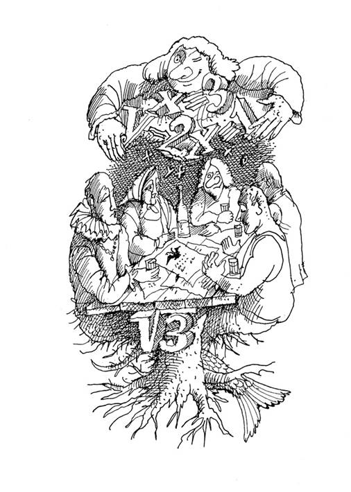
Глава
1
SUBITO
или
ПОСЛЕ
ДОЖДИЧКА В ЧЕТВЕРГ
Вот и
наступила пора увядания, когда на исходе прихотливая летняя жара, а
вечера наполняются прохладой, предвестником скорых ночных заморозков.
Солнце умеряет свой накал, чаще висят в воздухе мелкие капли дождя,
временами налетают порывы холодящего ветра, а накопившаяся за лето
донная муть всплывает у берегов Финского залива, вызванная
зачастившими штормами. На первых блеклых листьях, появившихся в
зеленеющих кронах деревьев, набирают силу багрово-желтые оттенки,
траурной каймой оповещая о грядущей зиме с ее метелями и холодами.
Стойкие запахи клубники и яблок, ранее заполнявшие пригородные
электрички, сменяют ароматы лесных ягод и грибов, исходящие из
корзинок, коробов, вёдер, трепетно поддерживаемых запьяневшими от
тихой охоты горожанами. Они везут свою нелёгкую добычу, чтобы, устав
еще больше, превратить ее в разнообразные заготовки, варенья,
компоты, маринады, соленья. А позже, когда-нибудь в январе или
феврале, похрустывая грибком или размачивая в чае лесную ягоду,
взгрустнуть и вспомнить ушедшие золотые деньки.
Вот
и мне не удалось выстоять против зова в неведомую даль. Забросив
дела, я устремился в лес, чтобы вкусить прелести набиравшего силу
грибного сезона. Нельзя сказать, что меня манили ароматы
флибустьерских морей и неразгаданные тайны египетских фараонов, но
хотелось чего-то необычного. Пусть соблазны и искушения даны человеку
во искупление грехов, неизбывная тяга к приключениям не проходит с
годами. Впрочем, какие приключения? - не первый раз я ехал на дачу в
Дибуны.
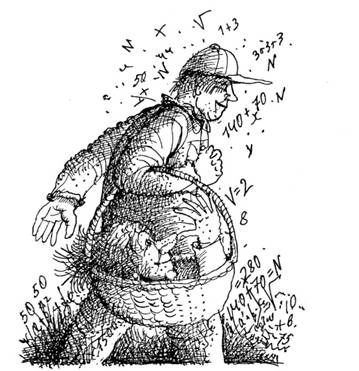
Лес,
являющийся целью моего путешествия, располагался по соседству с
дачным участком, начинаясь мелким кустарником и мокрыми колдобинами
прямо за оградой. Он радовал глаза, уставшие от невзрачной городской
архитектуры, сулил покой и приятное отдохновение. Однако город
напоминал о себе запахами бензина и машинного масла, шумом
нескончаемого потока автомобилей, мчащихся по другую сторону участка.
За автострадой шла линия выборгской электрички, добавляя к
автомобильной какофонии пронзительные гулы и свисты. Перекликаясь с
ними, в лесу постукивал дятел, но гораздо чаще откликались веселые
пичуги, залетавшие на дачный участок, чтобы подъесть остатки ягод
коринки и черноплодной рябины. Участок, как символ порубежья, отделял
бренный мир человеческих страстей от нетленной монументальности
природы. Хотя, кто знает, что вечно под луной?
Смеркалось,
ночь вступала в свои права. Полумрак окутывал привычный пейзаж,
придавая ему флёр недосказанности. По грибы я отправлюсь утром, а
вечером ничего не мешало отдохнуть, забыв о хлопотах и заботах.
Уходили суетливые помыслы, сознание освобождалось от гнета тревог и
сомнений, путы праздности были милее лицемерия феодальной несвободы.
А день клонился ко сну, замирали звуки, отрешившись от мирских дел,
на утомленную землю с небес спускалась благодать, невидимым
покрывалом окутывая всё сущее.
Мысли странным
образом перенеслись к головоломкам - они всегда нравились мне. В
хороших головоломках неизменно присутствует элемент неожиданности,
помноженный на их удивительную привлекательность. Казалось бы,
проблемы, затрагиваемые в головоломках, не имеют прямой связи с
реальной жизнью. Уверяю вас, это не так, ведь и в повседневности
постоянно встречаются головоломки, от простых до самых сложных.
Решением головоломок, например, будет поиск лучшего способа добраться
к друзьям на другой конец города, расставить мебель в комнате,
раскроить ткань на платье. А разве не головоломки - дожить до
очередной зарплаты, упаковать чемодан в дорогу или снять запутавшуюся
гирлянду с новогодней елки? Головоломные задачи находят нас даже
тогда, когда мы вовсе не расположены ими заниматься. Кто-то свыкается
с ними, расценивая как очередную неприятность, а другие, к которым
относился и я, получают удовольствие от их решения. Это и понятно,
ведь головоломки в миниатюре отражают вечную гармонию мироздания.
Зачастую
головоломки не нуждаются в том, чтобы их придумывали, - они имеют
свойство возникать в нашей жизни сами по себе, показывая, что вокруг
еще осталось достаточно места для тайн и загадок. И это совсем не
плохо. По большому счету, только там, где появляются возможности
выбора, простор для поисков и раздумий, существует редкая во все
времена возможность вырваться из царства необходимости в царство
свободы. Головоломки дают ее каждому, кто интересуется ими. Склонный
к решению головоломок ум избегает тех прямых схем, которые диктуют
калифы на час, превратностью судеб ставшие цензорами наших прав и
интересов. С другой стороны, по сравнению с жизнью, мир головоломок
имеет свои отличия. Основное заключается в том, что житейские
головоломки не содержат однозначного ответа. Удовлетворение их
правильным решением приводит к ощущению полноты жизни, которое никак
не связано с подглядыванием в известный результат, помещенный
заботливым автором в конце задачника.
Рассуждения
на тему головоломок завершились тем, что вспомнилась ситуация,
созданная с помощью ног на эскалаторе метро - ведь почти каждый день
я добираюсь на работу через станцию Площадь Восстания. Я
опаздывал. Чтобы наверстать потерянное в транспортной пробке время,
побежал вниз по эскалатору. Спускаясь со скоростью две ступени в
секунду, я насчитал сто сорок ступеней. Через день ситуация
повторилась, но теперь мне грозило большее опоздание. Естественно, я
бежал быстрее - со скоростью три ступени в секунду, а насчитал их
больше на двадцать восемь штук. Странно получалось: чем быстрее
бежишь, тем длиннее эскалатор. А сколько же всего ступеней на нём?
* * *
Спозаранку лес встретил
росой и восторженной армией комаров, вкушавших радость от моего
появления. Под ногами хрустело и чавкало, хвойную подстилку сменяли
островки мха и лужицы торфяной воды. Изредка попадались кустики
голубики и обобранные малинники. Спереди был военный полигон,
будораживший лес гулкими хлопками выстрелов. День ожидался погожим, а
это сулило приятное путешествие, вскоре потеплеет - исчезнут и
комары. Однако на все воля провидения! Свидетельством тому было
полное отсутствие грибов даже в самых заветных, ранее обильных ими
местах. Их то ли выбрали удачливые грибники, вставшие раньше, то ли
ночь оказалась неурожайной. За несколько часов корзинка пополнилась
парой подберезовиков и десятком сыроежек. Вот тебе, бабушка, и Юрьев
день...
К полудню стало теплее - и от ходьбы по
лесу, и от солнца, взошедшего вверх по небосклону. Скинув куртку, я
подставил лицо струйкам воздуха, слабому отголоску шумящего в лесных
кронах ветра. Не одарив грибами, лес награждал девственным покоем и
безмятежностью. Стрельбы кончились, кругом стояла тишина. Прелые
ароматы слегка щекотали нос, дышалось легко и свободно. Остался в
прошлом унылый город с его индустриальными пейзажами, грязными
улицами и сонмами попрошаек, трудолюбиво демонстрирующими свои
телесные и социальные язвы. Любое сравнение, выполненное под сенью
леса, было не в пользу развратной и прагматичной цивилизации. Тщетны
попытки выиграть спор с природой о первородстве, - думалось мне.
Воздух был упоительно вкусен и ничем не
напоминал привычный смрад нагретого асфальта. Чудные запахи
диковинных трав, ягод, смолы, еловых шишек, торфа и даже растущих
где-то грибов висели в воздухе, который был напряжен от их обилия до
такой степени, что казалось: тронь - и зазвенит. Все чувства, ранее
за ненадобностью дремавшие, невольно обострились, как бы в попытке
слиться с природной первозданностью. И сразу появилось ощущение
электризации, которая словно бы сгущалась вокруг меня. Являлось ли
это вестником предстоящих событий? Возможно, но в то время никакой
настороженности не было да и быть не могло - места знакомые, что
может приключиться?
Почти с пустой корзиной я
повернул назад, туда, откуда совсем недавно стремился убежать. Я шёл
на юг, солнце светило прямо в глаза. Пусть не повезло с грибами, зато
на даче ждали пара бутылок холодного пива и вяленая вобла, не без
умысла прихваченные в дорогу.
Истек час, другой,
но ни знакомая автострада, ни шпалы железной дороги не желали
обнаруживать себя. Вопреки ожиданиям, лес становился гуще и темнее.
Солнце затерялось в кронах огромных корабельных сосен. В пригородном
лесу все это было неправильным, более того, невозможным. Мирные
картины лесной жизни, открывавшиеся передо мной, приобретали
зловеще-мрачные тона. Стало совсем не до веселья. Компас я не
захватил, но муравейники, расположение веток и мха на стволах сосен,
а также любые другие признаки, что используют для ориентирования на
местности, приводили к заключению о правильности выбранного пути. Я
продолжал движение на юг.
Постепенно лес
превращался в вековую тайгу. На удивление, появились грибы, раз за
разом пополняя тяжелевшую корзину. С неизбежностью надвигалась ночь.
Без ночевки не обойтись, а это не самое лучшее при отсутствии
палатки, спального мешка и других походных принадлежностей. Впрочем,
где наша не пропадала, тряхнем стариной! С помощью зажигалки был
разложен костерок, а на ужин шеф-повар, он же единственный посетитель
лесной забегаловки, соорудил себе шашлык из грибов в клюквенном
соусе. Пусть одно блюдо, зато приготовленное с выдумкой и любовью. В
качестве палатки сгодилась разлапистая ель, ветви которой опускались
до земли, создавая что-то наподобие шалаша. Тут и переночую.
Перед
сном я размышлял о всяких странностях, к мыслям о которых привели
дневные блуждания по лесу. Как-то на рынке я
подметил, что купленные фрукты, если их взвесить по отдельности,
имели больший вес, чем при взвешивании вместе. Списать на обвес такое
несоответствие было невозможно - это был бы обвес наоборот. Более
того, эта же странность наблюдалась на точно выверенных электронных
весах, которыми я не поленился воспользоваться у себя на работе.
В чем причина? Тогда, может, и петух, стоя на
одной ноге, будет тяжелее? А может, дела
обстояли как с чеширским сыром, взвешенным на рычажных весах? На
одной чашке он весил восемь фунтов, на другой - два.
Стоило подумать...
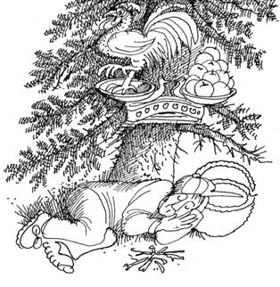
* * *
День следующий начался с
промозглого холода и ставших привычными укусов комаров, желавших
лишить меня остатков жизни в закоченевшем теле. Подстеленный снизу
лапник и шатер из еловых веток не смогли заменить привычный комфорт.
Ничего, мускулы растут при тренировке, - утешил я себя пионерской
мыслью. Затем, расправившись с остатками грибного ужина, возобновил
движение на юг. Пусть лес не похож на лабиринт, но, как и там,
требовалось держаться выбранного направления. Беда за бедой -
кончались сигареты, их могло хватить только до вечера. Может быть,
скоро выйду к жилью, - думал я, мечтая о горячем кофе с
бутербродами.
Вовсю занимался рассвет, когда
подвернулась натоптанная тропинка, ведущая в нужном направлении. Идти
стало легче, но однообразный пейзаж и колышущиеся блики рассвета
навевали сонливость. Вскоре тропа пересекла глубоко зарывшийся в
землю ручеек с холодной прозрачной водой, я вволю напился и освежил
лицо. Сигареты исключались, оставалось крутить головой, кидая взгляды
под ноги да по сторонам.
На полянке, выходившей
к тропе, я уловил что-то необычное, а подойдя ближе, обнаружил
человека, принявшего позу роденовского мыслителя. Он сидел на стволе
поваленного дерева, иногда мотая головой: то ли отгоняя комаров, то
ли вторя своим мыслям. Моё появление не вызвало у него ни малейшего
проблеска любопытства. Приблизившись, я смог рассмотреть лесного
жителя в деталях. Красная косоворотка, подпоясанная шнурком с
кистями, и широкие тёмные штаны, заправленные в блестящие лаковые
сапоги, делали его похожим на солиста ансамбля песни и пляски. Лицо с
выступающими скулами, русая шевелюра и вздернутый картошкой нос имели
яркий национальный колорит, под стать манере одеваться. Не хватало
только гармошки.
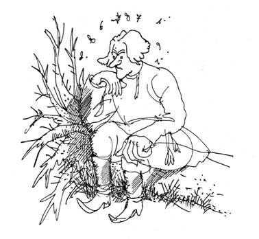
Я нерешительно
потоптался рядом и, наконец, поздоровался. Мой собеседник, явно не
желавший считать себя таковым, в ответ буркнул что-то
невразумительное. То ли поздоровался, то ли послал куда подальше.
Объяснив, что заблудился, я спросил, как выйти к Песочной или
Дибунам. Погруженный в раздумья, которые бороздили его лицо глубокими
морщинами, солист пробормотал:
- Разотри,
добавь опять, что имеешь вдругорядь? - а
потом, как бы спохватившись, громче добавил:
-
Хочешь - иди лесом, хочешь - тропинкой. Так или иначе, куда ни иди,
не окажешься там, где тебя не ждут.
Утомившись
сказанным, он отвернулся, упершись затуманенным взглядом в сапоги.
Уже неплохо, контакт налажен, - заключил я и сообщил ответ на
мучившую его загадку. Дернувшись всем телом, он молча уставился на
меня, на лице застыло удивление, а губы тихо шептали услышанную
фразу. Постояв несколько минут и не дождавшись иной реакции, я
двинулся дальше. Перед уходом я оставил другую загадку - пусть
поразмышляет абориген, если ему загадки нравятся.
-
Три не три, а дырок две. Что это?
Тем
самым я ещё более озадачил таинственного собеседника, но мой путь с
его подачи стал несравненно веселее. Хорошо знать, что не идешь туда,
куда не нужно!
Оглянувшись, прежде чем скрыться
за поворотом тропинки, я обнаружил, что любитель загадок бесследно
исчез, словно растворившись в воздухе. С травы вокруг поваленного
дерева не была сбита роса, не колыхалась ни одна ветка окружавшего
кустарника, как будто и не было здесь никакого мужика в сапогах.
Следопыт или мираж, как в пустыне? Может и мираж, но говорящий, -
думал я, шагая дальше. Ещё какое-то время пропетляв по тропинке,
которая выписывала невозможные кренделя, словно головная боль после
пышной презентации, я вышел в дубовую рощицу, непонятным образом
росшую в окружении хвойного леса. За ней впереди виднелось открытое
пространство, не иначе большая поляна или опушка леса. Несколько
шагов - и стало понятно, что места были обжитыми.
На
краю ровной изумрудной лужайки, тонувшей в тени деревьев, стояли два
дома. Ближним был рубленный из брёвен пятистенок, с расположенными по
соседству загоном для живности и огородом, скрытым за прохудившимся
плетнем. Тут же виднелся почерневший от времени колодец. Над домом,
просевшим одним из углов, с поросшей мхом крышей, вился дымок. Это
был знак присутствия хозяев, которые в погожий день, как мне
думалось, занимались приготовлением еды, настоятельно требовавшейся
моему организму. Метрах в ста громадой возвышался недостроенный
кирпичный коттедж затейливой архитектуры с колоннами и башенками. Он,
хотя и был подведен под крышу, зиял провалами пустых окон верхних
этажей, из которых с моим появлением стали разноситься скрежет и
звуки ударов, сопутствующие строительным работам. Ура
строителям!
Ноги вели туда, где готовили еду. С
каждым шагом голод ощущался все сильнее. Ничего удивительного - время
обеденное, а я толком не ел со вчерашнего дня. Давно не ел или давно
ел? - спросил я себя. Впрочем, это одно и то же. Взобравшись по
шаткому, но еще достаточно крепкому крылечку, я деликатно постучал в
приоткрытую дверь.
- Входи, милок, - донёсся в
ответ низкий грудной голос.
Шаг через порог - и
меня охватил упоительный запах свежеиспеченных пирогов. В большой
чистенькой комнате с неприхотливым убранством, которую так и хотелось
назвать горницей, под потолком были развешаны сухие пучки трав,
связки кореньев, чеснока и лука. На грубых деревянных полках стояли
берестяные туески, глиняные горшочки, деревянные баночки. Моё
внимание привлек отдельно стоящий большой стол. Там громоздились горы
пирогов, пирожков, ватрушек и пончиков всевозможных начинок: грибной,
ягодной, мясной, творожной, рыбной, картофельной. С трудом
оторвавшись от лицезрения столь притягательной картины и сглотнув
слюну, я заметил хозяйку, невысокую сухонькую старушку с ангельскими
чертами лица. На ней было темное платье в красный горошек,
перепоясанное огромным оранжевым фартуком. Волосы цвета вороньего
крыла гармонично оттенялись цветами её наряда. Она держала ухват и
ловко орудовала им в большой русской печи.
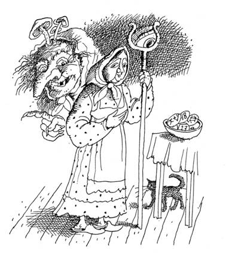
Прикрыв печь,
старушка обернулась, посмотрела мне в глаза и произнесла, как нечто
давно известное:
- И верно, Владимир Николаевич.
- Затем взглянула на корзину в моих руках: - А грибы то не бросил, в
самый раз для пирогов сгодятся, - и удовлетворённо чмокнула губами,
Затем предложила:
- Садись, угощайся.
Ну
и бабуля, чисто Штирлиц. Может, встречались где или еще один мираж?
Не много ли на сегодня? - пронеслось в голове. Впрочем, миражи не
пахнут так, как благоухали пироги, к тому же, пробудившийся голод
требовал считать их настоящими. Так и оказалось, когда я пристроился
на лавке и с удовольствием принялся уплетать хлебобулочные
изделия.
Появился чай в граненых стаканах с
подстаканниками, куски рафинада и сахарные щипчики. Старушка
присоединилась к чаепитию и жеманно прихлебывала чай из блюдца
вприкуску с сахаром. Мизинец её руки, державшей блюдце,
аристократически оттопыривался в сторону. Мы продолжали трапезу
молча.
Иногда старушка вставала и отходила к
печи, чтобы передвинуть противни или вынуть испекшиеся пироги.
Наконец, она сказала:
- Быстро ты к нам
добрался, иным ни в жизнь дорогу сюда не найти. Если уж оказался
здесь, погости у меня. Места хватит.
- Спасибо,
бабушка, за пироги с чаем, - ответил я. - Но здесь я совершенно
случайно - в лесу заблудился. Мне бы в Дибуны или Песочную выйти, уж
второй день по лесу хожу.
- Бабушка Агая меня
зовут. А насчет случайности ты не прав. Знаешь ведь, случайность -
проявление и дополнение необходимости. Учил философию?
Учить
то учил, а откуда лесная старушка об этом знает? Да и какой такой
необходимости применительно ко мне? - вертелось на языке, но я
воздержался от вопросов, слушая дальнейшие разъяснения хозяйки.
-
Жителей в здешних лесах немного, скоро всех увидишь - ближе к вечеру
на посиделки пожалуют, поэтому и пироги пеку. Правда, Лёшку ты уже
повстречал, не смог он удержаться, чтобы на тебя не глянуть.
Итак,
Лёшкой был тот дикий мужик, который страдал над загадкой. Ладно,
учтем, но откуда Агая узнала мое имя? Она улыбнулась:
-
Могу сказать и такое, чего ты сам о себе не знаешь. Поживешь здесь,
пообвыкнешь, сам во всем разберешься.
Посерьезнев,
бабушка добавила:
- Попасть в эти места ох как
не просто, а выбраться во сто крат сложнее.
Такой
поворот дел был не особенно симпатичен, но, не владея нужной
информацией, я не стал опережать события, а предпочел дождаться
вечерних гостей, которые могли оказаться более разговорчивыми - у них
все и выспрошу. Хотя, судя по результату нашей встречи в лесу,
Лешкина помощь была под большим сомнением. А пока Агая предложила
вздремнуть и указала на верх печи, где за ситцевой занавеской были
разостланы овчины. Тепло, сытость и не улегшиеся до конца треволнения
двух дней привели к тому, что сразу навалился глубокий сон.
Проснулся я сравнительно поздно от шума
многих голосов . Я выглянул из-за занавески. Глазам представилось
живописное общество, увлечённое обсуждением чего-то. Присутствующие
ели пироги, запивая их янтарным напитком из пузатого графинчика.
Яростно жестикулируя, они поочерёдно склонялись к разложенным на
столе листам бумаги, иногда что-то писали.
Спустившись вниз, я подобрался сзади и
заглянул через плечо мужчины в джинсах и зелёной безрукавке. В глаза
бросился крупный заголовок со словом «правительство».
Вглядевшись, я понял, что на столе лежал правительственный бланк,
сплошь исчерченный надписями и формулами. В центре бланка был
изображён куб.
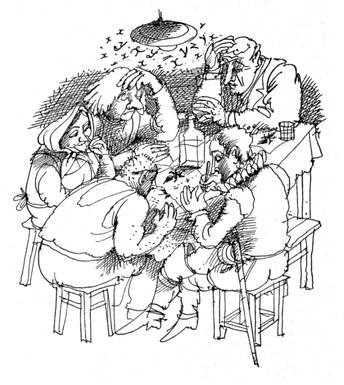
Взглянув на окружающие его формулы, я
понял, что это была головоломка о целочисленных размерах, решение
которой когда-то заняло у меня изрядное время. А
именно, куб был особенным: длина его ребер, так же, как полная
поверхность и объем, выраженные в сантиметрах, составляли целые
трёхзначные числа. Сильны лесовики, если
сразу собирались найти решение! Я негромко кашлянул, после чего
наступило молчание, будто ангел пролетел. Взоры обратились на
меня.
Кроме спортивного вида парня в зелёном,
Лёшки и Агаи присутствовали ещё двое - высокий старик с седыми
волосами и морщинистым лицом со следами былой красоты, одетый в мятую
серую тройку с цветастым галстуком, а также восточного вида мужчина,
как будто только что сошедший с театральных подмостков. Он был в
облачении испанского гранда, включавшем шитый золотом камзол,
панталоны с продольной серебряной каймой, заправленные в мягкие
кожаные сапоги с длинным голенищем. Его наряд довершало кружевное
жабо.
Агая поочередно представила меня
остальным. Парня в зелёном звали Водник, гранда - Косма, а старика -
Гордей. Завершив положенный ритуал знакомства, старушка объявила, что
задерживается только Иван, строитель, возводящий коттедж. Впрочем, он
мог и вовсе не прийти, несмотря на приглашение.
-
Если начал отдыхать, - пояснила Агая со вздохом. - Привык он за
воротник заливать после работы, но работник отменный.
Водник
кивнул на лист бумаги и произнёс:
- Все здешние
жители любят решать головоломки, чтобы не скучать в лесной глуши.
Раза два в месяц мы собираемся на посиделки с головоломками.
Присоединяйся к компании!
Говоря по совести, мне
самому хотелось поступить именно так, поэтому, взяв предложенный
стаканчик с напитком, оказавшимся отличного качества ликером, я
принял посильное участие в мозговом штурме. Головоломка с кубом была
практически решена. Затем речь шла о квадрате и треугольнике. Если
постараться, то квадратом со стороной двенадцать сантиметров можно
закрыть до трех четвертей треугольника. А вот треугольником, если
накладывать его на квадрат, только до половины квадрата. Какую
площадь имеет треугольник?
В
другой головоломке упоминалось о том, как в
день юбилейного гашения конвертов почтовый служащий начал
комбинировать оттиски имевшегося у него штемпеля. Вначале он
проставил штемпель на все конверты, затем, выполняя отсчёт с третьего
от верха стопки конверта, выбрал каждый пятый, и снова проштемпелевал
его. С новой пачкой он поступил тем же способом, а далее ещё
несколько раз повторил выбранную процедуру. Самое большое количество
штемпелей - пять - получилось на одном конверте. Сколько всего
конвертов погасил служащий?
Следующей
оказалась шахматная головоломка. На
стандартной шахматной доске восемь на восемь клеток случайным образом
расставлены две фигуры - ладья и король. Каковы шансы, что ладья бьёт
короля? Король ладью? Хотя бы одна из фигур бьёт другую?
Все
головоломки были записаны на правительственных бланках. Как
выяснилось, другой бумаги в доме Агаи не водилось. Пользоваться
бланками с вензелями было одно удовольствие, и я стал лучше понимать
вечных премьеров и бессменных председателей, истерично борющихся за
место под сенью двуглавого орла. Впрочем, Господь с ними, на Страшном
Суде за всё ответят.
А на очереди была новая
головоломка. Каким количеством нулей
заканчивается факториал тысячи, то есть число равное произведению
всех натуральных чисел от одного до тысячи?
Для ответа не требовался прямой расчет, который в данном случае был
бы весьма проблематичным. Затем решали головоломку
о девяти монетах, одна из которых фальшивая и весит меньше остальных.
Если вес нормальных монет одинаков, как с помощью рычажных весов за
два взвешивания отыскать фальшивую монету?
К
концу посиделок появилась хитроумная головоломка о том, как следует
относиться к утверждениям, содержавшимся на очередном бланке,
извлеченном Агаей. Все тринадцать строчек
текста, заполнявшего бланк, были по порядку пронумерованы. В каждой
строчке указывалось: "Ложными является лишь столько утверждений,
содержащихся на этом листе, каков номер данной строчки". Сколько
истинных утверждений было на самом деле?
-
Ещё стоит подумать, что произойдет при замене
слова "лишь" на сочетание "по крайней мере"?
- после минутного размышления добавил сложности Косма.
Компания
пришлась мне по душе, через какое-то время я сам рассказывал
головоломку, навеянную трудовыми буднями. На
одном из факультетов Технического университета работают мои коллеги,
фамилии которых Иванов, Петров, Сидоров и Семёнов. Один - декан,
другой - профессор, третий - доцент, а четвёртый - ассистент. В
учебной группе второго курса, где я проводил занятия, учатся четыре
студента с теми же фамилиями. Однако студент с фамилией, что у
профессора, не является его родственником. Невестка Петрова уехала на
постоянное место жительства в Израиль. Другой коллега, сын которого
был одним из тех самых студентов, даже не знал, что друзья сына -
Сидоров и Петров. Жена ассистента до сих пор не знакома с Семёновым.
Сидоров был тестем доцента и с нетерпением ожидал появления внуков. В
то же время старшему сыну декана скоро предстояло учиться в школе.
Что за должности у каждого из моих коллег?
-
Ладная задача, - прокомментировал Гордей, - только условие запиши,
чтоб не путаться.
Понятно, что и эта головоломка
была успешно решена. Но не всё развлекаться, - напомнил я себе, -
надо дорогу домой узнавать. Работа ждёт, как-никак, да и декан будет
недоволен моим отсутствием. Вопрос по поводу способа добраться в
Дибуны вызвал замешательство: Лешка чесал затылок, Косма хмурил брови
и только Гордей отреагировал вслух, сказав, что время позднее, а
завтра Агая поможет во всём разобраться. Известно, мол, что утро
вечера мудренее. Почувствовав очередную недосказанность, с которой
уже столкнулся в предшествовавшем разговоре с Агаей, я не настаивал.
За порог не гонят - ну и ладно. Завтра, так завтра. Всё здесь было
как-то не так, а скорее, совсем не так, как должно было бы
быть.
При прощании каждый из новых знакомых
приглашал в гости, обещая радушный прием и развлечения. Вместо
дежурной бутылки приветствовались головоломки. Перед уходом Лёшка
специально поймал меня, когда я вышел на свежий воздух выкурить
последнюю сигарету.
- Ещё не раз увидимся, -
многозначительно заявил он. - Тут кругом мой дом, поэтому было бы
странно приглашать в гости, ты уже в гостях. Запомни, что я очень
люблю загадки. Угадай на досуге: не измерив,
не узнаешь, но, не зная, ощущаешь, а порою убиваешь.
Или: сделанный - легчает, таиться выбирает, он
большее скрывает, чем то, что открывает.
-
Летело стадо гусей... – завёл он старинную головоломку и,
удаляясь, исчез в тени деревьев, махнув на прощание рукой. Его слова,
повторенные многоголосым эхом, долго звучали в вечернем воздухе.
Реверберация, - подумалось мне, - откуда?
Поворчав
о том, что завтра целый день придется потратить на уборку дома, Агая
препроводила меня на постой в коттедж, отделка нижнего этажа которого
была практически завершена. Мне досталась угловая комнатка с двумя
окнами, выходившими на лес и на избу Агаи. В ней имелись кровать,
столик, пара стульев, вешалка и добротные толстые
свечи.
Осматриваясь перед сном, я увидел, что в
примыкавшей к коридору прихожей располагалась керосиновая плита,
попросту керосинка, в шкафчике лежали продукты и посуда. Тут же
находился холодильник. Удивило, что, при отсутствии электричества, он
держал холод и серебрился слоем инея изнутри. Рядом с холодильником
обнаружились полный короб папирос "Беломорканал" и
несколько блоков спичек. Проблема курения, таким образом, была
решена, но оставался вопрос удобств. Продолжив поиски, я прошелся по
коридору. Из него вела лестница наверх, сюда же выходили несколько
дверей. Из-за одной доносился богатырский храп, другая, заляпанная
краской, была приоткрыта и скрывала за собой вместительную комнату,
служившую складом строительных материалов. Дверь поменьше оправдала
мои ожидания - побывав за ней, я возвращался к себе повеселевшим. В
своем временном прибежище я примостил под кровать опустевшую корзину
и задумался над пожеланием бабушки.
- Завтра за
тобой новая головоломка, - заметила она, покидая коттедж. Как гость,
я имел обязательства перед хозяйкой и начал прикидывать, чем бы
порадовать старушку. Может, рассказать ей об
именитой шарлатанке, которая утверждала, что в состоянии определить
сколько монет находится в закрытой коробке, стоит ей только взглянуть
на нее? И попросить Агаю найти простой способ убедиться в обмане,
даже при условии, что шарлатанка упорно отказывается сообщить
известное ей количество монет в коробке? А
может, поведать историю о волшебном автомате,
который одну копейку разменивает на пять рублей и один рубль - на
пять копеек? Удастся ли с помощью такого автомата, начав с одной
копейки, закончить обмен, имея равное количество тех и других монет?
* * *
На новом месте сны
снились дурные, я часто просыпался и ворочался с боку на бок.
Привиделась лекция, и в тот момент, когда я заканчивал вывод
нестационарного уравнения Шрёдингера, доска, на которой я мелом
рисовал формулы, c душераздирающим скрежетом опрокинулась, расплющив
меня по полу. Сон разорвал громкий стук в дверь. Это была не
Агая.
Дверной проем загородила фигура бородатого
верзилы в трусах и майке. Его всколоченная шевелюра вкупе со слегка
припухшим лицом и сизоватым отливом носа неоспоримо свидетельствовали
о вредном пристрастии. Но черты лица были правильные, даже
благообразные. Он был удивительно похож на примелькавшегося матерого
демократа, однажды презревшего милую сердцу армейскую партполитработу
и как-то утром проснувшегося истинным верующим, поборником свободы
слова и прав человека. Хотел бы и я проснуться в другом месте! Между
тем, выходец из партийного прошлого возопил:
-
Просыпайся, путешественник, завтракать пора!
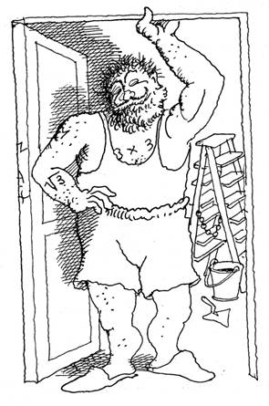
Конечно,
это был Иван, отходивший к началу трудового дня. Кухня, она же
столовая, она же прихожая, располагалась рядом. На керосинке
скворчала яичница, лежали пироги, остатки вчерашнего пиршества,
стояла вместительная бутыль с ликером. Вот и начинается сладкая
жизнь, - мелькнула вялая мысль. Завтракать совершенно не хотелось. В
перерывах между потреблением пищи и горячительного Иван объяснил, что
вчера заработался, затем хорошо отдохнул, а после не имел ни желания,
ни возможности принимать участие в посиделках. Он знал о моем
появлении, так как Агая заранее предупредила его относительно нового
постояльца коттеджа.
Иван то и дело беззлобно
ворчал по поводу Агаи, пеняя ей тем, что она донимает его
строительный ум головоломками. Не понять ей, что он сроду подобными
вещами не интересовался, в отличие от странной публики, которая
вьется вокруг Агаи. Но бабушке не откажешь: может с довольствия
снять, чарочку не поднесет. Здесь он выразительно кивнул на сосуд с
ликёром и приговорил очередной стакан:
- Куда
денешься, бугор с зарплатой который день уже не едет, приходится
одному на объекте вкалывать, да ещё головоломками всякими
заниматься.
- Далеко ли до ближайшей остановки
электрички? - спросил я, заинтересовавшись приездом бригадира, или
бугра, как именовал его Иван.
- Сюда часа
полтора машиной добирались, - после некоторого размышления отвечал
он. - А где электричка, не знаю.
- Может,
прихватит твой бригадир на обратном пути?
- Чего
же, места в машине хватит, только не шибко он едет. Гудит, наверное,
который день. Пусть явится, уж я его за грудки потрясу..., -
размечтался Иван. Затем, подумав, посоветовал посетить расположенную
неподалеку деревеньку, куда сам наведывался несколько дней
назад.
- Правильно они там, блин, живут, поэтому
и люди неплохие. Может, что подскажут тебе, все-таки местные, должны
знать, как отсюда выбраться.
После Иван
рассказывал о дружках, которые, взяв отгул за свой счёт, оставили его
одного на объекте, о том, что Агая складирует еду в холодильник, а уж
горячительным для дезинфекции никогда не обидит, особенно после
свежей головоломки.
- И тебе парочку расскажу,
из тех, что сам сочинил, - добавил он.
- Захотелось нам в
жаркий день попить квасу, скинулись втроём по 6 рублей,
а с объекта уходить нельзя, поэтому послали в ларек соседского
мальчишку. Оказалось, что разливной квас стоил стоил 13 рублей, так
что после его покупки у мальчишки остались еще пять. На обратном пути
мальчишка решил, что эти деньги на троих не делятся, и изъял в свою
пользу два рубля, вернув каждому по рублю. Когда квас выпили, стали
считать: из шести вычесть рубль, получается, что каждый заплатил по
пять рублей, вместе - пятнадцать. Два рубля забрал мальчишка, итого
получается семнадцать рублей. А куда пропал ещё один рубль?
-
Считать на трезвую голову надо, тогда и деньги не пропадут! - ответил
я вместо решения.
Иван не обиделся, а завёл
новую историю.
- Был у
нас заказчик из тех, которых "новыми" называют, хозяин
жизни, блин. Увлекался дизайном и архитектурой. Захотел этот
просвещенный буржуй построить себе трехэтажный дом кубической формы с
двадцатью семью одинаковыми комнатами. Даже комнаты в проекте имели
форму куба, чтоб на каждом этаже по девять комнат. Все они должны
были соединяться с соседними комнатами того же этажа дверьми, а с
комнатами, расположенными строго выше или строго ниже, лестницами.
Вход в дом согласно проекту находился в угловой комнате первого
этажа. Главной идеей будущего домовладельца было желание войти в дом
с гостями и, пройдя по разу через все комнаты, закончить демонстрацию
своего достатка в центральной комнате второго этажа. Как ты думаешь,
что бугор сказал?
- Да
уж понятно, ничего хорошего.
- Точно, теперь
задачка на сообразительность. Лежала как-то
труба на стройке, повадились с ней дети играть. Однажды два мальчика,
ползали сквозь трубу, будто бы в пещере сокровища искали. Труба
узкая, проползти сквозь нее можно только лежа на животе. Подумай, как
им удалось пробраться внутри трубы, если они начали движение с разных
её концов?
- Дети и не
такое могут! - бросил я, расценив головоломку как
изящно-некорректную.
- Будет скучно - приходи
наверх, вместе сообразим, - наказал Иван перед убытием на трудовую
вахту. - Да и сам придумай что-нибудь для бабушки.
Смахнув
со стола остатки завтрака, я выбрался наружу и тут же столкнулся с
предметом наших разговоров. Агая, собственной персоной, кормила кур.
Заметив меня, она завела неспешную беседу о своем хозяйстве, тяготах
уединенного быта, давешних гостях, а также о головоломках, которые ей
особенно понравились на посиделках. Улучив момент, когда Агая
примолкла, чтобы подкинуть курам новую порцию корма, я сообщил, что,
возможно, вскоре покину её гостеприимное жилище с ивановым
бригадиром. Бабушка ласково посмотрела на меня взглядом, каким
одаривают детей и дурачков, и произнесла:
- Не
томи себя напрасно, всё сложнее, чем кажется. Зайдем в дом,
поговорим, нет в ногах правды.
Усадив за стол и
пристроившись рядом, Агая поведала:
- Оказался
ты, милок, в таком месте, которого не существует ни на одной
географической карте, даже самой лучшей. Его как бы нет вообще, как
отсюда выберешься? Все наши места отделены от внешнего мира барьером
-непроницаемой границей, если оказался тут, считай, назад пути нет.
Не спрашивай, откуда эта самая граница взялась: может, катаклизм
какой приключился или физики секретный эксперимент провели, - с
намёком на мою профессию закончила речь Агая.
Судя
по всему, она опять что-то недоговаривала, но даже сказанное немало
удивило меня. В Дибунах остались одежда, документы, проездной билет
на электричку.
- Какая граница? Пока шёл сюда,
ничего не видел - ни столбов пограничных, ни колючей проволоки, ни
контрольной полосы. Один лес кругом, да и прошел я от силы километров
двадцать, а этого даже до финской границы маловато.
-
Ты и не мог ничего заметить, сюда попадают не по своей воле,
неожиданно, без художественных эффектов и кинотрюков. Если бы что и
распознал, то жаловаться некому - с фатумом не поспоришь.
Я
вовсе не жаловался - плакаться в жилетку было мне не по натуре. Стало
понятно, что разговор снова не складывается. Меня интересовало как
выбраться из этих мест, а Агая, наблюдая мои замешательство и
искреннее недоумение, старалась, по возможности, успокоить. Лучше бы
рассказала, как всё обстоит на самом деле. Чтобы сгладить возникшую
неловкость, она выставила примелькавшийся вчера графинчик, придвинула
пироги. Вспомнив про оставленное в Дибунах пиво и бутыль с домашним
вином, занимавшую не последнее место в городской квартире, я махнул
рукой и налёг на угощение. Убедившись, что я не демонстрирую порывов
рвать на себе остатки волос или занудно пытать её вопросами, Агая
перестала нервничать.
Между тем, меня все
сильнее донимал вопрос красноармейца Сухова: "Так что же, всю
жизнь мне тут жить?" Я не произносил его, но, подозреваю, он без
труда читался на моем лице.
С тем же вопросом я
отправился к себе, где отдался во власть меланхолических раздумий.
Итак, больших размеров зона, пусть без охраны, но с обязательной
колючей проволокой по периметру, той самой границей, на которую
ссылалась Агая. Вряд ли она обманывает, что толку? Силой никто не
держит, могу хоть сейчас сняться и уйти, недели две в лесу
продержусь, а там, если повезет, выберусь из этих мест, ищи меня
потом. Это было понятно и Агае, значит, не всё так просто.
Ладно
бы, непроходимые топи, заоблачные горы, безводные пески, а тут
какая-то граница. И где? - в знакомом пригородном лесу. Проверю, все
в моих силах. Вот где пригодится образование физика, а может, и от
ученой степени будет прок. Хотя, без измерительных приборов и
датчиков, простым руконаложением, как делают шарлатаны-целители, или
органолептически, как порой принято у судмедэкспертов, настоящее
исследование провести невозможно, да и готовится оно не в один день.
Но можно ли что-то сделать, вообще ничего не делая? - возразил я себе
чисто риторическим вопросом, не требовавшим ответа. В голове зрели
контуры изыскательской кампании, которая должна состояться следующим
утром. Следовало обдумать её тактику и стратегию.
Я
обстоятельно прислушался к себе и решил воспользоваться житейской
мудростью, рекомендовавшей расслабиться и извлечь максимум
удовольствия из любой ситуации. Передвинувшись на кухню, отыскал
иванов запас. Стимулируя мозг, начал ваять архитектуру песочных
замков и дворцов. Незаметно пролетело время, сверху спустился Иван,
на этот раз облачённый в замызганный рабочий комбинезон, и с
удовольствием присоединился ко мне.
Ближе к ночи
пожаловала Агая. Её проницательному уму стали понятны мои
естественнонаучные намерения. Чтобы облегчить неизбежные блуждания в
незнакомых месталх, она дала мне клубок ниток, вполне обычный на вид,
даже грязноватый.
- Японская штучка, он тебе
понадобится вместо компаса. Скажешь куда идти, клубок туда и
покатится. Ступай вслед, с ним не заплутаешь.
Чему
удивляться? Ещё одна деталь к головоломке, которую предстояло решить.
Глава
2
CAPRICCIO
или
МИЛЬОН
ТЕРЗАНИЙ
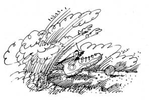
Утром я был
приставлен к делу - помогал Агае по хозяйству: из колодца наносил
воду в большую бадью, стоявшую в сенях, наколол дрова и сложил их под
навес. Хотя Агая и не заводила разговор о деньгах, свой вынужденный
постой требовалось оправдать. Бабуля отнеслась к идее весьма
благосклонно, а сама, завершив положенные утренние хлопоты,
уединилась в доме. Пвидимому, принялась за решение головоломок,
которые я преподнес ей с утра пораньше. Я видел её у окна в
задумчивости склонённой над столом, где были разложены обязательные
бланки с вензелями. Агая писала, затем порывисто мяла исписанные
листки и сбрасывала их на пол. Творческие искания никогда не даются
легко!
Полдень застал меня на пути к границе. Я
шёл на север, откуда недавно явился в эти места. Солнце светило со
спины, тенью показывая направление движения, но, всё равно, впереди
бодро катился клубок ниток. Я проверял на что способен этот сказочный
колобок, каковы его свойства, а то заведет куда-нибудь как Сусанин.
Однако колобок держался вполне благопристойно, не делая попыток
увести в сторону от намеченного маршрута.
Вот уж
измыслил автор средство ориентирования, - отзовется проницательный
читатель. - Не надо нам сказок об аистах, сколько их наслушались! Но,
уважаемый, - отвечу я, - не о нас ли слова: "мы рождены, чтоб
сказку сделать былью?" Примером служил удивительный
клубок.
Проведём анализ, - вел я диалог сам с
собой, чтобы скоротать дорогу. - Известно, что современная
микроэлектроника, основанная на нанотехнологиях и мономолекулярных
элементах, в состоянии творить чудеса. Что по сравнению с ней Левша,
который блоху подковал! Будет ли разница между клубком,
сверхтехнологичным продуктом японского происхождения, и клубком,
сотворенным с применением сказочной магии, мысль о которой постепенно
закрадывалась в мое сознание? В обоих случаях, он состоит из
рецептора голосовых команд, принимающего и анализирующего речевые
данные о направлении движения, процессора, обрабатывающего
информацию, устройства геодезической привязки к местности и
двигательного механизма. Машинные коды - и никаких умствований! Дело
дизайнера придать форму и очертания заурядному промышленному изделию.
Конечно, с учётом эргономических требований, выводимых из
человеческого фактора. Вместо того, чтобы невозможным образом
выворачивать руку с компасом, куда приятнее и удобнее двигаться за
клубком-проводником. Ещё тысячи лет назад подобное механическое
устройство возникло в мифах и легендах, откуда бы иначе появились
мысли о нити Ариадны или сказка о колобке, сбежавшем из
печи?
Впрочем, уже сам вопрос выбора маршрута
движения представляет порой головоломку. Вспомнилось,
что в новой версии компьютерной игры о приключениях Марио этому
веселому человечку предстоит совершить опасное путешествие по восьми
разным странам, расположенным на таинственной и недружелюбной
космической планете. Каждая страна имеет форму сферического
треугольника, который получается при сечении поверхности планеты
тремя взаимно перпендикулярными плоскостями, причем точка пересечения
плоскостей совпадает с центром сферы. В силу этого любая страна имеет
форму сферического треугольника и граничит с тремя другими. Марио,
начиная своё путешествие в одной из стран, должен по разу посетить
все остальные и вернуться туда, откуда начал свой путь. Границы стран
он может пересекать только по сторонам треугольников. Сколько
различных способов в состоянии выбрать Марио для своего путешествия?
Хотя, что говорить о хитросплетениях маршрута Марио, если
совсем не просто провести замкнутую ломаную линию из шести отрезков
по узлам решётки четыре на четыре точек, чтобы она, хотя бы по разу,
проходила через каждую точку. Или
расположить девять точек, чтобы они
образовали десять рядов по три точки в каждом.
Посторонние
мысли исчезли, когда передо мной возникла граница, на этот раз
настоящая, не имеющая никакого отношения к приключениям Марио.
Открывшийся вид впечатлял как выписанные в деталях кораблекрушения
Айвазовского или набросанные жирными мазками инфернальные ужасы
Сальватора Дали. По коже расползлись холодные мурашки.
Антрацитовая
стена абсолютного мрака, чернее не бывает, вертикально уходила вверх.
Она имела четкий край соприкосновения с поверхностью земли, а наверху
мрак постепенно редел и сливался с голубизной неба. Будто огромной
бритвой, стена разрезала растительность, китайской цитаделью
проходила по поверхности земли, спускалась в овраги, поднималась на
пригорки, разделяя сущее на две неравные части: до и после. Едва
различимые в вышине птицы, изредка направлявшие свой полет в сторону
стены, отворачивали, не долетая до неё.
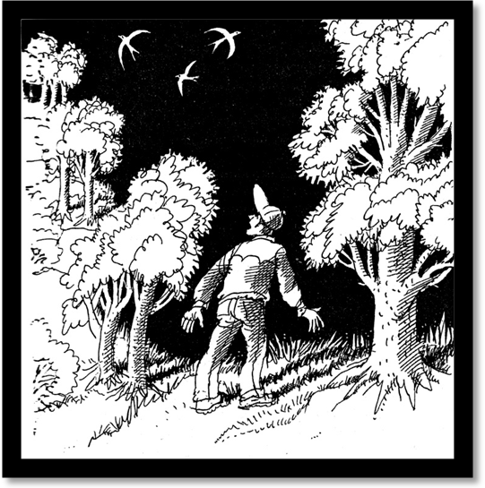
Невидимая
глазу, она поднималась наверх, куполом накрывая этот мир со всем его
содержимым, включая и меня. Скорее всего, стена также спускалась под
землю, создавая скорлупу отчуждения, запечатавшую выход
наружу.
Внезапно прямо надо мной молнией
мелькнула ласточка, отвернув от угольной плоскости лишь на расстоянии
полуметра. Значит, и мне - чем я хуже ласточки? - можно было
приблизиться на такое же расстояние. Подойдя, я протянул руку ладонью
вперёд, чтобы почувствовать возможное тепловое излучение - его не
было. Придвинулся вплотную и слегка надавил на мрак указательным
пальцем. Поверхность оказалась твердой и прохладной, она не
шелохнулась, но к месту нажима начали сбегаться отмеченные радужным
свечением круги, хорошо заметные на чёрном фоне. Их яркость падала по
мере удаления от пальца. Не иначе, перенос энергии, - решил я.
Надавил сильнее - палец стало неприятно жечь, мельтешение кругов
увеличилось.
Отойдя на приличное расстояние, я
подобрал камень и с силой запустил им в стену. После удара,
сопровождавшегося яркой вспышкой, он беззвучно отскочил и, как
бумеранг, понёсся назад, целя точно в голову. Абсолютно упругий удар,
почти бильярд, - думал я, уворачиваясь. Подобрав упавший камень,
заметил, что одна сторона его стала плоской, словно отшлифованной.
Хорошенькое начало, со стеной-границей лучше не шутить! - она дала
понять это совершенно определённо.
А как одна
головоломка отнесется к другой? Я положил перед собой клубок и велел
двигаться вперёд сквозь стену. Умный механизм, а скорее дьявольское
порождение, игнорировал команды: инстинкт самосохранения, скрытый в
электрических схемах, оказался сильнее. Не беда, у меня имелись
домашние заготовки, часть которых вполне соответствовала сложившейся
ситуации. Ни при каких обстоятельствах и никому не расскажу, чем я
тогда занимался. Но когда доступный арсенал средств и способов
оказался исчерпанным, настала очередь подводить итоги.
Вероятно,
стена, она же граница, состояла из нейтральной субстанции, внешняя
часть которой обладала огромным коэффициентом поверхностного
натяжения. Что находилось внутри оставалось загадкой, но состояние
поверхности границы всецело определяло обнаруженные эффекты,
обследованием которых я занимался полдня. Чтобы преодолеть границу,
требовалось убрать натяжение, как, к примеру, плёнка мыла поступает с
поверхностью воды. Чем и как? - вот главный вопрос, на который я не
знал ответа. А пока, словно паучку-водомерке, мне предстояло
скользить по поверхности, не изведав, что же скрыто в
глубинах.
Завершая знакомство с экзотическим
ограждением своего застенка, я прошел несколько километров вдоль
границы. Иногда мой путь выводил на поляны, чаще требовалось
продираться сквозь густой лес или спускаться в овраги. Везде картина
была одинаковой: граница замыкала этот мир. Где тот милый сердцу лес,
в который я отправился по грибы?
Обратный путь
под чутким руководством колобка представлял собой легкую прогулку. Он
с удивительными осведомленностью и проворством выбирал вполне
приличную дорогу, вместе с тем, лужицы и ручейки вызывали у него
некоторые затруднения. Если первые колобок огибал, то перед вторыми
останавливался и ждал, пока я не перенесу его на другой берег. Из
клубка-колобка получился бы неплохой товарищ для отдыха в лесу,
надежный, но слегка молчаливый.
Я шёл лесом, он
уже не представлялся ни темным, ни слишком угрюмым. Обычная
лесополоса, раскинувшаяся на километры вокруг, замкнутая под куполом
неизведанного. Шелестели кроны деревьев, волнами набегал ветерок,
изредка разносился гулкий звук от упавшей с дерева шишки или
треснувшей под моей ногой сухой ветки. Окружающая идиллия не
напоминала о мрачном антраците границы, о затерянности этого леса в
пространстве и времени, о таинственных силах, получивших здесь свое
пристанище. Впрочем, я не спешил вносить окончательную ясность, так
как любые чудеса, и настоящие, и мнимые, раньше или позже получают
свое объяснение. В этом не было сомнений, но чувствам не прикажешь,
конечно, хотелось бы разобраться во всем побыстрее. Каждый сам кузнец
своего счастья, - вспомнил я крылатую сентенцию, заставляя себя на
время забыть о наличии зоны со свободным режимом передвижения, в
которой оказался сам того не желая.
Мой путь не
лежал прямо - частенько приходилось петлять, чтобы обойти разлапистые
елки или колючие заросли малины, островками раскинувшиеся средь
могучих стволов. Порой попадались лосиные лепешки, облепленные
мухами. Подлеска почти не было, так как высоченные деревья затеняли
землю, не позволяя молоди пробиться вверх. Всё это не мешало грибам,
которые росли в изобилии: боровики, черноголовики, грузди, рыжики и
такие, названий которых я вообще не знал. Засмотревшись на
гриб-великан, шляпка которого возвышалась до уровня моего колена, я
совершенно не заметил, что рядом появился Лёшка.
-
Привет! - заявил он, как ни в чем ни бывало, и добавил: - Красно
солнце поутру - моряку не по нутру.
Имея ввиду
участившиеся лепёшки, я также отозвался присказкой, что в дерьмо
вступить - к деньгам. Кивнув головой, Лешка согласился, а затем изрек
нечто утонченное:
- А знаешь ли ты, что при
переезде в новый дом положено вначале запускать петуха? И это
правильно. Правильно и другое. Один
брат ест и голодает, другой уйдет и пропадает. Кто они?
Потом
спросил:
- Что с загадками для меня? - тем самым
напомнив о своем особом пристрастии.
Пусть не
пытает, как тать в ночи, плохой мир лучше доброй ссоры, - думал я,
излагая ему желаемое.
- Угадай,
что за число, треть от которого равна половине?
Если сразу не решишь, подумай и над другим. Сколько
у меня монет, если все, кроме двух, десятирублевые, если все, кроме
двух, двадцатирублевые, если все, кроме двух,
пятидесятирублевые?
Лёшка
внимательно слушал, по его лицу растекалось блаженство. Затем махнул
рукой и коротко бросил:
- Завтра, - исчезнув так
же загадочно и неожиданно, как появился. Может почудилось, но в
воздухе пахнуло серой, после чего я почесал нос и несколько раз
громко чихнул.
По возвращении я направился за
информацией к Агае. Чтобы завязать беседу, рассказал головоломку,
составленную в конце прошлого года. Случилось,
что взглянув на календарь и как бы желая отсрочить неминуемые
хлопоты, я обнаружил, что три различные цифры даты образуют равные
сумму и произведение. Что за число и месяц это были?
Агая
попыталась сразу же дать ответ, но через пару минут развела руками и,
оценив полученный результат, эмоционально произнесла:
-
Вот ерунда!
Я подлил масла в огонь:
-
Куда бежишь, торопишься? У нас не четвертная контрольная в школе,
разве кто-то просит давать ответ сразу? Посиди, подумай.
-
Привыкла я к тому, что всякую головоломку надо
решить, вот и твои тоже.
-
Не говори так, иначе головоломок станет больше.
-
Ой, ой, совсем напугал, - притворно заохала Агая, - давай свои
головоломки.
- Что же, слушай. Если
вместо букв того, что ты произнесла вначале, подставить цифры от нуля
до девяти, то квадрат первого числа будет равен второму числу. А вот
каждое из двух слов, которые ты произнесла потом, можно найти как
квадрат и куб одного и того же двузначного числа. Кстати, я и сам эти
числа назвал, да ещё раньше тебя. А
чтобы у тебя всё было в порядке с пищей для ума, или ОК, как говорят
программисты и американцы, возьми
слово СКОС, откинь одинаковые буквы, а на получившееся число подели
само это слово. Вот и будет ОК!
Старушка
удивленно вскинула голову и надолго замолчала. Прервав её
затянувшиеся размышления, я полюбопытствовал как добраться до
деревеньки, о которой узнал от Ивана. Мне бы хотелось кое о чем
справиться у тамошних жителей.
- Часа два ходу,
но до темноты не успеешь, лучше не ходи. Дело не в том, что
заблудишься, - клубок даже в темноте доведёт. Узнала я, местные бабы
собираются вечером деревню опахивать. Тёлка там пала, поэтому хотят
целебной чертой от оборотня огородиться, чтобы порчу не нёс больше.
Известно тебе, что такое опахивание? Нет? - послушай. Выйдут они в
темноте полуголые, впрягутся в соху и троекратно обойдут с ней вокруг
деревни. Впереди - образа, вслед - соха, далее - толпа баб и девок с
дубинами, косами, ухватами, кочергами. Если встретят на пути живность
какую или мужика, то забьют насмерть, полагая оборотнем. Как бы тебя
по случаю не прибили. Пойди-ка завтра, когда у них праздник
церковный. В этот день никто не работает, по домам сидят, вот и
поговоришь с кем хочешь.
Зачем отказываться от
дельного совета? Я попросил у Агаи бумагу и ручку. А затем, унося
пачку мелованных бланков и золотой "паркер", отправился
думать о головоломках - в чужой монастырь, где все решают
головоломки, со своим уставом не ходят. Вскоре я знал, чем озадачу
здешних любителей.
Ближе к ночи появилось
несколько догадок об окружающей несуразности. Я не исключал, что
ответ лежал в сфере непознанного. Интуиция подсказывала, что стоило
бы вспомнить русские сказки и предания.
* * *
В сопровождении
друга-колобка я приближался к деревеньке, дома которой проглядывали
сквозь поредевшие заросли. Благоразумный Иван, узнав о предстоящем
путешествии, снабдил всем необходимым для первого знакомства.
-
Смотри, не важничай особо и не задирайся, а то кулаками приласкают.
Учти, мужики шутки плохо понимают, - проинструктировал он на
прощание.
- Ввяжемся в бой, а там посмотрим, -
по-суворовски оценил я его наставления.
Предусмотрительность
требовала убрать колобок от посторонних глаз, дабы избежать ненужных
расспросов относительно маленького чуда. Заодно я спрятал часы - мало
ли что, вдруг Иван накаркал и дело до драки дойдет. Зачем искать
приключения, если они сами находят тебя? С котомкой за плечами я
ступил на разбитую колесами телег дорогу. Простота сельской жизни
предстала передо мной во всей неприкрытой наготе.
-
Доброго здоровья, - обратился я к двум мрачного вида нечесанным
мужикам, понуро сидящим на толстенном чурбаке, прислоненном к
изгороди, которая с двух сторон проходила вдоль главной улицы.
Главной потому, что она была и единственной на все селение. Где-то
невдалеке мычали коровы, блеяли овцы, заливисто лаяла собака, на
близком лужке у околицы деревни перекликалась молодежь. Те, кто
помладше, играли в свайки да бабки, а их более старшие товарищи
развлекались подвижными играми, перемежаемыми поцелуями и полными
напускного недовольства вскриками расцелованных. По случаю праздника
разносились отзвуки хорошей гулянки, которая сопровождалась то ли
песней, то ли воплями под расстроенную гармошку. В воздухе стоял
крутой запах навоза.
Хмурые индивидуумы, всю
одежду которых составляло мятое полотняное исподнее, своеобразно
отреагировали на мое приветствие.
- Здоровье
поправлять надо, а брага кончилась. Единова голова болит. В гости не
зовут, совсем ожаднели соседи. Сами до беспамятства веселятся, вовсю
глотку мочат.
Ситуация складывалась
благоприятно. Имея при себе бабулин ликер, заботливо фуражированный
Иваном, я посулил тут же помочь здоровью собеседников, что вызвало
горячий отклик с их стороны и крепко помогло в дальнейшем. Двумя
фразами добившись расположения, я узнал, что встретил братьев,
отмеченных неумеренным страданием на протяжении всего дня. Оно
явственно читалось на их лицах. Объяснялось всё просто. Предыдущий
праздник, состоявшийся седмицу назад, застал их врасплох. Только
начав отходить от ежедневного застолья, оба столкнулись с
необходимостью новых празднеств, которые не мог игнорировать ни один
добрый христианин. Именно это доставляло им неописуемые душевные
переживания, так как исполнять канон было нечем. Обещанная помощь,
хотя и отсроченная на время знакомства, вдохнула жизнь. Мужики
размякли и перестали хмуро косить.
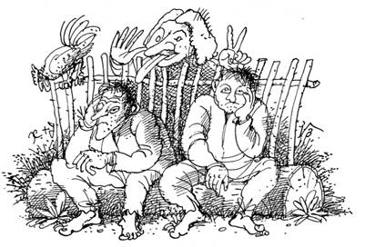
Выяснилось, что после
сенокоса и уборки урожая Кольша и Митьша проживали вместе. Несмотря,
а скорее вопреки, женам и множеству детей у каждого, на зиму они
сошлись в доме своих родителей, чтобы найти благость, покинувшую их
под диктатом сварливых и привередливых жён. Мое имя они переиначили в
Вовша, что привело меня в неописуемый восторг, и, чуть ли не впервые
за несколько дней, я от души расхохотался.
Свое
появление я объяснил просто: заблудившись в лесу, набрел на сторожку,
где и остановился, чтобы разобраться в положении дел. Добрая
старушка, живущая там, дала кров и пропитание, но не ведает как
выбраться из леса. Даже Иван, сосед по жилью, не знает этого.
Возможно, мужики что-то подскажут? Кольша скривил щербатый рот и
сплюнул:
- С Ваньшей знакомы, славный парень,
намедни нас навещал. Если живешь там же, где он, гиблые это места. В
наших лесах нечисть да нелюди всякие водятся. Угодишь к ним, считай -
пропал. Только святой крест и спасает, - показал он на висевший под
рубахой символ веры.
- А есть ли храм в
деревне?
- Что, исповедаться собрался? Не
получится. Храм много годков назад от старости развалился. Да кому
службы справлять? - попа живого только прадеды застали.
-
Не врёте вы разом? Какая здесь нечисть? Ходил лесом - ничего похожего
не встретил, даже зверье не попадалось.
-
Считай, повезло, - выдохнул Митьша. - Обычно чуть зазеваешься, тут же
леший глаза застит да заведёт неведомо куда, а то на гору огнедышащую
наткнешься, того и гляди поджарит. На озере купалки завелись, а ещё
водяной озорничает: выйдет из воды безобразный старик с большой
бородой и зелёными усами, весь опутанный тиной, сети рвёт, лодки и
рыбаков на дно тянет. Откупиться, конечно, можно задачами да
главоломками разными, если они нечисти по нутру придутся.
Митьша в подтверждение
описанных ужасов убедительно кивнул головой и в нетерпении добавил:
- Доставай, Вовша.
Из котомки был извлечен
джентльменский набор, который состоял из пузыря с ликёром, кружек и
шматка мяса. Митьша сбегал в избу и принес несколько луковиц, огурцы,
соль, кусок грубого хлеба и чистую тряпицу, на которой всё это
богатство было аккуратно разложено и нарезано. После первой, которую
не закусывают, Кольша одобрительно крякнул:
- Сладковато, но градус
есть, пьется легко. Иван ентим же угощает.
Вторую
зажевали луком. Митьша, как хлебосольный хозяин, предложил:
-
На днях собираемся рыбалку учинить в озере, рыбку посачковать. Если
хочешь, отправляйся с нами. Мы даже главоломок понабрали, чтобы
нечисть не цеплялась. Так что не боись. Вот послушай. Не
так давно я и Кольша возили к моему дому сено с дальних покосов. С
одного покоса привезли копну и полкопны, с другого - две копны и
полкопны. Сколько теперь копен у дома?
-
Еще не всё - произнес Кольша. - Есть у меня
бочка десятиведерная, весит она восемьдесят фунтов. Если ее
заполнить, то вес станет сорок фунтов. Чем я её заполнял?
-
Думаю, водяному понравится, а что лешему рассказывать будете, если
повстречаете?
- И для него есть. Представь,
что в полдень мы отправимся к озеру, половим рыбку, переночуем у
костра, а на следующий день, тоже в полдень, двинемся назад по тому
же пути, что и намедни. Найдется ли такое место, куда мы попадем в то
же время, что и день назад?
Ни
хухры-мухры, - думал я, слушая братьев, - и эти туда же. Где такое
видано? Главоломки неплохие, дай Бог, чтобы остепененные научные
сотрудники могли решить. В доступной форме с наименьшим количеством
слов я выразил свое восхищение услышанным.
-
Как получилось, что в ваши края попасть легче, чем назад выбраться? -
задал я вопрос. - Неужто всё с нечистью связано?
Переглянувшись
с братом и получив у него согласие, Митьша завёл историю, услышанную
то ли от бабки, то ли от прабабки.
- Ты особо не
переживай от того, что услышишь. Вот как говорят. В давние времена по
соседству с деревней жил ведьмак. Нелюдь и есть нелюдь! Напускал
порчу да сглаз, детей похищал, неурожаи колдовал. Однажды после
сильнейшего мора, когда почти полдеревни вымерло, оставшиеся в живых
до крайности рассерчали и упёрлись извести ведьмака под корень. А
тот, прознав, перепугался и совершил колдовское заклятие, отправив
всю деревню в неведомые земли. Сюда, где сейчас живём, - Митьша
вздохнул.
- Ведьмака с тех пор нет, а вот
нечисти стало невпроворот. Лешие, водяные, ведьмы, русалки, чудища
всякие. По одному из деревни никто не выходит, но, если уж случится,
то нельзя в лес далеко забираться. Ещё в былые времена надеялись
прадеды дорогу отсюда разведать, но не сумели. Сколько людей в лесу
кануло, скольких бесовская тьма поглотила! Тебе повезло, что нечисти
на глаза не попался. Не приведи Господь...
Вмешался
Кольша, напомнив о ранее рассказанных главоломках:
-
Ты запомни получше, что мы тебе рассказали. Если с нечистью
встретишься, потешишь бесов нашими главоломками.
-
Ладно бесами пугать. А вы, мужики, в святой крест верите? Ведь
известно, что лучшей защиты от нечисти не существует.
-
Так то оно так, да на Бога надейся, а сам не плошай. Бог далеко, да и
захочет ли помогать? Много уже баб и мужиков из леса не вернулись -
не хотели с бесами по-доброму разойтись. Зачем нам это?
Выпили
очередную, захрустели огурчиками. Братья прекрасно знали окрестности,
но старательно избегали полянку, на которой поселилась Агая, считая
её заколдованной. А ещё они никогда не приближались к границе,
которую называли не иначе как "бесовская тьма". Тьма была
везде, в любом направлении лес неизменно заканчивался границей. Было
от чего взгрустнуть!
Продолжили. В понятных
выражениях отозвавшись о силах тьмы и перекрестившись, Митьша особо
колоритными эпитетами выделил в своей речи холм, прозванный Гремучим.
По его словам, за ним творились непонятные козни, как будто бесы
устраивали игрища, да такие, что искры летели и полыхало
пламя.
Туда мне и надо, к чертям ихним, - решил
я. - Видимо, там граница имеет самую тонкую стенку. Звено, за которое
можно вытянуть всю цепь, - по-революционному заключил я и принялся
выспрашивать об этом месте подробнее.
- На холм
не хаживали, привирать не будем. Если хочешь что-нибудь узнать, лучше
всех Юрша расскажет. Но с пустыми руками разговора не
получится.
Кольша глянул на меня, я в ответ на
его безмолвный вопрос тряхнул котомкой, в которой еще было:
-
Идём!
Лебединым клином, возглавляемые топавшим
босыми пятками Кольшей, мы проплыли в дальний конец деревни, дважды
завернули и подошли к домику, по сравнению с которым избушка Агаи
показалась бы дворцом. На заднем дворе копошился бодрый старичок,
справлявший нечто важное у грядки с капустой. При нашем появлении он
закончил свои неотложные дела и кинулся обниматься. Помяв меня в
объятиях, он поинтересовался:
- Память подводить
стала, совсем не признаю. Как тебя-то кличут?
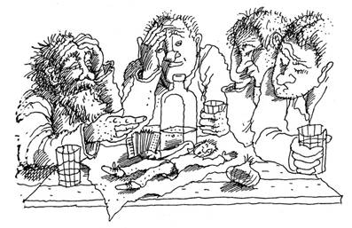
Назвавшись
Вовшей, я полностью удовлетворил его любопытство. Не греша излишним
многословием, братья расстелили тряпицу, которая, словно
скатерть-самобранка, в мгновение ока обросла нашими дарами. Под ликёр
потекла беседа о предстоящей зиме, о жизни соседей, о видах на
рыбалку, о двухголовом зайце, которого встретили в лесу внуки Юрши.
Всё происходило так, как на протяжении веков было заведено между
сельскими жителями. Даже я не смог удивить сотоварищей, сказав, что
на Рождество грядут морозы, ибо дикие пчелы собрали взяток больше
обычного. Холодных зим здесь отродясь не водилось.
Вдоволь
поточив лясы и обсудив все деревенские темы, братья попросили Юршу
рассказать о том, каким образом он очутился в деревне. Его
рассказ-исповедь стоило послушать.
- Как сейчас
помню, закончил я курсы бухгалтеров в райцентре, и в этот же день с
гармошкой в руках занесло меня в дремучий лес. Отчего так случилось
не знаю, думаю, произошло всё после того, как прилёг вздремнуть на
улице. Перед этим была гулянка, устроенная слушателями курсов, чтобы
отметить конец обучения. Погуляли на славу, только я вышел на улицу,
как через несколько шагов рухнул у крыльца - сон забрал. Ну, полежал
бы до утра, эка невидаль. А тут напасть. Глядь - очнулся в лесу,
сижу, прислонившись к пеньку, рядом гармошка. Приуныл было, ещё и
голова чугунная, рассолу требует.
- Короче, день
плутал, натерпелся страху, пока не вышел к деревне. Приютила меня
тетка Глаша, вволю на неё побатрачил. Бухгалтерской работы здесь нет,
то ли дело в нашем колхозе, который и послал меня учиться. Затосковал
я. Исходил здешние места, чтобы назад выбраться, но, как в предании,
не нашел способа воротиться. Такая грусть навалилась, что несколько
месяцев провёл в одиночестве на Гремучем холме, которого местные
сторонились.
Передохнув и подкрепившись, Юрша
вернулся к своему горестному повествованию:
-
Думаю, что в рубашке родился, раз жив еще. Чудеса встречал, что во
сне не привидятся. Не часто, где-то раз в седмицу, обычно в полдень.
Как будто цветы в бесовской тьме расцветают, красоты неописуемой.
Пожил я на холме, бесы не тронули, стал в себя приходить, да и холода
настали. Спасла гармошка. Вначале предложили на праздниках меха
рвать, затем мужиков научил подыгрывать, так и сошелся с
деревенскими. С тех пор живу спокойно, домом разжился, завёл
хозяйство, семью, уже внуки подросли.
Не
обошлось в юршиной жизни и без сложностей. Это выяснилось, когда
удовлетворённые братья хором завели песню и отправились почивать, а я
достал утаённую от них бутылочку. Надо сказать, ликёр пришелся Юрше
по душе.
- Поначалу хотел я провести в деревне
коллективизацию, - перешёл он к другой, правдивой, стороне своей
истории. - Скот надо было обобществить, птицу, зерно... Иначе
коммунизм не построишь. А ещё религия мешает: что ни праздник - так
выходной, а кто работать будет? Без денег тоже нельзя - учёт и
контроль! Стал я марксовы идеи разъяснять, и что? Был встречен полным
непониманием. Объявили старики будто бы порча у меня в мозгах, а
лечить её надо батогами, чтобы вред из тела выбить. Мужики да бабы
лечебные процедуры с удовольствием проделывали... От них и сбежал на
Гремучий холм.
Юрша горько вздохнул:
-
Тёмный народ! Когда вернулся с холма, стал жить как все. Об одном
жалею, что нет здесь радио, не знаю, какие дела в мире творятся. Душа
горит, вот выяснить бы: давно ли победила мировая революция? Сильна
ли нынче пролетарская солидарность? Как там товарищам при коммунизме
живётся?
Юрша умолк и надолго задумался,
запустив крючковатые руки в бороду. Чувствовалось, что он разомлел,
добитый ликёром, солнцем и живыми воспоминаниями молодости. Мне было
жаль старого человека, мечты которого оказались похороненными
деспотичной действительностью. Я пообещал себе, что он никогда не
узнает от меня о нынешнем беспределе, ведь каждый имеет право на
мечту, какой бы странной она ни казалась.
Время
протекло незаметно, пора было уходить, но прежде я должен был
выяснить, где находится тот Гремучий холм, о котором говорил Юрша.
Разузнать дорогу требовалось как можно точнее: сам Юрша по возрасту
вряд ли годился в проводники, а чудо-колобок не обязательно знал это
название, когда-то спьяну данное напуганными мужиками. Подождав, пока
Юршу отпустит, я стал выяснять путь к холму. Оказалось, что холмом
прозвали одинокую голую возвышенность на краю леса в сторону восхода,
до которой было около часа ходьбы от деревни.
Перед
уходом я снова заговорил о лесной нечисти и лишний раз получил
подтверждение тому, что местный люд имел привычку откупаться от неё
главоломками. За свою длинную жизнь Юрша скопил в памяти неисчислимое
их количество, очень полезное на случай встречи с лесными
обитателями. Он щедро делился со мной своими знаниями. Например, от
него я узнал сколько раз из чертовой дюжины
можно вычесть число три; как выйти замуж за брата своего вдовца; как
без картуза, плаща или зонтика не замочить волосы под проливным
дождем, даже если всё остальное будет хоть отжимай; сколько в году
месяцев, которые содержат двадцать восемь дней.
Совсем
размякнув к концу застолья, Юрша всё-таки нашел силы поведать ещё
одну занимательную историю.
- Невдалеке
от Гремучего холма я обнаружил белку, которая уютно обосновалась в
дупле старой ели. Питалась она грибами, шляпки которых сушились тут
же на ели, и шишками. Понаблюдав, я понял, что белка шелушила и
объедала в день две шишки, которые брала с соседнего дерева. Шишки
там росли крупные, с кулак размером. Их оставалось ровно шесть штук.
Но вот незадача: чтобы доесть их, белке понадобилось шесть дней. Как
такое могло произойти?
Чтобы
не оставаться в долгу, я рассказал ему свои главоломки.
-
Юрша, ты достаточно образованный человек. Вот, считать, должно быть,
неплохо умеешь, если экзамен на бухгалтера сдал. Говорил ты о радио,
а знаешь ли из чего изготавливают радиоприемники? Нужны детали, самые
главные - триоды. Теперь подумай, сколько
потребуется триодов, чтобы вышло радио? Скажу сразу - больше десяти
обычно не используют.
И
еще одна главоломка, тоже про радио. Некто
купил на рынке радио за двадцать пять рублей и заплатил продавцу
монетой в пятьдесят рублей. У того не нашлось сдачи, поэтому он
разменял монету у соседа. Когда покупатель ушел, сосед понял, что
монета фальшивая, поэтому продавцу пришлось вернуть ему пятьдесят
рублей. Понятно, что продавец задумался об убытке, который понес.
Велик ли он?
Далее
разбирались в том, что имелось общего между
противоположными понятиями, например, простудным заболеванием и
физическим здоровьем, королевским достоинством и коровьим навозом,
устройством для убийства и приспособлением для спасения жизни в
случае опасности, заботой о ближнем и отказом что-либо делать, тонким
расчетом и грубой силой, средством народной медицины и древним
орудием убийства, великим тружеником и лентяем, смертельным
намерением и нетрадиционным лечением.
Глядя
на задумавшегося Юршу, я понял, что ему было бы неплохо постричь
бороду - вон сколько сена и щепок в ней застряло. Кстати, знал
я интересного парня, профессионального парикмахера. Жил он в поселке,
окруженном садами, а все жители, чуть ли не поголовно родственники,
дружили между собой. Но он как-то заявил, что лучше бы постриг двоих
откуда угодно, чем одного жителя своего поселка. Не странно
ли?
Узнав от меня, чем
схожи ношеные штаны и лесная деревенька, Юрша
совсем отошел, неожиданно развеселился и даже спел под гармошку
разухабистую песенку собственного сочинения. Трижды поцеловавшись на
прощание, мы расстались. Назад я добирался уже в полной темноте.
Дружественный колобок подсвечивал дорогу на несколько шагов вперед.
Оказавшись на месте, я рухнул в постель, не раздеваясь.
Привиделось, что бреду сквозь колючий еловый
лес, сгибаясь пониже, дабы упрятать лицо от густых веток с острыми
иголками. Лес как лес, но состоял он из... тополей. Что же: тополь
да тополь будет ельник? Да... Сон прерывался
образами старого Юрши, его хитрыми главоломками и мыслью о торжестве
коммунизма, а в голове пульсировал непонятный призыв: полная
дезинфекция всей страны!
* * *
Иван взял отгул и сладко
спал утром. Я не рискнул его будить, а потому завтракал в
одиночестве, ощущая отсутствие его компании. Крепкий кофе и
невероятных размеров бутерброд с вареным мясом придали новые силы.
Сегодня моей целью был Гремучий холм.
Прежде я
посетил Агаю, чтобы сообщить ей о вчерашних приключениях, главоломках
Юрши и подробнее расспросить о холме. Если первая часть рассказа была
принята с живым интересом, то главоломки оказались хорошо известными
ей - она не единожды слышала их от деревенских. Я помнил её
настоятельную просьбу о новых развлечениях для ума, поэтому рассказал
классическую головоломку.
На
школьном уроке учитель уронил тонкую пластиковую указку, которая
после удара о пол раскололась на три куска. Жаль, конечно. Но учитель
не растерялся и задал вопрос о том, сколько в среднем потребовалось
бы сломать указок, чтобы из кусков от одной указки получился
треугольник? Что ответили ученики?
Не
давая Агае уйти в размышления, я заговорил о Гремучем холме. Она
укоризненно глянула на меня и проворчала:
- Не к
добру твоя затея. Хотя, что я буду отговаривать, чай сам не
маленький. Клубок дорогу знает, не заплутаешь. Увидишь необычное - не
суйся в пекло, граница - вещь не шутейная.
Напутствуемый
столь неласковым образом, я отправился в сторону восхода. Небо
хмурилось, обещая скорый дождь, иногда в разрывах туч показывалось
солнце, определяя направление предпринятой экспедиции.
Незадействованный клубок пребывал в котомке, чтобы позже показать
обратную дорогу. И опять меня окружал лес. Были слышны отзвуки его
невидимой жизни, становившиеся громче в моменты, когда из-за туч
выглядывало солнце.
Отмахав часа полтора, я
взобрался на ёлку, казавшуюся выше соседних деревьев, и с вершины
разглядел холм, возвышавшийся над морем леса. Я засёк направление, а
вскоре на полусогнутых ногах карабкался по склону холма, стараясь не
поскользнуться на набухшей от влаги траве. Формой холм напоминал
перевернутую суповую тарелку. Сходство подчеркивали крутые склоны и
плоская вершина, являвшаяся идеально гладкой площадкой. На ней
обнаружились старое кострище и развалины шалаша, поросшие многолетней
травой. Убежище последнего борца за социальную справедливость, -
заключил я, вспомнив Юршу. Трава целиком покрывала и сам холм - лес
как бы расступался под натиском силы, когда-то вытолкнувшей его на
поверхность. За холмом чернильной кляксой разливалась стена
мрака.
Я приблизился к ней, хотя и не
рассчитывал заметить что-либо необычное с первой попытки.
Песчаное основание холма прямо таки упиралось в мрак. Слева и справа
примыкал лес, как торт острым ножом усеченный бесовской тьмой. Когда
я снова поднялся на холм, желая увеличить сектор обзора, в воздухе
висел надоедливый мелкий дождь.
Чудеса
происходят в полдень, добавить плюс-минус час, значит, наблюдать за
границей предстояло часа два-три. Я уселся у края, подложив снизу
котомку. Под накрапывающим дождем моему взору открывалась все та же
отрешенная монументальность. Ожидая увидеть нечто, я не знал что
именно следовало ожидать. Как в сказке, пойди туда, не знаю куда,
возьми то, не знаю что. С трёх сторон окружал лес, а впереди лежало
неизведанное.
Происходящее напоминало шпионский
сюжет, в котором я был агентом 007, вышедшим на очередное смертельно
опасное задание. Ползком - ползком, главное, голову о пенек не
проломить! Вместо мыслей о спасении человечества от
маньяка-шизофреника меня снедало желание отыскать смысл в
происходящем. Ручейки прохладной воды стекали по спине, а память
преподнесла несколько головоломок на тему шпионских страстей. Первой
вспомнилась такая.
В
секретную лабораторию, проводящую химический анализ, поступили
шестнадцать различных проб. Они помещались в одинаковых пробирках и
по виду представляли собой бесцветную жидкость. Две пробирки
подтекали. Одна содержала сильный окислитель, другая - взрывоопасную
смесь. Понятно, что при смешивании этих жидкостей следовало ожидать
взрыва. Возможно, в этом и состоял злой умысел какого-нибудь
коварного агента империализма. Ничего не подозревавшая исполнительная
лаборантка согласно инструкции расставила пробирки в ячейки
химического ящика, образовав из них квадрат. Велика ли вероятность
взрыва, который непременно произойдет, если две подтекающие пробирки
окажутся рядом, то есть в вершинах одного квадрата, составленного из
четырех соседних пробирок? Сумеет ли агент рапортовать об успешном
завершении задания?
Другая
головоломка не предполагала взрывов. Шесть
сотрудников заняты реализацией военной разработки. Вся документация
по проекту хранится в особо секретной комнате. Чтобы попасть в нее, у
каждого сотрудника есть достаточное количество ключей. Однако в целях
сохранения тайны открывать дверь должны не менее трех человек
одновременно. Каким будет наименьшее возможное количество замков на
двери и наименьшее количество ключей у каждого
сотрудника?
Стоически
перенося дождь и бесповоротно промокнув, совсем не к месту я вспомнил
песенку о собачьей жизни, сложенную известными бардами,
в которой они пели, что собака бывает кусачей только от жизни
собачьей. Я ощущал это на своей шкуре и с удовольствием залез
бы в непромокаемую собачью конуру. А вообще то, собачья жизнь не
всегда обстояла так, как хотели нам внушить. Даже в собачьем мире
есть аристократы со своими парикмахерами, деликатесным питанием из
двадцати блюд и прочими немыслимыми благами. Многие люди, особенно в
нынешние времена, поменялись бы с ними местами. Впрочем, - понял я, -
могуч и велик русский язык! - ведь в нём уже существует слово,
роднящее собачью жизнь с атрибутом состоятельности и достатка. А
другое слово связывает её воедино с традиционными бюрократическими
поборами, зависящими от иерархии чинов и должностей.
Не так уж плохо.
Праздные размышления наскучили,
когда промаявшись в дозоре необходимое время, я понуро шагал назад.
Ничего интересного, что могло бы пролить дополнительный свет на
природу границы и этого мира. Где бы взять с десяток привычных по
работе в лаборатории приборов для обследования границы? Это вопрос!
Под деревьями дождь почти не ощущался, движение
создавало живительное тепло, от одежды начал подниматься парок. Но
стоило выйти из-под крон на открытое место, как передо мной возникла
фигура Лёшки. Казалось, дождь огибал его - на нем не было ни единого
мокрого пятнышка.
- Привет, - небрежно бросил
он, словно мы расстались лишь несколько минут назад. - Решил я твои
головоломки, изрядно голову поломал. Послушай теперь мои. Красиво
сделать он пытался, но сам в ней вовсе не нуждался. Купил другой, и
то же - она ему негоже. А тот, кто пользуется ей, не ценит красоту
вещей. Что это?
Безысходность
сложившейся ситуации была очевидна. Сделав умный вид и надув щёки, я
принялся выслушивать Лёшку, давая ему выговориться. При этом я
пытался не слишком сильно дрожать от холода.
-
Рассказал Косма такой случай. Затеяли они с
Водником обмен: драгоценные камни на жемчужины, меняли все на все, но
только в соотношении три к четырем, то есть три штуки одного на
четыре другого. Косма утверждал, что после длительного торга обменял
всего лишь двадцать камней на двадцать жемчужин, отдав Воднику сто
тринадцать камней и жемчужин. Веришь ли ты ему?
Мои
мысли были далеко. Единственное и непреодолимое желание заключалось в
том, чтобы оказаться в тепле и скинуть намокшую одежду. Я, как и
Лёшка, тоже имел право взять задание на дом, о чем откровенно сообщил
собеседнику, пожаловавшись на нелетную погоду, которая не
способствовала размышлениям.
- Как же, знаю.
Спускаются два кирпича по крыше, один другому и говорит: "Дождь,
погода нелетная". А второй отвечает: "Главное, чтоб человек
хороший встретился". Вот как ты мне, - расхохотался Лёшка.
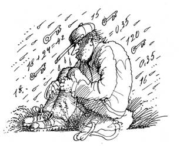
Он
начал философствовать:
- Что для меня дождь! Мой
дом - лес, тут всегда найдёшь кров, ночлег и пропитание. Мне не
требуется многое, я - вегетарианец, довольствуюсь тем, что припас
лес-батюшка. Могу заночевать на голом месте, как матерый таежник, а
поутру встряхнусь и пойду себе дальше. Зверьё разное, живность лесная
со мной знакомы, все мои просьбы выполняют. Труднее зимой, но на этот
случай есть сухая пещерка рядом с горячим ключом, в ней коротаю
зимние ночи. Брожу по лесу, наблюдаю как ручьи журчат да трава
растет, а с каждого встречного оброк беру. Кого увижу в своей
вотчине, с того откуп требую - загадки и головоломки.
Длинная
тирада, которую я выслушивал. изнемогая от холода и сырости,
проникших во все поры моего тела, не оставляла выбора. Быть мокрой
курицей не доставляло никакого удовольствия. А мне ещё предстояло
плестись под струями дождя.
* * *
Оценив мой жалкий вид,
Иван принял живейшее участие, чтобы вдохнуть жизнь в исстрадавшийся
организм. Процесс целительства затянулся до позднего вечера. И опять,
после моего рассказа о встрече с Лёшкой, речь зашла о
головоломках.
Снаружи шумел дождь, в углу
пыхтела докрасна нагретая чугунная печь, за неопрятным столом с
выпивкой сидели нетрезвые мужики и травили друг другу головоломки.
Инфернальное зрелище!
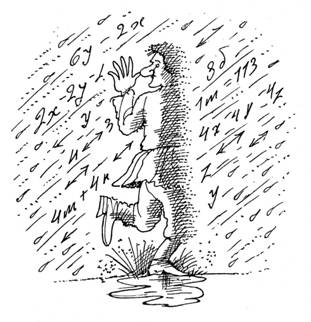
Первым
начал Иван, сегодня он был в ударе.
-
Приключился как-то аврал и целый месяц
работали на пусковом объекте без выходных. К концу дня наш бугор взял
за привычку говорить, что объем выполненных за день работ больше, чем
два дня назад, но меньше, чем в тот же день неделю назад. Что-то в
его словах было не так, а ты как думаешь?
Я
ответил ему, что всё было не так в застойные времена, и рассказал
другую головоломку.
В
жестянке кучей свалены болты и гайки М-три, М-четыре и М-пять. Вместе
болтов и гаек каждого диаметра по пятьдесят штук, причем болтов и
гаек в отдельности ровно по семьдесят пять штук. Какое наименьшее
количество пар болт - гайка одного диаметра можно составить из
указанного набора?
Ну, и
пошло-поехало.
- Снова о стройке вспомнил, -
начал Иван. - Был у меня объект: три летних
домика, расположенные в ряд. Напротив них, также выстроенные в ряд,
находились три коммуникационных колодца: для воды, газа и
электричества. Требовалось подсоединить каждый дом к колодцам, чтобы
вырытые под коммуникации траншеи не пересекались. Бугор наш
додумался, а ты?
Следующую
головоломку Иван сформулировал почти как производственное
задание:
- Найди хотя бы
четыре причины, по которым крышки, закрывающие люки дорожных
колодцев, делают круглыми.
Во
мне уже скопилась изрядная доля алкоголя, разогревавшая кровь и
воображение. Вспомнился недавний случай с Ломоносовым. А приключилось
вот что. Меня навестил старый знакомый Виктор Петрович. Когда-то мы
вместе учились в университете, однако действительность сложнее
газетной статьи. Чтобы прокормиться, ему пришлось освоить профессию
печника, кстати, весьма уважаемую, которая несёт людям тепло и уют.
Оказалось, что он приготовил сюрприз.
- Помню,
помню о твоём пристрастии к головоломкам. Специально припас одну к
нашей встрече. Довелось мне этим летом класть
печь с камином. Работа большая, да и деньги немалые. И когда в сотый
раз я замешивал глиняный раствор для кладки, заметил, что из трёх
вёдер жирной глины, ведра песка и ведра воды никак не получается пять
вёдер раствора. Выходит, ошибся Ломоносов, когда заявил: "...
сколько от одного тела отсовокупится, столько другому
присовокупится"? Приятно об этом думать,
особенно, если с глиной возишься. Факт налицо.
-
Шутник ты, Виктор Петрович. Кому же верить, если не Ломоносову? Не
нынешним же. Впрочем, куда ни погляди, везде так: загадка на загадке
сидит и загадкой погоняет, - как раз про нашу жизнь. Если бы только
глина пропадала! А то ведь и деньги, и люди, и даже целые
государства.
Ближе к вечеру забежала
Агая, чтобы проверить решение утренней головоломки, полученное ей к
исходу дня. Моя одежда высохла, ради приличия пришлось срочно
одеваться. Агая же присоединилась к нашему головоломному досугу.
-
Давно это было. Уехала я на несколько дней, а
когда вернулась, то обнаружила, что за время моего отсутствия пропал
мешочек с сушеными цветами белого папоротника. Пока меня не было, в
кабинет заходили четверо: дворецкий, кухарка, поп и секретарь. На
вопрос о том, не знают ли они, где мешочек, все ответили
отрицательно. А вот по поводу того, в какой очерёдности они
находились в кабинете, сказали следующее. Дворецкий: "Я не был
ни в конце, ни в начале". Кухарка: "Я была первой".
Поп: "Я не был последним". Секретарь: "Я был
последним". Послушала их, послушала, да поняла, что кто-то один
лжёт отвечая на оба вопроса. Кто?
Происходящее
напоминало спектакль абсурда. Однако, являясь его непосредственным
участником, место которому досталось бесстрастным фатумом, а не
хитрыми интригами против недалекого режиссера, я поймал себя и на
другой мысли. Возможно, всё это уже когда-то было. Был завтрак с
головоломками, состоявшийся в загородном доме отдыха, прекрасно
описанный Перельманом. Были кентерберийские головоломки, которые,
согласно Дьюдени, рассказывали друг другу паломники в пути на
богомолье к святым местам. Вымысел приобрел черты реальности,
беллетристика стала прозой.
Мерный перестук
капель и неспешная беседа, которую вели мои соседи, навевали смутные
воспоминания. Где же? Может, в другой жизни? Как говорится, "...
и где-нибудь, когда-нибудь мы встретимся опять..." Смысл
ускользал, таял как лёд в жару. Хоровод мыслей и образов затягивал в
пустоту, теряясь в глубинах сознания. Это вам не собака, гоняющаяся
за своим хвостом, и даже не питон, заглатывающий себя, как у Сэма
Ллойда. Не заняться ли поисками сокровенного?
Хотим
мы или нет, многих влечёт к загадкам. В этом месте, где я оказался,
необычного и загадочного было хоть убавляй. Ещё одна головоломка. А
чем вообще привлекают головоломки, почему их воздействие приобретает
порой гипнотическую мощь? Быть может, потому что человеку от рождения
не дает успокоиться искра Божия? От него самого зависит, будет ли она
светить или с дымом и треском затухнет. Искра разгорается далеко не у
всех - надо ещё показать своё право на личную свободу, суметь не
заплыть душевным жиром и сохранить способность по-детски
удивляться красоте окружающего мира. А ещё надо уметь видеть в
жизни многообразную цветовую палитру, которую невозможно переложить в
два цвета: чёрный и белый.
Для искры не важно
чем занимается человек, она может вести любыми путями, в том числе, в
объятия мира головоломок. Один творит изысканные блюда, шедевр
кулинарного мастерства, другой возводит дома или изучает ядро атома,
третий печёт хлеб или сочиняет музыку, но каждый находит
удовлетворение в радости творчества. Изначальный смысл, начало Божье
в человеке, не жалеет энергии для искры людских талантов. Не будь её,
исчезнет и человечество, застывшее в своём развитии.
За
творческое начало надо бороться, ведь жизнь устроена так, что многое
не дает ему реализоваться. Например, определённость, которая
исключает борьбу и преодоление: обстоятельств, стереотипов,
предрассудков, самого себя, наконец. Ежедневная сытая рутина убивает
вкус жизни, гасит интерес к окружающему, лишает человека нормальных
порывов и желаний. Одни воспринимают этот процесс как признак
старения, другие кивают на то, что их не понимают, а третьи пытаются
объяснить происходящее через влияние технотронной цивилизации и
растущую отчужденность общества. Есть ли надобность в объяснениях? Не
всем дано вырваться из липкой паутины обыденности - мера успеха
распределена от трагедии до фарса. Надо не казаться, а быть, не
лицедействовать, а искать и бороться!
Глава 3
DANSEMACOBRE
или
СТРАШНЕЕ
КОШКИ ЗВЕРЯ НЕТ
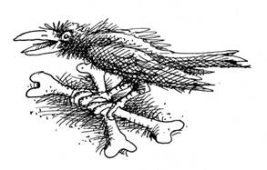
Ночью я
испытал прозрение, начали вставать на места детали головоломки,
которую загадал этот мир. Подтвердить мои выводы могла Агая, но
только при наличии доброй воли с её стороны. Впрочем, в последнем я
был уверен. Стоит попробовать, - решился я во время колки очередной
порции дров. Правда, какой бы горькой она ни была, лучше
успокоительной лжи.
Завершив работу, подошел к
Агае, копошащейся в огородике.
- Что новенького
скажешь? Головушка болит? - ворчливо спросила она, оторвавшись от
своего занятия.
- Сыт, пьян и нос в табаке, -
ответил я ей солдатской прибауткой. - Реши-ка, бабушка, за меня
головоломку, над которой не первый день голову ломаю. Она как раз по
твоей части. Вот твой дом, например, совсем не похож ни на курную
избу, ни на курзал, ни на избушку на курьих ножках. Ни помела, ни
ступы в твоём хозяйстве я также не обнаружил, а сама ты какая-то
ласковая и обходительная - даже вообразить трудно, зная всё, что о
тебе народ сочинил.
- Поживи с моё, тоже станешь
обходительным, - с хитрым прищуром глаз ответила Агая.
-
Я не об этом. Вот думаю, если твоё имя на одну букву сократить, то
получится Ага? Баба-Ага или Баба-Яга?
- Верно.
Похоже, начал разбираться в здешних делах.
-
Какое там, одна сплошная загадка. Почему сюда легко попасть, а назад
ходу нет? Голова пухнет от попыток что-либо понять в вашем
безобразии, - слегка преувеличил я свое состояние.
-
Если хочешь, поговорим о непонятном, - спокойно ответила Агая. -
Обычно удивляются те, кто забывает, что жизнь не состоит из схем с
двумя действиями, результат которых заранее известен, как в
математике. А ты что? Сам любишь головоломки, должен это понимать.
Бывает, всего то - протрешь глаза, и невозможное приобретает реальные
очертания. Ваш научный материализм, конечно, хорош, но в одном
случае: когда ответов больше, чем вопросов. Вспомни, хотя бы, Галилея
или Циолковского и их запредельные мечтания. Над ними глумились все,
кому не лень, а теперь с почтением величают прозорливыми гениями.
Вступление напоминало хорошую академическую
лекцию. Откуда Агая всё это знает? Тем временем старушка обстоятельно
разъясняла, что мифологические представления в большинстве своём
заурядные выдумки, но в них есть и зерна правды, так как складывались
народные поверья и сказания не на пустом месте.
-
Уж как любопытен русский народ! От него никуда не скроешься: все
норовит вынюхать и высмотреть, особенно, если рядом другая,
непохожая, жизнь. Возьми то, что сейчас происходит: кто дырку в
заборе ковыряет, кто расходы с доходами сравнивает, а кто упорно
дознаётся чья дача богаче. Если такое назойливое любопытство коснется
лично тебя, то быстро надоест, а любопытствующие вызовут одно
сплошное раздражение. Поверь мне. В нашем семействе издавна принято
выпроваживать их отработанным средством - с помощью морока, или
гипноза, внушая незваным гостям пугающие их образы.
-
А порчу ты, случайно, не наводишь? Говорят, что глаз у тебя дурной, -
стал я подзуживать лесную ведьму.
- Разговоры о
сглазе больше для дураков, а вот в траволечении и гипнозе я хорошо
разбираюсь. Хочешь убедиться? - непосредственно предложила
Агая.
Естественно, я хотел. Старушка обернулась
через спину и превратилась в горбатую бабку. Огромный фурункул на
носу своими размерами мог соперничать только с её бюстом, острые
редкие зубы устрашающе торчали изо рта во все стороны, развевались
длинные патлы грязных волос, блестели рыбьи глаза навыкате, в руках
бабка держала серьёзных размеров метлу. Омерзительное существо
корчило рожи, грозно скалило зубы и размахивало метлой, на мой
взгляд, прицеливаясь, куда бы побольнее врезать.
С
трудом оторвав взгляд от пугающего действа, я глянул на дом Агаи. Он
как бы скукожился, просел, покрылся паутиной, а снизу покоился на
подставках из двух здоровенных пней, выдернутых с корнями и ими же
поставленных на землю. Вокруг валялись груды обглоданных костей и
человеческих черепов. Так и захотелось сказать: "Избушка,
избушка, повернись к лесу задом, ко мне - передом". Не врут
сказки! А коттедж исчез, на его месте возвышался громадный стог
лежалого сена, поверх которого злобно каркали вороны-переростки, кося
на меня дурными глазами. Солнечный день сменился предвечерней
темнотой с кровавым отливом, по небу наперегонки неслись зловещие
глыбы туч. Всё вокруг пронизывал стойкий запах гнили.
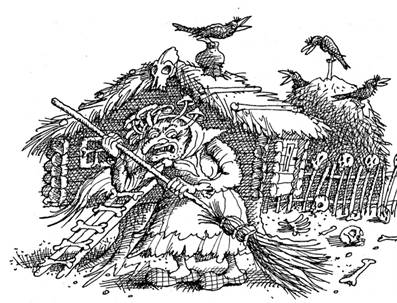
-
Довольно! - окликнул я противную бабку, и сразу же передо мной
появилась мило улыбающаяся Агая. Солнце возвернулось на небосклон,
коттедж находился там, где ему полагалось, даже слышалась в нём
иванова возня..
Демонстрация возможностей моей
хозяйки представлялась очень убедительной. Мифология оказалась на
высоте, но где же костяная нога, неотъемлемый атрибут лесной ведьмы?
Агая растолковала, что такой облик использовала её бабушка, а ей
самой, чтобы пугнуть местных баб с мужиками, достаточно того, что я
наблюдал.
Велика сила внушения. Чудеса обычно
наблюдают те, кто верит в них и жаждет увидеть. Ничего не стоит
навести морок на суеверного мужика или сектанта, одурманенного
молитвами и проповедями, но поступить так с критически настроенным
мыслителем, каким я считал себя в тот момент, требовало от Агаи
мастерского владения гипнозом.
Из сказок,
которые любил в детстве, я помнил, что в лесу есть ещё такой
начальник над всей живностью, над зверями, деревьями, грибами,
которого лешим прозвали, нервное и обидчивое создание. По виду -
заурядный мужичок, одевается, правда, необычно, но запросто может
прикинуться чем угодно. То с сосну ростом, то с траву, попробуй,
распознай его. Так вот, даже его гипнотические возможности уступают
силе Агаи: уличить лешего в мороке совсем несложно, если посмотреть
на него через ухо коня. Откуда конь в лесу - другой вопрос. Если
узнал лешего, то он сам со злости пропадет или, когда особенно лютый
лешак попался, можно начать с ним по-хорошему договариваться:
загадкой задобрить или подарок какой сделать. Нельзя лесную нежить
обижать, сам беды не оберешься.
Помня лихую
бабку из морока, я поинтересовался, отчего понадобилось изобретать
легенду о лакомом блюде лесной ведьмы - человечине.
-
Пусть ужаснее будет, - пояснила Агая, и тут же не удержалась, чтобы
не рассказать древнюю головоломку, связанную с приписываемым ей лютым
каннибализмом.
- Давным-давно это было.
Повадились царевичи Василису
Прекрасную выручать, думали, что я её в неволе держу. А на самом
деле, пряталась она у меня от приставаний этих самых царевичей, так
они ей опостылели. Один за другим идут и идут, все - Иваны. Кто из
них умный, а кто дурак - не разберешь. Поймала я их аж пятнадцать
штук, рослые добры-молодцы, как на подбор, вкусные, упитанные. Не
съесть одной. Позвала Змея-Горыныча, чтоб вдвоем добычу откушать. Но
Змей он и есть змей, хоть три головы, а ест медленно. Я царевичей
восемь слопала, он только с семью успел справиться. В следующий
раз он меня зовет: к нему незваные гости пожаловали, всё те же. Он их
более отловил - целых семнадцать. Тогда я ему и говорю: "Ты ешь
восемь, а я девять буду, чтоб в одно время закончить и не пугать
ребятушек лишний раз". Как думаешь, милок, удалась задумка?
-
Да что же вы, натурально их сожрали?
- А хоть бы
и так? Если кругом посмотреть, их ещё много осталось.
-
Не нравится мне твоя задачка, не хочу кости царей русских
подсчитывать. Хватит того, что недавно власти целую комиссию собрали.
Кости обмерили и с одного места на другое перевезли... Гуманисты
недоделанные!
Агая, по-видимому, не полностью
расставшись со своим образом, смачно высморкалась в подол платья,
ковырнула ногтем в зубах.
- Забыл, что ли, кто
я есть? Смотри, позову Горынюшку, в два счета твой норов укоротит.
Его уж давно пора в Красную книгу занести, как не позаботиться об его
пропитании? Зубами чавкнет - мокрого места не
останется.
Перспектива быть заживо съеденным не
привлекала. Я развел руками, выражая искреннее раскаяние в неизжитом
до конца чувстве собственного достоинства.
-
То-то, - отозвалась Агая, вошедшая в роль. Она раззадорилась и
поведала о своей былой жизни.
- Иван-царевичи да
всякие искатели приключений типа Дон-Кихота порядком надоели: шли и
шли один за другим. Откуда их столько? Делать им, что ли, нечего?
Чтоб им мысли повернуть, устроила я
два крана - пусть голову поломают. Знали ведь, чем их потом оживить
можно. Над одним краном располагалась табличка: "Надпись над
другим краном истинна, и мёртвая вода находится в этом кране".
Над соседним краном я поместила иную: "Надпись над другим краном
ложна, и мертвая вода должна быть здесь".
Читали гости незваные, горюнились, кто домой воротился, а кто с ума
сошёл. Больше не приставали.
Оценив мое
примерное поведение, Агая поведала тайну.
-
Открою по секрету, что зря тебя пугала: Горынюшка совершенно
безобиден, если его не трогать - мухи не обидит. А чтобы его не
вздумали обижать, использует личину пострашнее. Да её все знают -
дракон огнедышащий о трёх головах и с тремя хвостами. Так напугал
этим обликом, что сотни небылиц о нем сложили! Заходил тут как-то и
такую забавную задачу про себя рассказал - в книжке
вычитал.
Добрался,
будто бы, очередной Иван-царевич до меня, нашёл таки в дремучем лесу,
и уговорил злодейство совершить - погубить Горынюшку. Дала я ему
меч-кладенец, а ещё такое вот напутствие: "Меч заколдован, как
угодно им не порубишься, поэтому запомни, на что он сгодится. Если
единым ударом срубишь одну голову, то вместо неё две другие вырастут
и хвост впридачу, две головы - одна голова вырастет, три головы - три
головы, одну голову и два хвоста - ничего не вырастет, один хвост -
два хвоста и голова, два хвоста - ничего не вырастет, а вместо трёх
срубленных хвостов три и появятся". Был Ванюша пригож, да ленив
сильно, поэтому сразу захотел выяснить, как наименьшим количеством
ударов с супротивником управиться, то есть срубить все головы и
хвосты. И сейчас где-то думает, а жаль - меч дамасской стали
ржавеет.
-
Другую головоломку Кощеюшка где-то сыскал, история то не закончилась.
Ведь в конце-концов прознали, что меч-кладенец Ивану без толку, и
очередного царевича научили отравить Кощея. А дело было так.
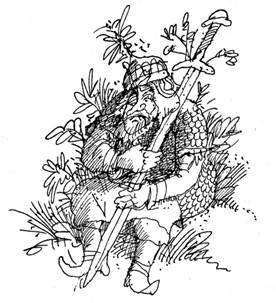
В
заколдованном лесу вдоль тропинки к жилищу Кощея били шесть ключей с
отравленной водой. Чем ближе - тем ядовитее, а самый ядовитый,
седьмой, - прямо у Кощея в пещере, куда никто из посторонних попасть
не мог. Вода в ключах ничем от обычной не отличается. Но уж если
выпил из ключа, то спасти может только вода из соседнего источника,
расположенного ближе к жилищу Кощея. А от кощеевой воды ничего не
спасет. Прознал об этом Иван, да и вызвал Кощея на поединок.
Условились, что каждый приносит кружку воды и дает выпить другому.
Иван полагал, что Кощей даст ему кружку с водой из пещеры и сам эту
же воду выпьет после того, как иванову воду отведает. Поэтому Иван
решил принести на поединок кружку обычной воды, предварительно
напившись из ключа прямо у пещеры. Но Кощей не прост, не зря его
бессмертным кличут. Разобрался он в ивановом замысле и заранее
предупредил: обычной водой его не возьмешь. Что оставалось Ивану?
Поединок, как дело чести, не отменишь, поэтому он надумал случайным
образом выбрать ключ и водой из него напоить Кощея. Как должен
поступить Кощей, чтобы и самому живым остаться, и царевича отвадить
пакости делать да на поединки заумные вызывать?
-
Ладно, избавился он от вредного Ивана, а чтобы другие царевичи не
докучали, специальную табличку соорудил под дубом, моему примеру
последовал. Было там три строчки.
Первая: "На этом месте в сундуке зарыто яйцо с иглой, на кончике
которой скрыта кощеева смерть". Вторая: "То, что написано
выше, ложно". Третья: "Тот найдет сундук, кто сможет
сказать правда это или ложь".
Я
отреагировал неадекватно:
- Все выдумки какие-то
рассказываешь. Выслушай правдивую историю. Когда мой сын готовился
после школы учиться дальше, он стал разбирать варианты вступительных
тестов. В каком-то тесте вопрос оказался плохо пропечатанным. Однако
к нему имелись ответы: а) всё, что ниже, б) ничего из того, что ниже,
в) всё, что выше, г) одно из находящегося выше, д) ничего из того,
что выше, е) ничего из вышерасположенного. Какой ответ
правильный?
Бабуля не унималась:
-
Ладно, не стану о страшном говорить. Помню, водяной
занемог. Прислал за мёртвой водой девчушку из купалок, чтобы припарки
сделать. Девчушка верткой оказалась, глазками так и крутит: что бы
стащить? Поняла я, ежели в пути мёртвой воды хлебнет, совсем плохо ей
станет. Нашла в своём хозяйстве ларчик, положила в него бутылёк и
заперла на висячий замок, благо дело, проушины на ларчике большие
были. Ключ у себя оставила - ведь обязательно полюбопытствует
девчушка, если ей ключ отдать. Потом Водяной долго благодарил за мою
хитрость. Как он без магии мертвую воду достал, если сам пластом
лежал и из дома ни ногой? Учти, что ларчик я ему ломать не
позволила.
- Не
только ты загадки про замки знаешь. Был и со мной престранный случай,
- вклинился я в ностальгические речи Агаи. - Я
уходил с работы последним. Взял ключ, закрыл замок, а на следующий
день не смог его открыть, хотя, как выяснилось позже, всё было более
чем исправно. Какова причина моей неудачи?
Агая
задумалась, отключившись от окружающего. Что ей не подумать! -
впереди вечность, время не ограничивает. А для меня существовала
более насущная головоломка, в которой не разобраться без Агаи.
-
Расскажи-ка, милая Агая, откуда появился этот мир, кто его создатель?
- прервал я её размышления.
- Считай, что
оказался в заповеднике чудес. Не тех, что выдумали досужие умы, а
настоящих, которые были, есть и будут во все времена. Людей, живущих
здесь, природа наделила многим, о чём иные и мечтать не могут. Быть
может, это результат генетических изменений, закреплённых в
поколениях, или вмешательство инопланетного разума, кто скажет точно?
По сравнению с обычными людьми, мы - особая ветвь развития, так как
живём долго, веками. Кроме того, обладаем способностями, которые в
твоем мире принято именовать магией. Опять же, наша магия не
сказочная и не всемогущая, а вполне реальная, как скорочтение или
диагностика болезней по пульсу. По мне, не будь ее вообще, а то
привыкаешь пользоваться своим даром, который на поверку лишь
усложняет жизнь. Пропади он пропадом!
Агая
выразительно перекрестилась и после минутной паузы вернулась к
повествованию.
- Заложенный дар проявляет себя
независимо от воли его обладателя. А как только необычные возможности
заметили со стороны, их сразу объявляют злом. Те, у кого их нет.
Будто чертик из шкатулки, выскакивают богоборцы, готовые устроить
очередной крестовый поход во славу своих затхлых верований. То в воде
топят, то на костре жгут. Они смешны своим догматизмом, но их
одержимость - страшная сила, которая не дает нам долго жить среди
людей.
Много тысячелетий назад возникли этот и
несколько других потаённых уголков, ведущие свою родословную от
легендарной Атлантиды. Сюда всегда можно вернуться, устав от жизни в
человеческом обществе. Последнее время за нашими местами закрепилось
название "ортогональность". Здесь нет нужды таиться, иногда
кто-то уходит, чтобы, выбрав личину, пожить другой жизнью, а затем
снова возвратиться. Недавно уходил Водник. По его словам, наше
пристанище является пространственно-временной неоднородностью,
возможность существования которой наука только обсуждает. Её не
увидишь снаружи, это как бы перпендикуляр к вашему миру. Непонятными
причудами сюда перенесена деревушка. Да и сейчас там живут крестьяне,
ты их видел. Для них мы - нечисть, которой они всеми силами
сторонятся.
От
рассказа Агаи захватило дух. Бог с ними, физическими моделями
фундаментальной науки, которые досужие умы используют в попытке
объяснить мироздание. Находясь здесь, бесполезно было думать о
мюонах, глюонах, кварках и струнах, вспоминать калибровочную
инвариантность, ведь физическая природа ортогональности - отдельный
вопрос, лежащий вне компетенции Агаи, как, впрочем, и всей
современной физики, заплутавшей в дебрях теоретических изысканий.
Намного важнее было узнать, какая участь предназначена мне.
-
Ты спросишь, как мы уходим и приходим сюда? Элементарно, Ватсон!
Умеем перемещаться в пространстве, кажется, это называется телекинез
или телепортация. Я, как и другие, могу перемещдать разные предметы,
в том числе саму себя. Но любой другой живой организм при перемещении
обязательно гибнет, в нем происходят биологические изменения не
совместимые с жизнью. Силы на перемещение уходят большие, потом
голова раскалывается, да так, что даешь зарок магией не пользоваться.
- Агая тяжело вздохнула, затем энергично тряхнула головой. - Но,
понятно, проходит время - и всеёповторяется. Вот, к примеру, привыкли
мы встречаться с родственниками в середине лета на Ивана Купала. Как
не повстречаться? По старой славянской традиции зажжём костер
побольше, а горящее колесо, символ солнца, спустим с горы в реку.
Знаешь, где это происходит?
- Все знают, что на
Лысой горе под Киевом, - прохрипел я пересохшим горлом.
-
До чего же хорош праздник Ивана Купала! - стала объяснять мне Агая. -
Особенно любит его молодёжь. Через костёр прыгают, ведь огонь в эту
ночь имеет особую силу - избавляет от сглаза, болезней и разных зол.
На рассвете идут купаться, а кто целебной росой умывается. А ещё ищут
ночью огненный цветок папоротника, который на мгновение расцветает
только раз в году. Сорвёшь его - и прошлое, и будущее узнаешь или
клад сумеешь найти...
Чувствовалось, что Агая
ещё долго могла бы рассказывать об этнографии и своих воспоминаниях,
но я вырвал её из этого замкнутого круга прозаическим вопросом:
-
Как теперь на Лысую гору добираешься? Украинские визы выписываешь или
границу нелегально переходишь?
- Какие визы,
милок? Любых бюрократов дурная слава Лысой горы отпугивает. Кроме
того, есть кому похлопотать за нас - видел какими бланками пользуюсь?
- родственники пособили. Только по нашей линии необычные качества
проявляются. Любой, кто сюда по своей воле приходить-уходить умеет, в
родстве с нами.
- А как же Иван или я - мы ведь
тоже здесь?
- С Иваном глупая история
получилась. Несколько лет назад приглянулся мне коттедж, на краденые
деньги возводимый чиновным мошенником. Поступила я как Робин Гуд -
отняла у него неправедно нажитое и переместила домик сюда. Развалился
коттедж, правда, - фундамент не прижился на новом месте. Как на грех,
заночевал там Иван, строитель наш. Был он мертвецки пьян и напоминал
бревно, а не живого человека. Так и оказался здесь вместе с
коттеджем, а когда к жизни его вернули, было уже невозможно назад
отправить.
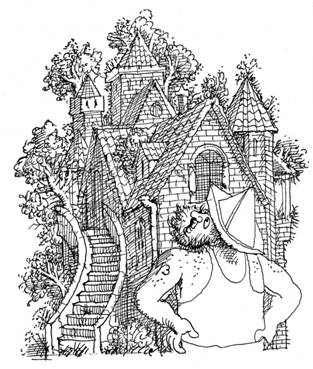
Сейчас
работа у него по специальности, говорит, что лучшего строительного
объекта не встречал, чувствует себя как на курорте. Не понимает, что
забыл почти все о своей предыдущей жизни, ведь с того света его
вытащили. Память ему сильно повредило, на неделю еще хватает, а что
раньше происходило - забывает.
- Получается,
Иван ничего не знает о том, что с ним приключилось?
-
А зачем ему? Жить здесь неплохо: есть работа, а выпивки хоть залейся.
Агая прогнала надоедливую муху, поправила
упавшую на лицо прядь волос.
- Иногда
ортогональность сама выкидывает всяческие фокусы. Как бы воронки в
ней образуются, турбулентности по-научному. Они затягивают что ни
попадя. В одну из воронок угодил и ты. Бывало самолеты втягивало,
морские корабли, а, если назад выкидывало, то уже с покойниками.
Иногда мы сами от них избавляемся, чтобы хоть здесь не досаждали,
дали пожить как мы сами выбрали. Вот из Бермудского треугольника
всякую дрянь несёт. Летучий Голландец - тоже наш клиент,
Остановившись на полуслове, Агая цыкнула на
кур, обнаруживших дыру в изгороди, через которую они пытались
выбраться из загона. Пояснила:
- Кабаны сюда
наведываются жёлуди трескать, затопчут курочек.
Я
снова вернулся к волновавшему меня вопросу.
-
Что происходит с теми, кого, как меня, заносит к вам поодиночке?
Возвращается кто-нибудь живым в свой мир?
-
Бывает и так, но очень редко. Большинство остается здесь. Сельский
труд, огород, дом - есть чем заняться. Тут не хуже, чем в любом
другом месте. Можешь считать, что выехал на дачу или в лесной
санаторий.
Наступил момент истины. Ворота назад,
в прежнюю жизнь, пока что закрыты, но в них есть щель -
турбулентность, сквозь которую при известной доле везения можно
вырваться назад. Ответ, скорее всего, стоило искать в мире молекул,
атомов и элементарных частиц, где тот же электрон вообще не замечает
преграду, которую не в состоянии преодолеть по законам логики.
Игнорируя предписанное поведение, он просачивается туда, где его не
должно быть. Такой эффект называют туннельным, значит, и мне
следовало отыскать туннель, ведущий в нужном направлении. Я не
хватался за соломинку, мои ожидания имели твердые основания - природа
одинакова в своих проявлениях, напоминая матрешку, где каждый новый
слой имеет форму и свойства предыдущего.
И уж,
во всяком случае, в происшедшем со мной не стоило искать ни злого
умысла, ни подвоха. Только факт биографии, который вряд ли удастся
когда-то отразить в личном листке по учету кадров. Оставалось
сохранять лицо и искать выход из сложившейся ситуации. Нет фатализму
и тотальному контролю, как говаривали древние: dum spiro,
spero!
Агая будто читала мои мысли, она
откликнулась нравоучением:
- Свободный человек
делает свой выбор сам. В нашей среде, тем более, не принято
понуждать. Каждый волен в поступках, но и отвечает за них полной
мерой!
Посчитав воспитательную
функцию выполненной, Агая напомнила, что меня приглашали в гости.
Судя по всему, действительно, настала пора заводить более тесные
знакомства. Мои планы на день сводились к посещению Гремучего холма,
а затем неплохо было бы отобедать у кого-то из новых соседей. Выбор
был совсем прост: Косму и Гордея следовало искать к западу от Агаи, в
другой стороне от намеченного маршрута. Оставался Водник, который
обитал у озера к северу от холма. Именно туда недавно зазывали
порыбачить Кольша с Митьшей. Быть может, и сегодня встречусь с ними,
если им достало нужного количества браги и героизма, чтобы выбраться
из деревни.
*
* *
Перед уходом
по привычке навестил Ивана. Он что-то сверлил, переместившись ближе к
верхним перекрытиям коттеджа. Разогнув спину, он принялся жаловаться
на интеллектуальное недомогание, связанное с излишним количеством
вчерашних головоломок. Его не смогла вылечить даже добрая чарка,
принятая за завтраком в качестве лекарства. По разумению Ивана
требовалась баня, только она могла снять напряжение и помочь в беде,
приключившейся с ним.
Баньку с крепким паром Иван брался
организовать к вечеру. Откуда баня? - спросите вы. Проще не бывает:
Иван, на все руки мастер, одно из подвальных помещений коттеджа
превратил во вполне приличную парную. Сюда хаживала даже Агая, хотя
летом она предпочитала купание в озере, которое непременно устраивала
при визитах к Воднику.
Отправившись в путь, я
ещё долго предвкушал баню с ароматным берёзовым веником и шипящим
паром, рвущимся с разогретых камней. Напоминанием о предстоящем
удовольствии и серьезности банных намерений под кронами сосен
разносилось многоголосое эхо деятельности Ивана. И как это одному
человеку удается издавать такой шум! - настоящий
строитель.
Пасторальные картины леса сменил
аскетический вид Гремучего холма. Он, словно благородный господин,
был надменно величав и холодно замкнут, не изъявляя намерения
делиться своими секретами. Прошло время, и через несколько часов,
сокрушаясь о безрезультатности наблюдений, я отправился к Воднику.
Чтобы проверить правильность пути, я иногда запускал колобок, который
бодро бежал впереди и справно выполнял отведенную ему роль
компаса.
Вскоре показалась опушка лесного
массива, окружавшего удивительной голубизны озеро, дальний край
которого терялся в туманной дымке. Оно имело овальную форму, а
песчаные берега плавно сбегали к воде. Образовавшийся пляж вполне
можно было бы встретить рядом с пятизвездным отелем. Понятно, почему
Водник поселился именно здесь. Я надеялся, что обнаружу его жилище,
если просто пройдусь вдоль берега. Однако поиски были тщетными:
встретились старые перевёрнутые лодки, да сухие коряги, выброшенные
на берег. Вокруг не было ни людей, ни живности, лишь изредка плескала
где-то большая рыба, выпрыгнувшая из воды в погоне за мошкой или
комаром. Почти отчаявшись разыскать Водника, я подошёл к полосе
тумана, которая скрывала изрядную часть берега. За белесой пеленой
исчезли все видимые ориентиры. Лучше обойти это место лесом, - решил
я и, уже повернув назад, услышал голос.
- Почто
явились, холопы? - трубно раздалось ниоткуда. Недовольные нотки не
оставляли сомнений в раздражении говорившего.
Я
начал медленно пятиться, зыркая во все стороны в попытке обнаружить
оратора. Закружит нечисть - и концы в воду! Ни к чему это мне.
-
Водник, где ты? - гость к тебе званый! - закричал я во всю силу своих
лёгких.
Застилавший округу туман моментально
рассеялся, а за деревьями стал виден компактный кирпичный особняк под
железной крышей, окрашенный в пастельно-голубые тона. На берегу
непринужденно расслабленным стоял Водник. Его одежду составляли
шорты, безрукавка с надписью "Адидас" и шлепанцы на босу
ногу.
- Категорически приветствую, - сказал он
улыбаясь.
- Вот в гости пожаловал, как обещал, -
отозвался я переводя дыхание.
Сделав радушный
жест по направлению к дому, Водник произнес:
-
Наконец-то будет с кем поговорить. Все здесь отстали от жизни лет на
пятьдесят, поживи-ка на отшибе.
Показывая
дорогу, Водник шел впереди. Я поинтересовался, как правильно
обращаться к нему, ибо имя, которое я знал, больше напоминало
название спортивной команды или прозвище.
- У
меня много имен, кто-то называет водяным дедушкой, хотя я совсем не
похожу на дедушку, кто-то - водовиком, но больше всего мне нравится
это имя, происходящее из чешского языка. Так и называй.
-
Да ты на меня не обижайся, - продолжил Водник, - спутал я тебя с
давешними рыбаками. Разозлили они меня своими дурацкими загадками.
Сколько помню этих Кольшу с Митьшей, как ни заявятся, так одно и то
же загадывают. Пожалел их нынче: ни рыбу разгонять не стал, ни лодки
переворачивать, но припугнул, чтоб честь знали. Поэтому охранную
систему и не выключил. Когда обнаружилось твое присутствие, решил,
что снова вчерашние ходоки наведались.
Водник
задержался у входа в дом, обернувшись посмотрел на озеро, и с пафосом
произнес:
- Какая красота кругом, ни ржавых
банок, ни оберток или битого стекла здесь не найдешь. За порядком
строго слежу, любые безобразия у озера пресекаю. Забегай почаще - в
этих местах душа отдыхает.
- Спасибо за
приглашение. Места красивые, мне тоже нравятся.
Водник
оторвался от созерцания своих владений:
- Агая
говорила, что ты уже знаешь, куда попал. Рад, что ко мне пожаловал.
Впрочем, могли бы и в твоем мире повстречаться, головоломки всякие
вместе порешать. Ну а раз ты здесь, о новой России обязательно
поговорим - пока жил у вас, знаешь ли, привык с друзьями на кухне о
политике судачить. С застойных времён эта привычка сохранилась -
более надежного места, чем кухня, не сыскать.
От
слов Водника я оторопел. Не дай Бог, он окажется из той публики, что
именует себя реформаторами. Надолго вперёд мне хватало впечатлений от
юных гайдаров с лицами, лоснящимися от неустанной заботы о нуждах
граждан. Они с энтузиазмом бегут в светлое будущее, видя там скорое
удовлетворение своих личных амбициозных планов. Процветание народа и
государства - совсем не то, что им по душе. А если речь о новой
России зайдёт, то... могу сорваться - до чёртиков надоели всякого
рода благодетели-прохиндеи с карманами, набитыми краденными деньгами.
Как бы мордобоя не приключилось! Тревожило и другое: куда девать
окурки "Беломора"? Пару штук я уже успел бросить на берегу,
пока Водника разыскивал. Экологической угрозы они не представляли, но
могли огорчить хозяина этих мест, привыкшего к чистоте. Буду
аккуратнее и в словах, и поступках, - решил я для себя, - ссориться с
Водником совсем не с руки.
После утреннего шоу,
устроенного в мою честь Агаей, меня интересовала мифология.
-
Давно ходит молва, что по осени ты и Лешка драку устраиваете, деревья
ломаете, всяких лесных тварей распугиваете. Запас витаминов к зиме
кончается?
- Кабы так, а то всего куражимся,
чтоб перед морозами размяться. Чемпионат проводим, кто ловчее. Когда
снег накроет, не особенно побегаешь. Кстати, Лёшку сегодня не
встречал? Нет? Значит сам к тебе скоро пожалует, как только
головоломки решит. Советую, ладь с ним: он бдит, чтобы зверьё тебя в
лесу не задрало или деревом трухлявым не привалило.
Забавно,
снова опекун сыскался, отец родной, хоть и не российского масштаба, -
подумалось мне. Впрочем, Лёшка встречается так часто, что пусть, хотя
бы ради приличия, побдит. Действительно, сожрут меня какие-нибудь
хищники, кто станет его головоломками развлекать?
Я
не отставал от Водника, расположенного к беседе:
-
Объясни, почему Агая не первый год коттедж себе строит, а у тебя
домик готов. Как ухитрился старушку обогнать?
Водник
в ответ скорчил рожу:
- Без особой магии, поверь
мне. Скажу честно, привык к удобствам, поэтому, когда сюда вернулся,
первым делом обеспечил себе комфорт. Не зря десять лет работал
директором развлекательного комплекса рядом с Учинским
водохранилищем. Это со стороны Мытищ, почти Москва. Важные птицы у
нас отдыхали: номенклатура, фигуранты демократических заплывов и
новые русские. Падалью почему-то от них всегда несло, - задумчиво
добавил он. - Впрочем, вся ваша власть воняет, да что сейчас об этом,
забудь. Заходи в дом, мою крепость, как говорят англичане. Тут не
хуже, чем в правительственной резиденции.
Он
по-хозяйски распахнул тяжелую резную дверь с медными петлями и
чернеными узорчатыми накладками. Стоило войти внутрь, как в прихожей
загорелся мягкий свет. Внутреннее убранство выглядело скромным, но не
всякий богач сумел бы воссоздать интерьер жилища Водника. Отливавшая
голубизной дубовая отделка придавала помещению строгие прямые абрисы.
У одной из стен располагался сложенный из булыжников камин,
скрытый за изящной кованой решёткой ручной работы. Напротив
полукругом выстроились обитые переливчатой тканью мягкие кресла,
между которыми находился дубовый же столик на изогнутых ножках. У
противоположной стены стояли в ряд блестящие спортивные тренажеры.
Везде в живописном беспорядке были развешаны картины, преимущественно
морской тематики.
Извинившись, Водник на
несколько минут скрылся в соседнем помещении, а затем появился
облаченным в дымчатый костюм с темным галстуком. Это было немым
укором моему наряду, состоявшему из заношенных джинсов, коротких
сапог и несвежей рубашки. Он обвел взглядом окружающую роскошь и
произнёс:
- Так вот и живем.
Затем
последовала экскурсия по хоромам богатенького господина. Водник
продемонстрировал спальню, кабинет, библиотеку, ванную комнату, кухню
с кладовой, имеющую отдельный вход. Везде поражало обилие электроники
и различных бытовых устройств. Даже туалет был с электроподогревом
пола.
Всё сияло и
блестело, как будто вчера привезено из магазина. Впрочем, чему
удивляться, - думал я, наблюдая непривычное великолепие, - щёлкни
пальцем и тут же получишь то, что хочешь.
-
Откуда электричество, без которого не станет работать ни одна из этих
роскошных штучек? - задал я чисто технический вопрос.
-
В подвале установлены котельная и генератор, работающие на мазуте, а
воду беру прямо из озера, - объяснил Водник.
Завершив
экскурсию и похвалив свое хозяйство, Водник предложил кресло в холле,
а сам двинулся на кухню. Вернулся он почти сразу. Тележка, которую он
катил, была уставлена всевозможными яствами. Средь них, как
египетские пирамиды, возвышались бутылки марочного молдавского вина.
Именно с него начался этот обед, позже перешедший в ранний ужин.
Закусывали то икрой, то заливными креветками с брюссельской капустой,
то изрядным куском балыка с листьями салата, сдобренными кетчупом.
Позже планировалось горячее, разогреть которое в микроволновой печи
не составляло никакой проблемы.
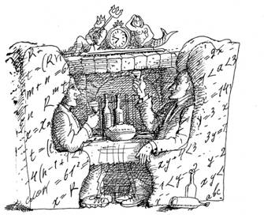
Мы
предавались беседе и гастрономическим удовольствиям. Водник
рассказывал о своей жизни, которая текла неспешно и размеренно. Она
складывалась из занятий спортом, необременительных хлопот по дому,
легкого чтения, встреч с друзьями и прогулок по лесу, часто в
компании с Лёшкой. Как правило, вечера посвящались головоломкам,
которые Водник ценил, прежде всего, за оригинальность и разнообразие.
Одни он придумывал сам, другие находил в книгах, третьи в качестве
оброка приносили рыбаки, четвертые узнавал от друзей, увлеченных тем
же экзотическим хобби. Развлекался он эскападами, которые начинались
после появления рыбаков - их Водник по привычке донимал шутками и
расспросами. Озеро было его вотчиной, где порядки устанавливал
исключительно он сам.
Я отдавал должное качеству
еды. Отведав копченого окуня, поинтересовался, каким образом Водник
научился так отлично готовить.
- Сам я готовлю
неплохо, но тут другой случай. Чтобы объяснить, начну издалека. Не
выношу, когда люди на себя руки накладывают, особенно, если
молоденькая девушка в озере утопилась. То, что в колодцах, реках,
ручьях происходит, не так меня расстраивает. Себя не пересилишь,
поэтому всякий раз стараюсь помочь. Приёмы реанимации знаю, могу
психологическую помощь оказать, да и магия не бесполезна. Сколько
утопленников с того света вытащил! Однако назад, к людям, они не
возвращаются, предпочитают в озере оставаться. Местные их не любят:
действительно, все воскрешенные другими становятся. Днем спят, а
ближе к вечеру плескаться начинают, песни поют, с рыбаками
заигрывают. Особенно любят безобразничать по четвергам. Живёт у меня
в озере девушка постепеннее, в годах, Марша её зовут. Она по
хозяйству и помогает - все эти разносолы она готовила. Подарил ей
поваренную книгу, теперь, не отрываясь, изучает, как букварь: и
читать учится, и рецепты блюд оттуда берёт. А готовит так, что
пальчики оближешь. Словом, не нарадуюсь. Жаль, не могу её обратно в
семью вернуть - жизнь после смерти происходит по своим
законам.
Слова Водника упали на благодатную
почву, подготовленную махровыми спекуляциями о загробной жизни, с
которыми в наши смутные времена не сталкивался, разве что, ленивый.
Заинтригованный, я спросил:
- Понятно, что ты о
купалках говоришь. А могут ли они до смерти защекотать, как народная
молва утверждает?
- Могут, могут. Когда на самих
смех накатывает. Но запомни, они полыни боятся. Возьми с собой
веточку - на пушечный выстрел ни одна купалка не подойдет. Больше
всего любят мои подружки безобразничать на неделе сразу после Троицы.
По лесу бегают, на ветках качаются, зверье криками гоняют. Только
лесной хозяин приструнить их может. Эта неделя еще русальной
называется. Но даже тогда от купалок можно избавиться дарами:
нитками, пряжей, венками из цветов. Девушки они непритязательные,
жаль, что всех безответная любовь сгубила.
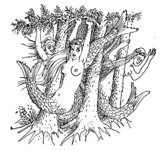
Как
ни жалел Водник купалок, мне вспомнились рассказы Юрши. Бывало, что
купалки до невозможности надоедали деревенским. Тогда, осерчав, из
снопа ржи они готовили чучело купалки, а затем торжественно разрывали
его на колоски и разбрасывали по полю. Или топили чучело в воде и
отпевали, как натурального покойника. На какое-то время
помогало.
Подумав о второй, не лучшей половине
человечества, к которой относились мы с Водником, я удивился тем, что
никогда не слышал о купалках мужского рода. Забавно, почему?
-
Нравится или нет, встречаются мужики-утопленники. Куда они потом
деваются? Опять тайна, покрытая мраком?
- Какая
тут тайна! Не приживаются они, всё-таки существа менее
приспособленные. Уходят в лес, а затем вообще пропадают. Думаю, что
местные им новое упокоение дают, если в лесу встречают. Мужики больше
по пьянке тонут, на моей памяти только один сам утопился. Вытащил
как-то парня, синего, всего в водорослях, полдня промучился, чтобы к
жизни вернуть. Едва очнулся, душить меня начал - что-то спьяну
померещилось. Еле жив остался после его склизких объятий. Долго мне
потом досаждал, водки требовал, пока в лесах не сгинул.
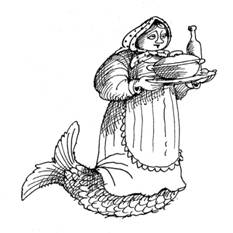
Слушая
истории Водника, я всё более убеждался, что жизнь в этих загадочных
местах идёт по своему укладу. Кстати, сам Водник недавно вернулся из
другого мира, предпочтя окружающие чудеса непыльной директорской
жизни. В чём причина такого выбора? Ответ Водника оказался на
удивление простым и убедительным. Он устал наблюдать, как бездумно
крушат устои порядка и добродетели, как беднеют бедные и богатеют
богатые, как изворачиваются и лгут те, кто взял на себя клятвенную
обязанность блюсти интересы и права граждан этой страны.
-
Посуди сам, - говорил Водник, - одни те же лица в разных сочетаниях
выходят на сцену политического балагана. Звучат пустые обещания,
обнародуются невыполнимые планы, которые исподволь возвращают
феодализм, ряженый в тогу добровольного рабства. Иные пенсии больше
зарплат, а иные зарплаты не выплачиваются по году. Весело жить в
новой России! Где, как не здесь, мог появиться афоризм: "сколько
у государства ни кради, все равно украденное не вернешь"?
Демократические сверхпривилегии стали покруче прежних, а, чтобы
прекратить брожение умов, практикуется фактический запрет на
образование, лживо обставленный экономической необходимостью. Всё
слишком просто: чем глупее народ, тем легче им манипулировать. Ох уж
эти агенты влияния!
Слова Водника навевали
грусть, но и радовали, так как попадали в самое яблочко. Сказанное
было горькой правдой. Впрочем, "времена не выбирают, в них
живут и умирают..." Что толку судачить о симптомах болезни,
лечить которую должен скальпель хирурга? А ведь как красиво все
начиналось: первые демократические митинги, Народный фронт,
суверенитет... Свобода пьянила на каждом углу. Но, как и положено,
настало неизбежное похмелье. Обещания, похожи на карточные долги тем,
что требуют расплаты. В нашей стране платить по чужим долгам
заставляют народ.
- Водник, хватит о политике -
тошно вспоминать всеобщую политическую проституцию. Скажи о себе. Вот
ты, со своими возможностями, разве не сумел бы приобрести власть,
славу, деньги? Ну и жил бы в большом мире, директорствовал. Какое
тебе дело до происходящего вокруг? Гори всё огнем!
Водник
ответил не сразу. Оценивающе взглянув на меня, он стал излагать свою
жизненную позицию.
- Случается так, что даже
обычный человек устает жить, далеко не исчерпав отведенные ему годы.
А теперь представь, что дана не одна жизнь, а десять или сто. С
годами не стареешь, и в какой-то момент внуки твоих друзей начинают
выглядеть старше тебя. Каждый десяток лет надо менять личину, иначе
накопятся вопросы, на которые, с точки зрения здравого смысла, нет
вразумительных ответов. Ну а власть, деньги - всё это дешевые
иллюзии. Не моя стезя бессмысленно прожигать жизнь или быть
идеалистом, алчущим всеобщего благоденствия. Если ты сам живое
воплощение вечности, с какой стати думать о вечном? Это как сапожник
без сапог.
Водник помолчал и с неодобрением
добавил.
- Естественно, жизнь не стоит на месте.
Сейчас подросло новое поколение наших родственников, которому ваш мир
пришелся по душе. Думаю, слышал о даме, которая второго Ильича
пользовала. Из наших тетка, но амбиций в ней через край: то
президентом хочет стать, то депутатом, то партию создать, то
движение. Молодо-зелено, что с неё взять! Впрочем, даже Косма, уж как
стар, а любит к вам выбираться. Когда на пару дней, когда на
недельку, чтоб встряхнуться да побуянить. Такие вещи я ещё могу
понять.
- Хорошо, но ведь должны же твои
необычные качества хоть в чём-то помогать?
- Не
без этого. Кого надо пугнуть могу, печать или бланк изобразить, с
деньгами проблем нет. Жизнь отравляет другое. То соседи донос
составят, то сильный мира захочет с твоей помощью утвердиться во
власти. А мне что до ваших безмозглых бюрократов, уголовных паханов
или новых русских? Сами разбирайтесь.
Подумав,
Водник добавил:
- Не подумай, что это все!
Требуются справки, анкеты, заявления, формы и допуски, пенсионные
карточки, номера налогоплательщика и прочее, прочее... Без них не
обойтись, но разве это для тех, кто наблюдал рождение и смерть
народов и государств? Кто-то из нашего семейства в свое время обладал
неограниченной властью, но она, как и самое изысканное блюдо,
приедается. Конечно, можно было бы посвятить жизнь борьбе, что
считается высшим проявлением духа в вашем мире. Но с кем и за что? За
благосостояние обывателя, именуемого средним классом, которому и так
хорошо при любых строе и политической системе? За переустройство
общества, коммунизм, капитализм? Их уже давно построили, если не для
всех, то для ограниченного круга лиц. За счёт других, которых
большинство. Знаю точно, как бывший директор. Может, мне в чужих
грехах каяться, к чему призывает церковь? От ваших нынешних покаяния
фиг дождешься. Нет, пусть сами за себя ответят - судный день не за
горами. Скажу ещё одно: перспектива вашей общественной формации
совершенно непонятна, даже лет через десять не
просматривается.
Водник перевел дыхание, хлебнул
вина, и завершил на патетической ноте.
- Велик
ли выбор, который предоставил мне твой мир? Трудовые будни и
постоянная тревога, что какой-нибудь пытливый ум обнаружит мандат,
выданный Временным правительством, или метрику эпохи Ивана Грозного.
По этой причине в сталинских лагерях едва не сгнил - лучший друг
донес... Невесело все, да и прикипели мы к нашей ортогональности.
Здесь общий интерес к головоломкам. Жить должно быть интересно! -
считаем мы. И не когда-нибудь, в мечтах о светлом будущем, а сегодня
и сейчас. Надо радоваться друзьям, солнцу над головой и, конечно,
головоломкам.
- Резонно, давай выпьем за
понимание!
Мы переглянулись и осушили бокалы.
Водник оказался вполне нормальным человеком. Не зря за ним стояла
вековая мудрость! Сказано было все, мы перешли к ждавшим своей
очереди головоломкам. Начал Водник.
- Подвизался
я как-то при королевском дворе. Ну и скучное, скажу, это занятие!
Запомнился такой случай. За услуги персоне
благородных кровей алхимика-звездочета даровали милостью получить
столько золотых пистолей, сколько он сможет уложить в один слой на
круг, начерченный имевшимся при нем циркулем. Алхимик решил выгадать
больше и использовал для построения круга сферическую поверхность
дворцовой чаши, радиус которой примерно втрое превышал наибольший
раствор его циркуля. Разберись, получил ли он сверх того, что имел бы
при построении круга на плоскости.
-
Помню другую историю с тем же алхимиком. Днём и ночью его терзала
мысль о золоте, которое требовалось для завершения работы по созданию
философского камня и проведения последующих трансмутаций. Прикинув
все за и против, он вызвал на турнир своего собрата, служившего в
соседнем королевстве. Поединок по арифметике состоялся в присутствии
вельможной знати, которая выставила в качестве приза мешок золота.
Согласно условию турнира
требовалось найти два наименьших целых числа, заданных через их сумму
и сумму их квадратов. Алхимику сообщили сумму чисел, его противнику -
сумму квадратов. Между ними состоялся следующий примечательный
диалог, который начал алхимик.
- Пока что я не
знаю этих чисел.
- Я тоже не в состоянии их
вычислить.
- А вот теперь я догадался! -
вскричал алхимик, - золото моё! Что за числа использовались при
проведении турнира?
Ну а
мне всегда было что рассказать, если речь заходила о
головоломках.
- От дома
до работы я могу добраться метро или трамваем. В течение месяца я
чаще пользовался метро. Получилось, что если бы вместо метро ехал
трамваем и наоборот, то сэкономил бы утроенную разность затрат на
проезд метро и трамваем. На сколько раз больше я пользовался метро,
если проезд в метро был дороже проезда трамваем?
-
Над этим стоит подумать, - изрёк Водник.
-
Другой интересный факт. Трехзначный номер моей
квартиры обладает редким свойством. Если его поделить на четыре, то
получится двузначное число, из цифр которого легко найти цифры
номера. А именно, вторая цифра номера равна разности второй и первой
цифр этого числа, первая - разности второй и удвоенной первой, третья
- удвоенной разности второй и первой цифр.
Жду как-нибудь в гости!
- Пока что ты у меня в
гостях и самое время переходить к горячему, но к нему - новая
головоломка. На кухне установлен стеллаж. Все
его полки по порядку пронумерованы, начиная от пола - так легче
пользоваться. На каждой полке четыре отсека, которые тоже
пронумерованы от пола, начиная с самого первого, находящегося в левом
нижнем углу стеллажа. Надо разыскать два отсека, сумма номеров
которых составляет число шестьдесят три, а номер одного из них дает
номер полки, на которой находится другой отсек.
Чем быстрее решишь, тем раньше подам горячее. Так как насчёт
продолжения?
Узнав от меня номера, Водник без
задержки принёс второе - фаршированную щуку, отлично сочетавшуюся с
марочным Алиготе, запас которого казался неограниченным. После
очередной бутылки головоломки пошли более сложные.
-
Слоны любят жаркое солнце, - удивил я Водника глубиной суждения, - но
эта общность выражается и иным способом. Слова
"слон" и "солнце" могут рассматриваться как
квадраты двух целых чисел, а одинаковые буквы обозначают одинаковые
цифры. Что за числа?
Водник
кивнул, показывая, что принял головоломку к исполнению, и углубил
тропическую тематику.
- Если о жарком солнце
заговорил, то это наводит на мысли об экваторе, а там, особенно в
джунглях, есть чему удивляться. Перед закатом
солнца объевшийся червяк выполз в центр круглой шляпки вкуснейшего
гриба, который он больше видеть не мог. Червяку хотелось доползти до
края шляпки и упасть на прохладную землю, чтобы отдохнуть и
переварить съеденное. Червяк полз точно вдоль радиуса шляпки. Его
скорость составляла два миллиметра в минуту. Радиус шляпки гриба был
десять сантиметров. Но гриб непрерывно рос, равномерно разрастаясь по
поверхности шляпки, край которой удалялся от центра с постоянной
скоростью десять миллиметров в минуту. Если учесть, что тропический
гриб растет несколько дней, его размеры могут достигать многих
метров. Доползет ли червяк до края шляпки, хотя бы, к утру следующего
дня, если вообще доползет?
Пообещав
вскоре снова навестить Водника, я нетвердой походкой покинул его
гостеприимное жилище. Прогулка до дома освежила голову, так что баня,
которую сготовил Иван, пришлась как нельзя кстати. Мы хлестались
вениками, исходили обильным потом на полках, вдыхали аромат лесного
вереска, плескали друг на друга холодную колодезную воду, чтобы затем
выйти посвежевшими и помолодевшими. Где баня, там русский дух, там
Русью пахнет, - заметила Агая, заскочившая на огонёк, когда, завершив
банный ритуал, мы с Иваном гоняли крепкие чаи. Хорошо!
Глава 4
MEDITATION
или
ИГРАЙ, БАЯН
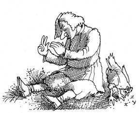
Первым
проснулся Иван, а затем без особых мудрствований разбудил меня
несколькими крепкими толчками в бок. Протирая глаза и сладко зевая, я
вдруг понял, что вчера не встречался с Лёшкой. Видимо, домашнее
задание оказалось для него нелегким, хотя за два дня мог бы и
справиться. Эта мысль нашла совершенно неожиданное подтверждение: я
застал Лёшку в качестве сотрапезника Ивана. Оба сидели с надутым
видом и молча ели: Лёшка - рассеяно, а Иван - грозно нахмурившись,
всем своим видом показывая, что не особо жалует раннего
посетителя.
Не обращая внимания на состояние
соседа, Лёшка ошеломил меня вопросом:
- Нет
ни сестры, ни брата, однако, отец соседа-молодца - сын моего отца.
А?
Иван засопел
и сжал кулаки. Я расценивал ситуацию как критическую: без завтрака
всем думалось с трудом, какие тут головоломки!
-
Вырви глаз, кто не любит нас, - достаточно громко пробормотал Иван
себе под нос.
Чтобы погасить назревавший
конфликт, я попросил Лёшку сначала позавтракать, а уж потом на свежем
воздухе вернуться к затеянному разговору. Конечно, у меня имелись
головоломки, которые в сложившейся ситуации было правильным сообщить
Лёшке и Агае одновременно. Это его устроило и после достижения
шаткого равновесия трапеза продолжилась в предгрозовом
затишье.
Буркнув, что работа не ждёт, нас
покинул Иван. Вслед за ним я отправился к Агае, уже приступившей к
хлопотам по дому, и пригласил выйти, чтобы получить от меня новую
порцию головоломок.
- Понятно, Лёшка тебя
достал, есть у него такое свойство, - сказала она и бодро засеменила
к выходу.
К моменту нашего появления Лёшка
пристроился на травке у крыльца и что-то обдумывал, в такт своим
мыслям загибая пальцы рук. Может, деньги считал?
Отвечая
на безмолвный вопрос любителей, я произнес:
-
Вначале тест! Это, действительно, тест на проверку способностей
нестандартно мыслить. Если подставить
цифры, то после возведения нечётных в ту степень, которую дают
чётные, и перемножения результатов он получится снова. Это задачка
для разминки, когда её решите сможете перейти к другой,
посложнее.
- На
кафедре, где я работаю, есть три друга, назовём их, хотя бы, Иванов,
Петров, Сидоров. Между их возрастами существует очень тесная связь,
которая видна из следующего. Через тринадцать лет Иванову будет в два
раза больше лет, чем Петрову было в то время, когда Сидоров был в
шесть раз старше Иванова. Два года назад Иванову было столько же лет,
сколько Петрову тогда, когда он на шесть лет младше Иванова в то
время, когда Сидорову будет в два раза больше лет, чем Иванову
исполнится через два года. Когда Иванову был год, Сидоров был на
шестнадцать лет младше Петрова в том возрасте, когда ему исполнится в
три раза больше лет, чем Сидорову было тогда, когда Петров в два раза
младше Иванова в том возрасте, когда Сидоров на пять лет старше
своего возраста, взятого тогда, когда Петрову было в два раза меньше
лет, чем исполнится Иванову, когда Сидорову будет в пять раз больше
лет, чем ему было, когда родился Петров.
Думайте, господа.
Любители закатили глаза, но
нынче я не был расположен их жалеть. Надоели мне лешие да ведьмы
всякие!
- Еще головоломка на десерт. Сочинять
разные бумаги мне доводится весьма часто, поэтому заметил, что внешне
одинаковые стержни для шариковых ручек отличаются друг от друга
долговечностью. Вопреки равной длине, одних хватает на две недели,
других - на три. По-видимому, это связано с составом пасты, толщиной
стержней и диаметром пишущего шарика. Представьте теперь, что у меня
есть две ручки с разными стержнями, которые я использую строго
поочередно. Через какое время столбик пасты в "долговечном"
стержне окажется в четыре раза длиннее столбика пасты в другом
стержне?
Лёшка
с Агаей ушли в размышления, на время отрешившись от действительности.
Понятно, я их не торопил, так что моего исчезновения они и вовсе не
заметили.
Снова была граница, которая встретила
уже привычным молчаливым презрением. Ничего необычного не
происходило. На этот раз, чтобы скоротать время, я прихватил с собой
замусоленную книжку о приключениях Конана-киммерийца, случайно
обнаруженную у Ивана. Конечно, киммериец - не Джеймс Бонд, но и его
жизнь была переполнена приключениями, женщинами и вином. Периодически
отрываясь от захватывающего чтения, я осматривал границу в надежде
обнаружить те чудеса, которые когда-то поразили Юршу. Я совсем
было собрался уйти, чтобы вначале перекусить у Агаи, а затем посетить
Косму с Гордеем, но не мог прекратить чтение. На самом интересном
месте повествования, только Конан сошелся врукопашную со стаей мелких
злобных тварей, какой-то внутренний импульс оторвал меня от книги.
Взгляд, брошенный на границу, объяснил причину и напрочь изменил мои
намерения.
Чернота оживала прямо на глазах - по
её поверхности безумный танец отплясывали разноцветные сгустки света.
Их яркость непрерывно росла, наконец, они слились в непрерывном
хороводе, образовав золотистый пульсирующий полукруг поперечником в
несколько десятков метров. Я приблизился, не отрывая
взгляд от происходящих превращений. Яркость полукруга росла. Подойдя
вплотную, я коснулся края подсвеченной области. Поверхность границы
перестала быть холодной и неподатливой, как раньше, она потеплела и
упруго пружинила, напоминая натянутую резину, прогибавшуюся при
нажатии.
Вот та Жар-птица, которая мне нужна!
Осталось малое - схватить её за хвост. Решительно шагнув к центру
свечения, я подобрал с земли толстую сухую ветку. Она свободно
погрузилась в толщу границы и лишь затем уперлась во что-то твёрдое.
Я двинулся к краю светящегося полукруга и заметил, как граница
постепенно выталкивала ветку. В итоге она целиком оказалась снаружи.
Каждый имеет право на эксперимент! - сказал я себе и рискнул заменить
ветку рукой, чтобы пойти в обратном направлении. Было любопытно и,
если говорить честно, страшновато. Рука шаг за шагом уходила внутрь,
создавалось впечатление, что она движется в жидком киселе, налитом в
углубление-чашку, которое заполняла светящаяся субстанция границы.
В центре рука более чем по локоть оказалась скрытой в
пульсирующем свечении. Я вытащил её и внимательно осмотрел. Рука как
рука, на ней не обнаружилось никаких повреждений, нигде не кололо и
не щипало. Особо не размышляя, засунул в границу голову. Перед
глазами поплыли круги, дышать стало тяжелее, но удушья не ощущалось.
Это был шанс, а потому я залез в кисель целиком. Руки уперлись в
подсвеченную шероховатую поверхность. Я двинулся вдоль неё,
пока не оказался стоящим снаружи - граница не желала пускать внутрь.
С тем же успехом я несколько раз повторил первоначальную
попытку.
Вскоре свечение пошло на убыль,
полукруг поблек, испустил череду ярких вспышек и полностью исчез.
Опять передо мной возвышалась циклопическая стена мрака в его
первородном виде. Что же, - сказал я себе, - день не пропал даром, он
принес новые знания, которые многого стоят. По крайней мере,
я узнал о существования выхода.
Уже позже,
когда дома я вернулся к чтению книги, обнаружил, что загадка
Гремучего холма, как это и бывает, наложилась на другую. Возмущение
границы прервало чтение книги на странице, с необычным свойством:
сумма номеров страниц до неё совпадала с суммой номеров страниц после
неё. Сама страница в эти суммы не входила.
Забавная загадочка получилась!
* * *
С помощью колобка я легко
добрался до жилища Космы. Заранее постарался обойтись без сюрпризов,
которые могли оказаться почище безобидного представления, устроенного
Водником. С этой целью после обеда я забежал к Агае, как обычно
погружённой в головоломки, и попросил известить Косму о предстоящем
визите. Она закрыла глаза, что-то тихо прошептала на непонятном языке
и сообщила: "Он ждёт, не задерживайся в пути".
Через
час передо мной возвышался холм, менее Гремучего, склоны которого до
самой вершины заросли деревьями. Между ними вилась утоптанная
дорожка, всем своим видом показывающая, что ей регулярно
пользуются.
Она вывела к природной террасе, на
которую выходил розового мрамора античный портик. Под аркой в
расслабленной позе стоял Косма. Его наряд составляли экзотический
китайский халат, синюю ткань которого испещряли драконы и яркие
фантастические цветы, шлепанцы с загнутыми носами и маленькая
шапочка-тюбетейка. Заметив меня, он воскликнул:
-
Заходи, чем богаты, тем и рады!
Апартаменты
Космы, скрытые в глубине холма, соответствовали ожиданиям, навеянным
портиком с покрывавшими его вдоль и поперек геометрическими
барельефами. В гостиной царствовал древнегреческий стиль. Свет,
льющийся со всех сторон, играл на мозаичных витражах в свинцовых
переплетах, наборном каменном полу. Взору открывались амфоры,
расставленные вдоль стен, добротная мебель с витиеватой резьбой и
янтарными украшениями, которые неисчислимое количество раз
повторялись в узорах инкрустированных янтарем настенных панелей,
идущих от пола до потолка. Всяческие полочки и шкафчики дополняли эту
картину.
Янтарная комната! - мелькнула
пронзительная мысль. Однако, вспомнив, что она бесследно исчезла в
районе Кенигсберга, я немного успокоился. Да и зачем Косме это
сокровище? - там иной стиль и другая эпоха, не вписывающиеся в его
предпочтения. Чтобы успокоить себя, я всё-таки спросил Косму о судьбе
Янтарной комнаты, надеясь на его осведомленность из-за очевидного
пристрастия к янтарю. Он, снизойдя до обуревавших меня сомнений,
объяснил, что царскосельские сокровища до сих пор гниют в шахтах
Силезии. А к интерьеру его жилища тот декор и вовсе никакого
отношения не имеет.
Уже зная, что я отобедал,
Косма предложил фрукты и разнообразные напитки, хранящиеся в амфорах,
которые, помимо декоративного, имели чисто бытовой смысл. Разливал он
в изящные украшенные золотом хрустальные кубки, походящие на
объемистые кастрюли, никак не меньшие литра. Пользоваться устрашающей
тяжести сосудом позволяла витая ножка, удобно ложившаяся в
руку.
Мы разместились в плетёных креслах, откуда
открывался вид на затемненный проход, ведущий в глубину пещеры. Как
радушный хозяин, Косма предлагал отведать разнообразные изысканные
вина, имевшие восхитительный вкус и аромат. Он сопровождал дегустацию
рассказами о сортах винограда и местах его произрастания, о способах
производства вин, сравнивал технологии изготовления и сроки выдержки,
чем напомнил мне лектора дегустационного зала "Нектар", что
на Московском проспекте. Как и там, завершение лекции принесло легкое
опьянение.
Довольный достигнутым эффектом, Косма
произнёс:
- Грешен - люблю хорошие вина. А ещё
головоломки. Ты заметил, что все здесь немного сдвинуты на них. Это
наша общая страсть, которая объединяет не менее, чем родственные узы.
Впрочем, ты такой же.
Считать себя сдвинутым не
хотелось, но, как говорится, со стороны виднее. Поблагодарив за
сомнительный комплимент, я поинтересовался происхождением
головоломок, появляющихся в этом изолированном от остального мира
месте. Хотя бы тех, что решали у Агаи.
- Тут всё
просто. У Агаи налажены хорошие контакты с родственниками, которые
выбрались к вам на жительство. Скоро снова накопит достаточно новых
головоломок, чтобы собрать нас на посиделки.
-
Жаль, что последнее время перестали выпускать интересные книги о
головоломках, - вздохнул Косма. - Только тем и занимаются, что
списывают друг у друга, переиздают труды столетней давности, делают
никудышные переводы, будто бы новые головоломки придумать некому.
Рынок завален бездарными книгами бездарных авторов. Даже для детей
нормально написать не могут.
Слова Космы
напомнили не столь давний случай, когда цензор не допустил к печати
редактируемый мной сборник головоломок, уже находящийся в типографии.
В интересах государства! - гласила его резолюция. Что же сейчас,
когда всё на продажу, а о государстве и не слышно, разве что-то
запрещают? Косма не ждал вопросов.
- Не иначе,
смутное время повлияло. Чтобы создать что-то новое, расход времени и
сил требуется неимоверный, а заработок никакой. Проще списать у
кого-то, даже не скрывая того. Так хоть полученные деньги
оправдаются. Если бы платили, как высокопоставленным писателям из
мэров, премьеров да президентов, думаю, дела обстояли бы иначе. Где
уж там! А их головоломки в одно действие укладываются, да и то
отнимание в свою пользу - ведь другого ничего не знают.
Дальше
под вино с фруктами говорили о запомнившихся книгах полюбившихся
головоломках. Случайно речь зашла о числе тринадцать. Характерно, что
с каких-то пор в ведомости на зарплату мой номер также
тринадцатый.
- Что думаешь об этом числе, почему
с ним связано столько всяческих суеверий? - спросил я Косму. - Не ты
ли со своими родственничками руку приложил?
-
Чего не делали, того не делали, - усмехнулся он. - Одни чёрных кошек
сторонятся, другие чертовой дюжины. А число совершенно заурядное.
Глупо его бояться, в нём зла не больше, чем в обыкновенном гвозде.
Впрочем, даже им можно уколоться при неосторожном обращении. Да что
уколоться! - гвоздём когда-то Иисуса распяли, - прищурился Косма. -
Что же теперь, все гвозди уничтожить?
- Кстати,
с распятием связан полный загадок Святой Грааль, сосуд для причащения
вином, использованный Христом и апостолами во время Тайной Вечери.
Грааль, "krathr" по-гречески, являет собой непостижимую
тайну, принявшую кровь Господню во время его распятия. Неведомым
образом он проделал путь из Палестины в Европу, а затем исчез.
Материализованная святыня способна наделить великой силой того, кто
отыщет её, руководствуясь чистыми и благородными намерениями. Ведь
отпить из Грааля означает приобрести частичку того могущества,
которое несёт в себе его святость. Вместе с тем, всякий недостойный
наказывается Граалем самым жёстоким образом. Кто знает, вдруг
священный сосуд ждёт своего часа где-то в России... Если судить по
тому, что сейчас происходит, здесь его, действительно, не хватает...
- задумчиво произнес Косма.
Его глаза
затуманились воспоминаниями, но я, обладая достаточным опытом общения
с обитателями ортогональности, не позволил ему замкнуться в
себе.
- Оставь в покое дела библейские, я тогда
ещё не родился. Впрочем, давай вспомним: даже во время Тайной Вечери
количество присутствующих составляло тринадцать. Случайность? Не
верю. А сейчас? Если тринадцатое число месяца накладывается на
определенный день недели, то такой день считается неблагоприятным.
Неясно, правда, для чего. За рубежом, этот день пятница, а у нас,
русских, - понедельник. Почему? Сам понимаешь, что не в шабаше ведьм
дело.
- Все объясняется традицией. Вспомни, на
Руси издавна работу с чарки принято начинать - попробуй затем не
напиться. А супостаты пьют с устатку, после завершения рабочей
недели, чтобы стресс снять. Так и получается, что голова болит в
разные дни. Число тринадцать, опять же, не при чём. На Запад и по
другой причине равняться не стоит. Неделя у них считается не с
понедельника, как у нормальных людей, а с воскресенья. Правильно
подмечено: что русскому здорово, то немцу верная смерть!
Какой
день недели был сегодня, я не помнил, да и число тоже, но отметил,
что виноградные вина пились легко. Голова от этого не становилась
легче. Мысли о роковых днях не покидали её, поэтому я спросил Косму,
когда наступит ближайший год без пятниц
тринадцатого числа? Ответ вселил в меня
утешение: не всё русским мучиться. Затем я предложил найти
наибольшее число, составленное из произведения целых чисел, в сумме
дающих тринадцать. Косма снова оказался на
высоте. Чтобы отметить успех, я дал ему другую головоломку: выразить
число тринадцать в виде суммы трех слагаемых, образующих между собой
геометрическую прогрессию.
-
Что тут думать, - отвечал Косма, - один, три, девять.
-
Есть ещё три способа, ну-ка поразмысли.
Я поймал
себя на том, что число тринадцать упорно не выходило из головы. Даже
в другой головоломке не обошлось без него. Если
перемешать все листки отрывного календаря за октябрь и, не глядя,
вынимать их по одному, то какова вероятность, что первыми будут
вынуты только те листки, на которых есть единица?
Найдя
решение, Косма ждал продолжения.
- От
головоломок мы никуда не денемся, ещё наговоримся о них. Не последний
раз встретились, - ответил я на его вопрос, любуясь окружающим
великолепием.
- Столько красивых вещей вокруг,
можно подумать, ты их специально собираешь. Нет ли причины тому в
твоей мифической сущности? Или роскошь засасывает?
Косма
нахмурил лоб и, к моему величайшему удивлению, стал
оправдываться:
- Здесь мой дом, он не может быть
уродливым. Сам Карл Фаберже учил меня, что человек должен окружать
себя красивыми вещами. Интерьер - всё равно, что визитная карточка.
Вещи не самоцель, прежде всего, я ценю их за удобства, не забывая при
этом и об эстетике.
Он помедлил, подыскивая
убедительные слова.
- Со времен моего знакомства
с Маяковским мир стал другим, но и сейчас я разделяю его нелюбовь к
мещанам. Мещанство - памятник патологическому желанию потреблять. Для
его расцвета настало благодатное время, круто удобренное фекалиями
ваших новых государственных законов. Прямо невспаханная целина,
загаженная бизоньими стадами законотворцев! Хрусталь на комоде
заменил вальяжный "Филипс", вместо ситцевых занавесок
появились натяжные потолки, джакузи и евростандарт, а когда-то
новомодные жёлтые ботинки из свиной кожи уступили место блестящей
иномарке. Воспевается вещицизм, поощряется хватательный рефлекс, идея
гражданского общества подменяется суррогатом общества потребления.
Посмотри на окружающую жизнь, в ней нормой становится не
удовлетворение нормальных потребностей, а элементарное обжорство.
Жрут же как свиньи из корыта!
Косме очень
хотелось высказаться, но рассчитывал ли он на моё понимание?
-
Ну и что? - подлил я масла в огонь его страстей.
-
Ты, серьезно, не понимаешь, что азарт накопительства находится в
противоречии с конечностью потребностей здорового человека? Обжоре
физически невозможно съесть всю зернистую икру, скупому - скопить все
денежные знаки, но нет предела фантазиям обывателя. Бывает, что
потребительство списывают на страх "черного дня",
связанного с ожиданием предстоящих бедствий и лишений, однако даже в
этом случае личная жадность отрицает безоблачное будущее.
Оратор
облизал пересохшие губы и на эмоциональном подъеме перешел к
финальной части выступления.
- Обрати внимание,
сам русский язык, издавна славящийся меткостью выражений, дал
слабину, заменив "мещанина" на нейтрально-радушное
"потребитель". Другие песни придумала жизнь! Не так давно
строили сообща и для всех, нынче каждый для себя и поодиночке.
Преуспевают те, кто не брезгует ни какими средствами, чтобы обобрать
других. Трудом праведным не построишь палат каменных! Вот и новые
русские, а вместе с ними и поборники буржуазного рая, в погоне за
золотым тельцом готовы топтать всё на пути к личному богатству. Опять
же, смысл их существования в том, чтобы отнимать и жрать.
Речь
Космы становилась обличительной, глаза лихорадочно блестели. Ну не
фанатик ли? Это не мешало мне мысленно соглашаться почти со всем, что
он так страстно излагал.
- А чем хамство,
замешанное на отсутствии денег, лучше такого же хамства, причиной
которого является их избыток? Надеюсь, в будущем общество
выздоровеет: одним будет нечем кичиться, а другим - нечего стыдиться.
Что восторжествует: потребление всех доступных благ без исключения
или разумное самоограничение?
Косма перевел
дыхание и вопросительно глянул на меня.
- Да ты
убежденный коммунист, если тебя послушать! Только что своими словами
изложил нетленные идеи светлого Маркса. Может, и с ним
встречался?
- Пошёл ты вместе с ним..., - кисло
скривился Косма. – Сам-то что думаешь?
Далеко
в будущее я не загадывал, но глобализм устремлений Космы был
обоснован: чем выше ступень развития человечества, тем больше
материальных благ в состоянии получить каждый. Что впереди -
потребительский рай и вырождение изнеженного человека или бурная
экспансия во Вселенную, для которой любые земные ресурсы покажутся не
более, чем песчинкой? Я полагал, что само мироздание даст нам ответ в
скором будущем. В настоящем же я не воспринимал жизнь исключительно в
штыки, как Косма, хотя и расценивал происходящее почти так же.
Отсутствие денег из-за мизерной зарплаты, положенной этим
государством, не позволяло отдаться сладкой нирване потребления и
стать опустившимся обывателем, какого вывел Косма в своей пламенной
речи. Всего-то для полного счастья мне требовались ботинки, которые
не текут в дождь, и теплая куртка, чтобы не мерзнуть в холода. Мечты,
мечты, мечты... Будет хлеб, будет и песня, - утверждал герой Малой
Земли. Нынешний гарант, несмотря на поразительное сходство с
предшественником, был не в состоянии обещать даже эту малость. По
известной причине.
После моих слов Косма затих,
понимание успокоило его израненную душу. Из народного трибуна он
превратился в прежнего хлебосольного хозяин предложив продолжить в
другом месте.
Мы прошли в соседнее помещение,
один вид которого вызвал у меня состояние близкое к шоку. Оно
походило на сокровищницу фараонов. Повсюду блестели золото и серебро.
Прекрасные украшения, искрящиеся самоцветами кубки и блюда, россыпи
монет заполняли распахнутые сундуки и ящики. Грудами возвышались
разноцветные драгоценные камни, прохудившиеся мешки ломились от
обилия благородного металла, кучи ценностей в живописном беспорядке
захламляли каменный пол.
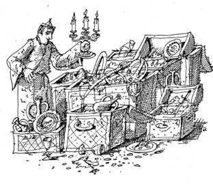
Поражённый
неимоверными богатствами, загипнотизированный радужными переливами
света на гранях драгоценностей, я впал в прострацию, не понимая,
зачем все эти сокровища яростному борцу с мещанством.
-
Косма, зачем отказывался от того, что сам накопитель? Права людская
молва, ещё в школе заставляли учить: "... и злой Кощей над
златом чахнет".
Косма с выражением хмыкнул
и сказал:
- Хоть и хорошо ты в школе учился, не
верь злым языкам. Скопилось всякой дряни за века, капля к капле.
-
Что делать собираешься со всеми этими ценностями?
-
Ума не приложу, вроде бы и не надо, да девать некуда. В здешней жизни
богатства не нужны.
- Отдай государству,
скольким людям сумеешь помочь!
- Никогда
подобной глупости не совершу! Ваши чиновники да братки всякие
разворуют: на себя потратят, в швейцарские банки переведут, между
родственниками поделят. Тебе дам, бери, сколько хочешь. Унести не
сможешь, Гордея позову, он пособит.
- Зачем мне
твои сокровища? - снова удивился я. - Вот уж не завидую участи
богатых. Трясись над сокровищами, телохранителям плати, чтобы другие
братки горячим утюгом не прижгли или бомбу не подложили. Никогда не
хотел разбогатеть.
- Не объясняй, я сам такой.
Никого не грабил ради этой ерунды. Пришлось мне и боярином быть, и
царевым советником служить. Да кем я только не был в своей жизни! Не
желаешь, а копится и копится. То дорогое подношение сделают, то
жалование золотом выдадут, то после битвы трофеи на твою долю
придутся. Не откажешься, а выкинуть жаль, всё-таки память, пусть и
дорогостоящая.
- Теперь верю, не суетись. Жизнь,
она у всех разная. Расскажи-ка лучше что-нибудь о себе. Много
интересного должно было приключиться с тобой за века.
-
Спросил ты о былой жизни, и сразу вспомнилась царица Савская. До чего
обольстительная женщина! Она правила богатым торговым народом, жившим
в пределах нынешней Эфиопии. В её стране водились золото, слоновая
кость, драгоценные камни, экзотические благовония и пряности. Было
чем торговать с другими! Подданные превозносили её ум и красоту.
Возгордилась этим царица и однажды отправилась испытать мудрость царя
Соломона. Много дней и ночей проверяла царица наимудрейшего из всех
живших - по прошествии лет могу сказать так без лишней скромности.
Некоторые из её вопросов запомнились особенно.
В
государстве Савея, где правила царица, жёстоко преследовались дуэли
со смертельным исходом. Она предложила рассудить две такие дуэли. В
одном случае дуэлянт впоследствии умер от тропической инфекции,
попавшей в рану, в другом - раненый участник дуэли, не дожидаясь
смерти от потери крови, бросился с обрыва в пропасть. Виновны ли в
этих смертях их противники? Следовало ли их казнить?
Другой
вопрос царицы был не менее запутан. Двух людей
обвиняли в совместном преступлении. Если оба признавали себя
виновными, каждый получал легкое наказание. Если это делал один, а
второй - нет, то первого освобождали, а второго подвергали суровому
наказанию. Если оба не признавали своей вины, их обоих освобождали от
наказания. Почему с точки зрения отдельного обвиняемого лучше
признаться, а с точки зрения обоих - правильнее не делать этого?
-
А как-то, помню, служил я первым визирем падишаха на Востоке, -
продолжил Косма.
- Жизнь была прекрасна в нашем
государстве, пока не хлынули на границы орды кочевников, диких и
безжалостных. Они сметали все на своем пути. Сам падишах возглавил
войско, чтобы умереть или победить. Я был оставлен в столице со
строжайшим наказом падишаха, велевшим при прощании:
-
Милый друг, я покидаю свою жену, ожидающую
ребенка. Случись так, что я не вернусь, а родится сын, тогда ему
завещаю две трети наследства, остальное - матери. Если же родится
дочь, ей - одну треть, остальное - матери.
Воины
доблестно выполнили свой долг, битва была жестокой и кровавой. К
сожалению, победа досталась ценой жизни повелителя. А вскоре родилась
двойня: мальчик и девочка. Каким образом следовало выполнять
завещание падишаха?
Косма
прикрыл глаза и сладко улыбался, видимо, вспоминая свою молодость,
скрытую сединой веков. Через некоторое время улыбка покинула его
лицо, он вздохнул, отряхнулся от воспрявших было чувств и обратился к
временам более близким.
- Помню 1771 год,
обретался я тогда в Москве. Был купцом первой гильдии, торговал
пряностями. Коммерция быстро наскучила. Чтобы развлечься, принимал
личину дворового Василия Андреева, который был не дурак в кабаке
погулять да подраться. Тогда ещё чумной бунт начался, сглаз народ
искал, колдунов и ведьм всяких. Архиепископ Амвросий, пастырь наш
духовный, стал уговаривать толпу разойтись, наставлял словами
похабными. Не любо стало Василию, возьми да закричи: "Колдун!"
Толпа рассвирепела, тут архиепископу конец пришел - в вере слаб
оказался. Не то, что император Николай Павлович, который одним своим
видом сумел холерный бунт предотвратить. Случилось это через полвека
в Петербурге. Как сейчас, его блестящий мундир помню...
-
А вот совсем недавно, когда Белый дом из танковых пушек бомбили, все
ответственные чины почище осиновых листов дрожали. Только один,
мордатый такой, начал за свободу народу оружие и деньги раздавать. Не
подумай вдруг, что по идейным соображениям, - за себя сильно
испугался, о своей свободе думал... Извини, - вдруг прервал Косма
свой рассказ, - позже закончу, сейчас Гордей явится.
-
Может и Лёшка будет?
- Хотел прийти, да грехи в
рай не пускают. Если освободится, то пожалует ближе к вечеру. Идём
дальше.
*
* *
А
дальше находился другой зал апартаментов. Там, действительно, был
зал, игровой. Оба соседа - Косма и Гордей - оказались не только
любителями головоломок, но и завзятыми игроками. Это выяснилось,
когда к нашей компании присоединился Гордей. Жил он с другой стороны
холма и забегал сюда, чтобы провести время за головоломками и
азартными играми. Играли на золото из соседнего помещения, которого
хватало, чтобы оплатить любой проигрыш.
Перейду
к событиям, которые разворачивались в игорном заведении, составлявшем
неотъемлемую и, как следовало из монументальной обстановки, важную
часть подземной резиденции. Необъятное помещение было выдержано в
закатных тонах: красное дерево, тяжёлые драпировки из багрового
бархата, на полу - розовый каррарский мрамор с узорчатым персидским
ковром, размещённым в центре зала. Окна отсутствовали, освещение
создавали фигурные подвески из красной меди с зажженными свечами.
Канделябры со свечами были расставлены также на десятках игровых
столов, для изготовления которых использовался благородный красный
орех. Почётное место занимал стол с рулеткой, рядом примостились
бильярдный и карточный столы, столы для игры в шахматы, шашки, нарды,
го, составлявшие классическое ядро зала. Некоторые столы имели
сложным образом разграфленную поверхность, часть из них была покрыта
малиновым сукном. На столах виднелись колоды карт, игральные кубики,
стопки жетонов, фишек и золотых монет. У одной из стен на стойке
стояли пузатые кожаные мешочки, то ли с золотом, то ли с серебром, за
ними располагался открытый бар, заполненный бутылками с разноцветными
этикетками. Наконец, по периметру были выставлены мягкие диванчики с
изогнутыми спинками и похожие стулья.
Косма не
стал пускаться в долгие объяснения, а сразу пожаловал меня увесистым
мешочком, в котором оказались хорошо сохранившиеся золотые дублоны
Карла Испанского. Похожий мешочек получил Гордей. Это были ставки в
сегодняшней игре, а играть, как я понял, намеревались долго и
всерьёз. Меня мало интересовали привычные азартные игры, до которых я
никогда не был большим охотником, поэтому я предложил выбрать то, что
содержало бы в себе элементы головоломок.
-
Давай, на нормальные деньги играть, российские? - попросил я Косму,
помня, что несколько десятков рублей так и остались
неиспользованными. Да и проявление патриотизма по отношению к
национальной валюте было не лишним.
- Не всё ли
равно? Дублоны ничем не хуже, зато монеты тяжёлые и метать их легче.
Золото есть золото, а что стоят твои деньги? Есть такой каверзный
вопрос: какая разница между рублем и долларом? Запомни ответ: доллар!
Вот не так давно, всего несколько сот лет
назад, копейка была серьёзной монетой. К примеру, на Руси меч,
кольчуга и щит стоили вместе десять гривен, в каждой по десять
копеек. Меч стоил больше, чем две кольчуги, три кольчуги - больше,
чем четыре щита. Можешь сам рассчитать, сколько копеек стоили эти
предметы воинской амуниции по отдельности, если три щита были дороже
меча. Впрочем, потом решишь, - закончил
Косма. - Двигай сюда, здесь игра в бабки, начнём с неё.
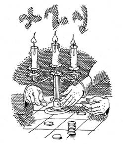
Мы
подошли к небольшому столу, поверхность которого была поделена на
квадраты. Эта игра не имела никакого отношения к старинной русской
игре и подходила, скорее, тем, кто ищет способ потратить деньги, или
бабки, как их порой именуют. Игровыми
аксессуарами служили плоские пластмассовые фишки различной формы и
размеров. На каждой была указана цифра, обозначающая цену фишки. Чем
меньше размер имела фишка, тем больше она стоила. Игроки получали
одинаковые наборы фишек, а затем поочередно выкладывали по одной
фишке на любое место стола. Фишка не должна была касаться соседних,
ранее выложенных на стол фишек. Проигрывал тот, кто не мог найти на
столе свободного места для своей фишки при совершении очередного
хода. Размер проигрыша равнялся стоимости использованных игроком
фишек.
Косма с Гордеем
сыграли подряд несколько партий. Гордей упорно проигрывал, поэтому
выбрал для себя роль зрителя. К этому моменту я уже определил
стратегию, позволяющую выиграть, если начинать игру первым. Успешно
воплотив её в жизнь, изложил присутствующим нехитрые правила
выигрыша. Гордей в предвкушении потер руки, а Косма цыкнул на него и
огорченно сообщил, что из-за моей излишней учёности они лишились
замечательной игры.
Радость одного и огорчение
другого длились недолго - мы перешли к круглому столику, покрытому
ворсистым сукном. В новой игре с расстояния в
несколько метров бросали пять монет, ими нужно было попасть в круглую
точку, вычерченную в самом центре стола. Перед броском последней
монеты заключали пари, условия которых выбирали зрители. Разрешалось
делать ставку либо на то, что монета упадет ближе других монет к
центру стола, то есть последний бросок окажется лучшим, либо, что она
не упадет ближе, а бросок не станет лучшим. Монеты выпало бросать
мне, тогда как Косма с Гордеем условились о ставках один к трём.
И
как вы думаете, кто из них закономерно проигрывал? Конечно, Гордей.
Это донельзя расстроило его и он перешёл в роль зрителя. К сожалению,
зрителем он оказался беспокойным и всё время вмешивался с советами,
адресованными то мне, то Косме. Его можно было утихомирить только уже
неоднократно проверенным способом. Я рассказал ему головоломку,
решать которую он отправился в гостиную, и больше не приставал с
наставлениями. Исходя из того, что Косма богат на золотые монеты, я
выбрал головоломку, решение которой Гордей мог легко проверить с
помощью монет. На столе лежат монеты, все
разного номинала и диаметра. Если их раскладывать по две, согласно
возрастанию номинала, то удается получить столько же различных
вариантов, сколько получается, если раскладывать их тройками по
возрастанию диаметра. Сколько всего монет?
Ну
а Косма предложил новую игру. Из ящика стола
он достал плоскую квадратную коробочку с четырьмя одинаковыми
открытыми квадратными отсеками. Коробочка была закреплена осью на
подставке и могла свободно вращаться относительно оси, проходящей
через её центр. Предлагалось издалека забросить во вращающуюся
коробочку четыре монеты. Монета с равными шансами оказывалась в любом
из отсеков. Банк держал Косма, моей ставкой был дублон. Он предложил
следующую схему. Если после четырёх бросков в каждом отсеке окажется
по монете, я выигрываю десять дублонов. Раскинув мозгами, я понял,
что эти правила не были совсем грабительскими, однако попросил
изменить их, и при той же ставке выплачивать в качестве выигрыша по
дублону за каждый незаполненный отсек. Косма
не видел разницы, но сильно заблуждался, что стало понятно по
результатам игры.
Продолжали за другим столом,
сукно которого было расчерчено сеткой из
одинаковых равносторонних треугольников. Их сторона в два раза
превышала диаметр дублона, который, опять таки, надо было бросать на
стол. Если монета целиком оказывалась в треугольнике, не касаясь ни
одной из его сторон, выплачивался приз в тридцать монет. Брошенная
монета всегда отходила Косме. Справедливости
ради я попросил удвоить приз, на что Косма, наученный предыдущим
опытом общения со мной, уже не согласился.
Подумав,
он предложил по очереди бросать монету на стол
до тех пор, пока у кого-то не выпадет крест, изображенный с одной
стороны эскудо. Игрок, выкинувший крест, выигрывает монету у другого.
Чтобы не обижать хозяина, я позволил ему начинать первым, хотя мои
шансы проиграть не вызывали сомнений. Так и
произошло. Намереваясь компенсировать понесенный ущерб, пусть он и
был чисто условным, я изменил правила игры. Косма
вносит десять монет, а дальше бросает эскудо и считает, на каком по
порядку броске выпадет крест. Я плачу ему ровно столько монет,
сколько составит квадрат порядкового номера удачного броска.
-
Платишь десять, а получаешь сто, заманчиво? - спросил я Косму. Тот
удивился, но, не почувствовав подвоха, принял новые правила. А позже,
осознав бесперспективность спора с фортуной, в сердцах стукнул
кулаком по столу.
- Не стоит мебель ломать из-за
пустяков, - сделал я слабую попытку его успокоить. - Сыграем в другую
игру. Опять будем кидать монету, но по другим
правилам. Игра состоит из конов, в каждом из которых игроки бросают
монету, причём чётное количество раз: от двух до десяти. Перед
началом кона игроки объявляют сколько бросков они будут использовать,
а затем поочередно приступают к объявленной серии бросков. Выигрывает
тот, кто первым получит в своей серии равное количество орлов и
решек. В спорных случаях, скажем при совпадении результатов,
производят переигровку. Ставка в игре - десять дублонов.
Согласен? - спросил я Косму.
Он утвердительно
кивнул головой, и мы приступили. Косма предпочитал совершать от шести
до десяти бросков в серии. Я выбрал ровно два. Эта тактика, о
которой, конечно, я знал заранее, с лихвой оправдала себя,
доказательством чему служил потяжелевший мешочек с золотом, в духе
лучших традиций закрепленный мной на ремне джинсов.
После
проигрыша Косма не стал предаваться отчаянию, а неожиданно предложил
рулетку, чеченскую.
- Почему чеченскую? Если
верить сообщениям средств массовой информации, ее особенно полюбили
кавказские террористы. Правда, играют в неё исключительно одни
заложники под руководством похитителей. Здесь
тоже вращается барабан, как в обычной рулетке, но барабан совершенно
иного рода, - провозгласил он. В его руке
прямо из воздуха возник шестизарядный револьвер. - Обычно
игра заканчивается гибелью кого-то из участников, но сейчас патроны
холостые. Их всего два, в барабане они находятся рядом. Не глядя,
поворачиваешь барабан и начинаешь пятнашки со смертью. Игроки -
отчаянные люди, сперва один подносит револьвер к виску и нажимает на
спусковой крючок: либо раздается выстрел, либо барабан
проворачивается на следующую позицию. Тогда настает черед другого
игрока. И так друг за другом, до смертельного выстрела. Каким
начнешь, первым или вторым?
-
Конечно, вторым, - не раздумывая, ответил я, - шансов
больше.
Испросивший пояснений Косма, получил их
незамедлительно: шутки ради я сослался на пословицу, гласящую, что
лучше смеется тот, кто смеется последним. Он проверил народную
мудрость на деле и убедился в её правоте, напустив в помещение
неимоверное количество пороховых газов.
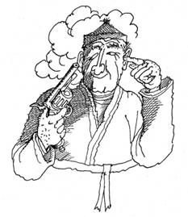
У меня же
заложило уши от произведённого им грохота.
По этой
причине я попросил его перейти к чему-нибудь более тихому и не столь
вонючему. Косма внял моим мольбам и снял со стойки мешочек с
монетами.
- Достаю семь
монет и выкладываю их кружком, - пустился он
в объяснения. - Теперь делаю магический пасс,
а дальше каждая монета своим цветом указывает на то, какие монеты по
бокам от неё: красным, если обе монеты фальшивые, зеленым, если рядом
лишь одна фальшивая монета. Когда по соседству фальшивых монет нет,
то цвет монеты не меняется. Смотри.
После
этих слов все монеты стали зелеными. Косма был удовлетворен.
-
Сколько здесь фальшивых монет? Учти, что
только настоящие монеты указывают истинный цвет, а фальшивые всегда
его искажают, иными словами, лгут.
Надо
признаться, пришлось попотеть, прежде чем я дал правильный ответ.
В качестве
благодарности за сеанс магии, который не встретишь в другом месте, я
попросил у Космы комплект лото и предложил ему свою головоломку. Если
в мешке находятся девяносто бочонков, то сколько раз в среднем
требуется вынуть по три бочонка, чтобы, хоть один раз,
последовательность их номеров образовала возрастающий ряд чисел?
-
Нет, нет, не спеши, - заметил я, когда Косма набрал воздуха, чтобы
произнести ответ. - По мере вынимания каждой
тройки бочонков номер следующего в тройке бочонка должен оказаться
больше номера предыдущего. Да и вообще, хватит ли бочонков в
мешке?
Почесав затылок,
Косма непостижимым путем нашел правильный ответ. Пусть жизнь не
кажется ему малиной, - подумал я про себя и изменил вопрос: сколько
в среднем понадобится извлечь бочонков, пока последовательность
номеров бочонков в любой последовательно вынутой тройке не даст
возрастающий ряд чисел?
Потребовался
тайм-брейк, взятый Космой для размышлений, а затем он сообщил, что
решением займется позже. А дальше, как бы компенсируя переход к
домашнему заданию, продемонстрировал свои исключительные возможности.
Сложив стопкой штук тридцать золотых монет, он
двумя жестами разрезал их на равные четвертушки, затем бросил в мешок
и перемешал.
- Ты видел,
что получилось четыре типа четвертушек, ибо я
разделил эскудо по нанесенному на монету кресту. Сколько четвертушек
в среднем надо вынуть из мешка, чтобы сложить одну монету целиком?
Найди наименьшее количество!
Настала
моя очередь чесать затылок и брать задание на дом. Справлюсь! Уходить
не хотелось, но видя, что наша встреча близится к концу, я решил
предложить хозяину пари на картах. Условия просты: используем
стандартную колоду, из которой я тащу по одной карте сверху.
Посмотрев на неё, заключаю с Космой пари на один или пять дублонов,
что эта карта - король, дама или валет. Если Косма принимает пари, то
проигравший платит проигрыш в двойном размере ставки. Если - нет, то
Косма сразу выплачивает сделанную мной ставку. Моей тактикой было
всегда ставить по пять дублонов на короля, даму, валета и туз, а
также по одному дублону во всех остальных случаях.
К завершению игры мы разошлись практически по нулям, хотя
некоторый перевес был всё-таки на моей стороне.
Вскоре
Косма исчез в сокровищнице, а затем вернулся, сгибаясь под тяжестью
огромного мешка. Ещё одна головоломка на дом. Мешок, изготовленный из
грубой парусины, был необычайно стар, на нём виднелись замытые
красные пятна, возможно, вина или крови. Мой интерес не остался
незамеченным.
- Этот мешок - собственность
пирата Генри Моргана, прозванного кровавым, в нем он однажды спрятал
награбленные сокровища. Расскажу когда-нибудь и об этом, а сейчас
слушай головоломку. В мешке находится
одинаковое количество зеленых и жёлтых изумрудов, на ощупь их не
отличишь. Делаю так: не подглядывая, один раз вынимаю сто изумрудов,
другой - десять. В каком случае больше шанс вынуть одинаковое
количество изумрудов того и другого цвета?
Дополнительный вопрос: каким в среднем
окажется отношение количества вынутых изумрудов разных цветов при
вынимании их до тех пор, пока не будет извлечен жёлтый
изумруд?
Выслушав
головоломку, я не стал её решать, но попросил Косму принести десяток
пустых мешков, а также рубины или алмазы. Когда он доставил желаемое,
я разложил рубины и изумруды по мешкам. Моя ответная головоломка
стала овеществленной. В десяти мешках
находились зеленые изумруды, рубины и жёлтые изумруды. В двух мешках
количество жёлтых изумрудов не равнялось количеству зеленых. В
четырёх мешках количество рубинов и жёлтых изумрудов было одинаковым.
Сколько мешков, в которых разное количество рубинов и зелёных
изумрудов?
Совсем
случайно я засунул руку в карман и нащупал там купюру в десять
рублей. Косма не хотел считать рубли за деньги, а теперь точно
придётся!
- На купюре
стоит номер. Он семизначный, а может оказаться и шестизначным, если
первая цифра нуль. Сколько купюр следует иметь, чтобы хоть одно
частное от деления двух номеров начиналось на единицу? В среднем,
конечно.
Словно угадав,
что встреча подходит к концу, из гостиной вернулся Гордей. Он был
безмерно счастлив тем, что нашел решение головоломки с монетами.
Пусть и у него будет пища для размышлений, - подумал я. Кивнув
на моргановский мешок, я предложил указать наименьшее количество
камней, которые необходимо вынуть, чтобы среди них всегда оказались
два изумруда одного цвета.
Косма
проводил меня до античного входа, подарив напоследок флягу с
греческим коньяком, а Гордей перед расставанием пожелал устроить
экскурсию в свои хоромы, чтобы, узнав дорогу, я наведывался
чаще.
Гордей был прост и полностью лишён
предрассудков. Это проявлялось во всем: в поведении, внешности,
одежде, даже в жилище, которое он себе выбрал. Изнутри его дом,
скрытый в глубине холма, напоминал лесную сторожку. Там располагались
двухэтажные нары, кособокая печь, сложенная из камней, неструганый
стол, полки по стенам и гвозди для одежды. На случай темноты имелась
масляная коптилка, результаты применения которой обнаруживались на
покрытом сажей потолке.
Я не просил
новообретённых друзей принять их гипнотическое обличье. Увижу позже,
- полагал я, - куда им устоять. Тем более, расставались мы ненадолго,
так как условились продолжить прерванную игру. Было ещё много игр, в
которые предстояло сыграть.
Глава
5
NOVELLETTA
или
МУЗА
СТРАНСТВИЙ
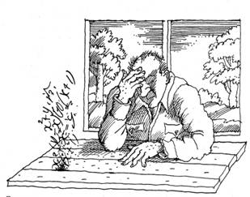
За
раскрытым окном набирала силу полуденная жара, верным признаком
наступления которой служило медленно расползающееся от прогретой
земли колышущееся марево. Между тем, внутри коттеджа сохранялась
приятная прохлада. Я пристроился за столом, погруженный в мысли об
обитателях ортогональности. Нынче вечером они вновь соберутся у Агаи,
которая, как и при подготовке к предыдущим посиделкам, старательно
пекла пироги. Здешнюю жизнь трудно было бы представить без личных
встреч. Все обитатели выбрали добровольное заточение, отгородившись
стеной мрака от большого мира, который не устраивал их по многим
причинам. Мне казалось, что будучи от природы обостренно
чувствующими, они ушли от ненужной суеты и надуманных ценностей,
поставив на первое место свои интересы и пристрастия.
Впереди
ждал очередной вояж к границе, так что мне следовало поспешить с
новыми головоломками, к которым все уже привыкли. Что-либо
придумывать не потребовалось. Память услужливо извлекла реальную
историю, которая поначалу расценивалась как невероятное стечение
обстоятельств. Нынче я лучше знал, что такое
невероятное!
Несколько лет назад довелось мне
отправиться в Москву по казенной надобности. Те из читателей, кто
бывал в командировках, знают, что более скучного занятия не
существует, причем неважно, трясешься ли ты по разбитой дороге в
карете, как проделал это в былые времена Радищев, либо, как сейчас, с
комфортом мчишься поездом или летишь самолётом. Уже в начале дальнего
пути новообращенные пассажиры с удивлением обнаруживают, что
свободного времени оказывается слишком много.
Указанное
свойство человеческой натуры особенно сильно проявляется в поездах.
Часами смотреть в окно могут только дети, все остальные стремятся
найти себе любое мало-мальски стоящее занятие. А именно, играют в
карты, через силу спят, читают что под руку попадёт, поют песни, с
удовольствием и много едят, еще больше пьют, заводят быстротечные
романы, часто курят в тамбуре или, не найдя себе применения, впадают
в ступор. Мир поезда в миниатюре отражает человеческую жизнь, но
любые страсти проявляются здесь не в пример сильнее.
В
тот раз в купе вечернего поезда сложилась редкая компания, хотя
поначалу всё выглядело совершенно заурядно. Мы разговорились и
познакомились. Молодожёны Лена и Игорь совершали свадебное
путешествие в столицу, а Дима, средней руки коммерсант, ехал на
встречу с поставщиком продукции, которой собиралась торговать его
фирма.
Разговор беспорядочно крутился вокруг
погоды, последних видеофильмов, растущих цен, очередного скандала с
привилегиями, громкого заказного преступления. Досужие темы
отступили, когда Лена выложила на купейный столик книгу о
головоломках, послужившую катализатором дальнейшего развития событий.
Лена пояснила, что вместе с Игорем им нравится
в свободное время решать головоломки. "Это - словно гимнастика
для ума", - добавила она. Не прошло и нескольких минут, как все
присутствующие знали, что испытывают одинаковое влечение к
головоломкам. Прозвучало заманчивое предложение отложить книгу и
рассказать о головоломках, запомнившихся каждому. Оно вызвало прилив
энтузиазма, а результат не заставил себя ждать. На один вечер купе
поезда Петербург-Москва превратилось в фан-клуб, где за стаканом чая
гремели споры, прерываемые то горестными вздохами, то радостными
восклицаниями, где под стук колес в колеблющемся свете дежурного
освещения незримо витало бессмертное архимедово
"Эврика!"
Вспоминая эту необычную
поездку, я решил, что головоломки, рассказанные в тот вечер, как
нельзя кстати пригодятся на посиделках. Были они такими.
-
Непросто сейчас вести бизнес, - приступил к своему рассказу Дима. -
Непомерными поборами обложило государство, а кроме него есть "крыша",
которой также надо платить, есть санинспекция, торгинспекция,
пожнадзор, патрульные группы милиции и прочее, прочее... Что
остается? - хитрить и изворачиваться. Результаты независимого
обследования ста коммерческих фирм дали следующие результаты. Треть
фирм, которые занимаются сокрытием доходов, также практикует
незаконный оборот наличных денег. Половина фирм, практикующих
незаконный оборот наличных денег, скрывает доходы. Только двенадцать
процентов фирм не делают того и другого. Сколько фирм из ста
одновременно скрывают доходы и ведут незаконный оборот наличных
денег?
Слово
взяла Лена.
- Представьте
прямоугольник шириной две и длиной одну линейную единицу. В нём можно
разместить два круга диаметром в одну линейную единицу. Если длина
прямоугольника составит две линейные единицы, то в нём поместятся
четыре таких круга, три - шесть и так далее. При какой наименьшей
длине в прямоугольнике удалось бы разместить на один круг больше, чем
его удвоенная длина?
Достав
с полки кейс, Дима порылся в нём и вынул стопку акций.
-
В нашей фирме есть брокерский отдел, там работают
два дилера. В течение дня они продавали акции на бирже. Если бы
каждый продал столько акций, сколько продал другой, то первому
понадобилось бы времени на день больше второго. Во сколько раз меньше
акций продал за день первый дилер?
Дальше
Дима предложил другую головоломку.
- Один
из моих школьных знакомых стал политиком местного масштаба. Коллеги
считают его энциклопедистом, ведь он имеет обширную библиотеку,
которую демонстрирует при всяком удобном случае. В ней больше книг,
чем слов в любой из книг, причём в библиотеке нет книг с одинаковым
количеством слов. Сколько слов в одной из его книг, самой полезной
для него?
Настала
моя очередь.
- Признаюсь,
люблю плоды киви. Думаю о том, что они станут дешевле. Тогда
количество штук киви, на единицу большее разности старой и новой цен
за десяток, выраженных в рублях, можно было бы купить на четыре рубля
дешевле, чем если бы десять штук продавались по цене, большей на ту
же разность. Сколько штук киви я имел ввиду?
А
вот что увлеченной компании поведал Игорь.
-
Сейчас жить сложно не только в бизнесе, поэтому вечерами мне
приходится подрабатывать официантом в ресторане. Во время одной из
тусовок, приуроченной к какому-то празднованию, произошла разборка.
Пять парней хотели выяснить, кто из
них самый крутой. Припомнив конфликты, имевшие место в прошлом, они
установили следующее. Витя круче Чемодана и Бублика. Чемодан круче
Башмака, Араба и Бублика. Башмак круче Вити и Араба. Араб круче Вити
и Бублика. Бублик круче Башмака. Всё перепуталось, и дело чуть не
кончилось стрельбой. Кто же, в натуре, был самый крутой?
Не
уступая Игорю, свои математические способности продемонстрировала
Лена. Она предложила взять четыре
буквы А, Е, К, Р и расставить их в случайном порядке друг за другом.
Какова вероятность, что из них получится слово русского языка?
Следующая её головоломка являла симбиоз
биологии и демографии. В Петербурге
четыре миллиона жителей. Известно, что количество волос на голове
любого человека не превышает одного миллиона. По крайней мере,
сколько жителей Петербурга имеют одинаковое количество волос?
При
всем желании я не сумел припомнить, кто рассказал другую курьезную
головоломку. Нет сомнений, что дважды
два равно четырём. В это "дважды два" также дважды
требовалось вставить одну и ту же цифру, чтобы получить новое
равенство, столь же справедливое, как и первоначальное.
Ближе
к концу прозвучала головоломка Игоря.
- Не так
давно я служил в армии. Во время
медосмотра, предшествовавшего призыву, четыре призывника, Антон,
Богдан, Виталий и Денис, стали сравнивать свои возраст, рост и вес.
Самый старший, Антон, весил меньше Богдана. Самым высоким был Богдан.
Виталий оказался ниже всех и уступал Богдану в возрасте, зато весил
больше других. Какие сравнительные возраст, рост и вес имел Денис,
если каждый из призывников занимал различные позиции по перечисленным
характеристикам? Не забывайте
Шерлока Холмса и примените дедукцию, - прокомментировал Игорь.
В
заключение вечера решали ребусы. Однако их простота обманчива, скажу
я вам. Если в слове "каппа"
между первой и второй буквами вставить знак радикала, то извлечение
степени сводится просто к вычеркиванию середины подкоренного слова.
Куда уж проще! А можно сложить
пятьдесят девять и пятьдесят шесть, чтобы получить сто пятнадцать.
Или десять умножить на десять и получить сто. И неважно, записаны эти
равенства арабскими или латинскими цифрами. Однако латинская запись
представит также и ребус, в котором скрыта арабская.
Всё
хорошее когда-нибудь кончается. Вот и это интеллектуальное пиршество
завершилось к полуночи, что было вызвано естественным желанием
выспаться. А поутру, простившись на вокзале, мы разбежались по своим
делам. Где вы теперь, мои милые попутчики, какие головоломки решаете?
*
* *
Наступил
вечер с посиделками. Веселье было в полном разгаре: все припасенные
головоломки решены. По этому случаю Гордей отбил залихватскую
чечетку. Расходиться было слишком рано и разговор зашел об истории
возникновения головоломок, в которой мои собеседники были хорошо
осведомлены. Они встречались со многими из тех, кто, так или иначе,
приложил руку к возникновению головоломок, в том числе ставших
классическими.
Всё услышанное мною смешалось в
тугой узел. Помню, что воспоминания то и дело прерывались репликами и
комментариями, а иногда вспыхивал жаркий спор по поводу событий и
дат. Сухой остаток коллективного экскурса в историю сводился к
следующему.
Невозможно указать где и когда
появилась первая головоломка. Уверенно можно говорить об одном:
головоломки стали закономерным результатом развития
естественнонаучных знаний и в какой-то момент отпочковались от сферы
чистой науки. Из стихосложения к головоломкам перешли игры со
словами, породившие обширную область лингвистических
головоломок.
Безусловно, в начале начал была
математика. По сути, многие древние задачи представляли собой
головоломки, которые использовались в обучении. Решение каких-то из
них влекло за собой дальнейшие успехи математики, что, в свою
очередь, способствовало разнообразию самих головоломок, так как
расширяло их тематическую содержательность.
Уже
в древней Месопотамии, почти пять тысяч лет назад, составляли и
решали достаточно сложные алгебраические задачи на определение
неизвестной величины. Позже в Древнем Египте появились первые
задачники. Задачи, помещённые в них, были просты с точки зрения
сегодняшнего дня, но уже тогда многие из них имели житейскую
наполненность, а это приближало бесстрастные вычисления к реальности.
Их безошибочно можно отнести к головоломкам, так как относительная
простота сочеталась с изрядной долей содержательности, превращая
поиски решения в увлекательное занятие.
Шотландский
египтолог Хинд обнаружил папирус, датируемый XVII веком до нашей эры,
посвященный математике. Он представляет собой свиток длиной около
пяти с половиной метров и шириной около пятнадцати сантиметров. Писец
Ахмес, написавший текст, утверждает, что скопировал его с оригинала
двухсотлетней давности. Задача 79 из папируса имеет следующее
содержание. В семи домах содержат по семь
кошек. Каждая кошка ловит семь мышей в день, а каждая мышь, останься
она живой, съела бы за тот же день семь колосьев пшеницы. Если каждый
колос может дать семь гекатов зерна, сколько всего здесь
перечислено?
Математика
формировалась неравномерно, в разное время вклад в ее развитие
сделали Вавилон, Древняя Греция, Китай, Индия. Кстати математика в
Вавилоне имела дело не только с арифметикой, но и с алгеброй,
серьёзно обгоняя в этом отношении Египет. Интересно, что в Вавилоне
использовалась шестеричная система счисления.
Древнегреческий
математик Диофант почти через две тысячи лет после появления папируса
Хинда предложил такую задачу: "Найти три
числа, которые при попарном сложении дают в сумме двадцать, тридцать
и сорок".
В Европе
самым первым собранием головоломок и логических задач стала книга
"Задачи для развития молодого ума" ирландского богослова,
ученого и просветителя Алкуина. Она появилась во второй половине IX
века. Написанная на латинском языке, книга включала 53 задачи. Задача
с номером 18 известна под названием "задачи о переправе".
Впоследствии она встречается почти в каждом более позднем издании,
претендующем на полноту изложения.
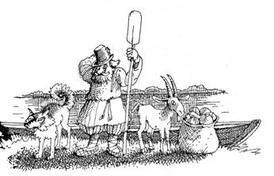
Крестьянину
потребовалось пересечь реку, имея при себе волка, козу и связку
кочанов капусты. Лодка, которую он смог разыскать, вмещала за раз
только любую пару из перечисленного. Однако крестьянин имел строгое
наказание перевезти все на другую сторону в хорошем состоянии, без
повреждений. Как следовало выполнять переправу?
Задача 14 имела смысл шутки: "Весь
день бык пашет поле. Сколько следов он оставит на пашне?"
Задача 43, по замыслу Алкуина, детская: "У
хозяина триста свиней. Он дал указание забить их в три дня, чтобы
любой день забивать нечетное их количество. Сколько свиней будет
забито в каждый из дней?"
Истинный
расцвет головоломок наступил в нашем тысячелетии, чему способствовали
несколько событий. Во-первых, завершалась эпоха религиозного
обскурантизма, а это привело к прекращению преследования математики,
более того, учёных-математиков перестали воспринимать наравне с
чернокнижниками, заключившими союз с дьяволом. Математика оформилась
в виде законченной науки и стала находить новые сферы применения.
Во-вторых, выросла общая образованность, что значительно увеличило
круг людей, интересующихся головоломками. Наконец, в Европу были
завезены шахматы, давшие импульс изобретению новых игр и связанных с
ними головоломок.
Итальянцы Фибоначчи (XIII
век) и Тарталья (XVI век) включили головоломки в свои научные
изыскания. Первому принадлежала задача о кроликах. Некто
приобрел пару кроликов и поместил их в огороженный со всех сторон
загон. Сколько кроликов будет через год, если считать, что каждый
месяц пара дает в качестве приплода новую пару кроликов, которые со
второго месяца жизни также начинают приносить приплод?
Кстати, именно Фибоначчи способствовал появлению в Европе привычных
нам арабских цифр. Случилось так, что сравнительно молодым человеком
он оказался в Северной Африке, где помогал своему отцу в торговых
делах. Именно там он узнал от арабов их форму записи чисел, а затем
использовал её в своих трудах.
Тарталья,
который первым обнаружил способ нахождения корней кубического
уравнения, придумал задачу о семнадцати лошадях. В
завещании умершего отца семейства говорилось, что имевшихся в
хозяйстве семнадцать лошадей следовало поделить между наследниками в
отношении одна вторая к одной третьей к одной девятой. Как выполнить
завещание?
В XVI веке
появилась другая известная задача-головоломка. В
компании из двадцати человек на церковные нужды собрали двадцать
монет, причём мужчины заплатили по три монеты, женщины - по две, дети
- по половине монеты. Сколько было мужчин, женщин и детей?
А
что же головоломки со словами? Говорили и о них. Они существовали уже
три тысячи лет назад, ведь именно тогда грек Пиндар, велеречивый
поэт, сочинил стихотворение-головоломку, в которой спрятал
зашифрованный текст. Другой грек Ликофрон, также склонный к
поэтическому творчеству, во время длительной командировки в
Александрию составил льстивые анаграммы имён царственных правителей
Египта. Видимо, умение изобретать головоломки было небесполезным
занятием при дворе. Впрочем, это признавали и раньше - даже в
прообразе Библии на древнееврейском языке построение текста скрывает
некоторые головоломки.
Водник припомнил
удивительный случай. Перескочив через века, он заговорил о ребусах.
Логикой развития поэтические формы в лингвистических головоломках
заменили приземленные ребусы, появившиеся во Франции в эпоху
Возрождения. Они, безусловно, не столь изящны и рассчитаны на более
широкий круг читателей, ибо содержат всего лишь комбинации слов,
символов и картинок, шифрующих текст, однако найти и прочесть его все
равно не просто.
- Один из ребусов, -
рассказывал Водник, - в виде послания получил как-то Вольтер.
Прусский король Фридрих приглашал его отобедать во дворце Сан Суси.
Послание было составлено по последней моде и представляло изображение
двух дробей, между которыми располагалась буква "a". Левая
дробь содержала над чертой букву "P", под чертой -
изображение двух рук. Правая - цифры 6 и 100 соответственно. В
переводе с французского, на котором был составлен ребус, он содержал
фразу "Завтра обед в Сан Суси". И что вы думаете? Вольтер,
славившийся остроумием, ответил в том же духе. Он сочинил
ребус-ответ: "У меня хороший аппетит", заключавшийся в двух
буквах: "G a". Великие умы умели развлекаться! - заключил
Водник.
Лёшка также вспомнил о ребусах,
сославшись при этом на англичанина Джексона, учителя математики,
который в начале XIX века опубликовал головоломку в стихах, вольный
перевод которой звучит следующим образом. Девять
вычти из шести, десять - из девятки, после сорок уменьшай, аж на пять
десятков. Цифрой равною шести данный ребус заверши. Но про минусы у
чисел, полагай, никто не слышал. Дальше вовсе не спеши - просто ребус
напиши.
Продолжение этих
занятных историй по логике вещей должно было касаться кроссвордов, о
чем я не преминул сказать Воднику.
- А что,
давай поговорим о кроссвордах, расцениваемых самой популярной
головоломкой нашего века, - наморщив лоб, приступил Водник. -
Конечно, надо бы Косму об этом расспрашивать, но и я кое-что знаю.
Действительно, если исходить из широты распространения, кроссворды
вполне можно считать изобретением века. Я не имел счастья встречаться
с Артуром Винном, которому приписывается создание первого кроссворда.
Впрочем, ситуация с приоритетом может оказаться такой же, как в
области радио, кто первый: Маркони или Попов? Это неважно, изложу
факты. Англичанин по рождению, Винн перебрался в Америку, где стал
редактором развлекательного раздела одной из газет, выходивших в
Нью-Йорке. Он тщательно и крайне добросовестно заполнял этот раздел
головоломками, загадками, анекдотами. В качестве очередного
развлечения в 1913 году он придумал новую игру со словами -
кроссворд, ключевым словом первого из которых являлось английское fun
- "забава". Это клетчатое поле и считается прародителем
жанра, которым не брезгуют ни жёлтая пресса, ни солидные
издания.
- Нигде я не ошибся? - вопросом,
обращенным к Косме, закончил Водник.
Косма
слегка пожал плечами и завёл речь совершенно о другом. Как я уже имел
возможность убедиться, ему всегда было что сказать! Непонятными
ветрами более ста лет назад его занесло в Англию. Это была эпоха
викторианского расцвета, когда Англия блюла роль владычицы морей.
Заморские территории приносили неслыханные доходы, процветали
искусства и науки. Те времена породили много знаменитостей, среди них
был Льюис Кэрролл. Косма рассказывал:
- Кэрролл
представлял собой необычного человека: угловатого, так как пропорции
его тела не были симметричными, со странно кривой улыбкой. Будучи
глухим на одно ухо, он, к тому же, заикался. Несмотря на духовный
сан, он не верил в догмат загробной жизни, а вместо уроков слова
божьего, читал лекции по математике, причем делал это так скучно, что
студенты колледжа просили сменить опостылевшего лектора. Его
необычная застенчивость, вылившаяся в странную дружбу с девочками,
способствовала написанию книги о приключениях Алисы, бывшей тогда
одной из его маленьких знакомых. Позднее корифеи мира головоломок,
такие как В. Н. Белов и Раймонд Смаллиан, были очарованы сказкой об
Алисе, нашли в ней источник для нового творчества. Хотя Кэрролл
сочинил более сотни книг, в основном для детей, практически все они
благополучно забыты. Но не забыты головоломки, придуманные им в часы
одиночества. Вот две из них.
Косма прикрыл
глаза, небрежно раскинулся на лавке и ушёл в воспоминания. Вся его
поза выдавала врожденный аристократизм.
-
Однажды некий дворянин, находясь в гостиной
своего замка, обнаружил, что единственное окно квадратной формы,
которое имелось в зале, даёт чересчур много света. Он пригласил
подрядчика и попросил переделать окно, чтобы через него проходила
ровно половина света. Главным условием было требование сохранить окно
квадратным, той же высоты и ширины. Дворянин не разрешал использовать
ни занавеси, ни жалюзи, ни затемненное цветное стекло. Возможна ли
желаемая переделка?
Пусть
буржуи с жиру бесятся, - подумал я в связи с услышанным. - А где
вторая головоломка?
- В
Стране Чудес, куда перенеслась Алиса, ей выпала честь познакомиться с
Герцогиней, оказавшейся большой любительницей перемывать косточки
соседям.
- Возьми, к примеру, Синюю Гусеницу и
Крошку Билля. Гусеница считает, что они оба безумны.
-
Кто из них в действительности безумен? - спросила Алиса.
-
Не скажу! - отвечала Герцогиня. - Я и так сообщила тебе всё, что
необходимо.
Как же обстояли дела?
Я
понял, что Косма рассказывал исключительно для меня. Присутствующие
лишь делали вид, что слушают, но по их лицам было заметно - все
сказанное слишком хорошо знакомо. И даже при этом, как понравившуюся
песню, они были готовы выслушивать полюбившиеся головоломки раз за
разом. Тем более, подвернулась возможность доставить удовольствие
нечастому гостю, роль которого отводилась мне. Гулять, так гулять! -
подумал я. Тогда попрошу-ка рассказать и о других великих
изобретателях головоломок. А когда-нибудь сам перескажу услышанные
истории, может быть, немного приукрасив. Вероятно, эти мысли, на
которых я поймал себя, приобрели форму слов, так как позже вспомнили
и другие имена, без которых история головоломок была бы неполна.
Чтобы подсластить пилюлю своей меркантильной
просьбы, на суд компании я предложил головоломку, навеянную книгами
Кэрролла.
Пётр и Павел,
бездомные со стажем, живущие в подвале расселенного дома, утром нашли
десятирублевую монету. К вечеру между ними было несколько миллионов
рублей. Есть ли соображения, как им удалось это
сделать?
Поразмышляв над
головоломкой и расценив её как чересчур легкую, присутствующие
потребовали чего-нибудь сложнее.
- Хорошо, снова
головоломка про Алису. При встрече с Синей
Гусеницей ей пришлось решить задачу.
- Сколько
будет, если тринадцать умножить на тринадцать? - услышала Алиса
неожиданный вопрос, сопровождаемый клубами дыма.
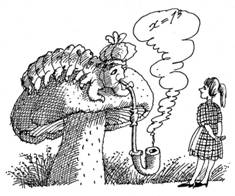
-
Конечно, сто шестьдесят девять, - ответила она.
-
Неправильно! Ответ - двести тринадцать.
Удивлённой
Алисе Гусеница сообщила, что здесь использованы другие цифры.
Какие?
Эта задача
вызвала большее одобрение, а вскоре принялись за очередные байки.
Колоритнейшей фигурой являлся американец Сэм Ллойд, живший на рубеже
веков. Родился он в Филадельфии, но затем вместе с семьей переехал в
Нью-Йорк. Он хотел стать инженером, но забросил эту идею, когда начал
прилично зарабатывать на своих головоломках. Уже шахматные задачи
сделали его достаточно известным. Первую головоломку он придумал в
четырнадцать лет, а в шестнадцать был редактором шахматного
ежемесячника. Начав с шахмат, он затем безмерно расширил сферу своих
интересов.
В его руках обыкновенные задачи
превращались в увлекательнейшие истории. Замечательным изобретением
стала головоломка "игра в пятнадцать", с подачи Ллойда
вызвавшая ажиотаж в Америке, а затем, словно чума, перекинувшаяся
через океан и завоевавшая весь мир. Популярность игры была столь
велика, что владельцы фирм вывешивали специальные объявления,
запрещавшие играть с ней в рабочее время. В Германии ей баловались на
заседаниях Рейхстага, а во Франции ей даже присвоили новое название -
"такен" ("задира"), так как она казалась более
серьезным бедствием, чем алкоголь и табак.
"Игра
в пятнадцать" состоит из пятнадцати одинаковых плоских фишек в
виде квадратов со стороной в одну линейную единицу. Все фишки
пронумерованы цифрами от одного до пятнадцати и уложены в открытую
квадратную коробочку размерами шестнадцать на шестнадцать линейных
единиц так, что остается свободным место еще для одной фишки. Любую
из соседних фишек можно пальцем передвинуть на пустое место. Задача
заключается в том, чтобы расставить фишки рядами согласно
последовательности нанесенных на них номеров.
Проблема
не очень то серьёзная, если бы не одно обстоятельство. При попытке
уложить фишки в коробочку случайным образом оказывается, что лишь
половина из всех возможных комбинаций поддается упорядочению согласно
приведенному условию. Другие комбинации сводятся к расположению, при
котором фишки от первой до тринадцатой стоят на своих местах, а две
фишки с номерами четырнадцать и пятнадцать поменялись местами.
Подобную комбинацию использовал Ллойд для рекламной компании
головоломки: за ее решение был назначен приз в несколько тысяч
долларов, очень даже приличная сумма по тем временам. Автор ничего не
терял, так как "игра в пятнадцать" из данной комбинации
была не разрешима. Однако выяснилось это значительно позже, после
детального математического описания свойств головоломки. Что это:
предвидение или случайность?
Творчество Ллойда
было иллюстрировано и другой головоломкой, поведанной когда-то им
самим:
- Эта головоломка
появилась во время верховой поездки на осле от Биксли до Квиксли.
Спина и все, что ниже, заныли еще в начале пути, но проводник не имел
возможности предложить что-либо лучшее. Осел плелся медленно, как
ржавые часы, не намереваясь менять выбранную скорость движения. Чтобы
подбодрить проводника, дона Педро, который изо всех сил тащил осла за
вожжи, я предложил ему выпить винца, когда будет достигнут Пиксли.
Предложение нашло горячий отклик. Через сорок минут я поинтересовался
у Педро, как далеко мы продвинулись. Тот ответил: "На половину
расстояния, оставшегося до Пиксли". Через семь миль я снова
спросил у повеселевшего проводника: "Далеко ли до Квиксли?"
Ответ был таким же: "Половина расстояния, на которое мы отошли
от Пиксли". Примерно через час процессия из проводника, осла и
автора въехала в Квиксли. Как далеко расположены друг от друга Биксли
и Квиксли?
Биксли и
Квиксли можно выдумать, что невозможно по отношению к Англии,
находившейся через океан от Ллойда, в которой в одно время с ним жил
другой замечательный изобретатель головоломок Генри Дьюдени. Его
национальность сказывалась в излишней корректности и суховатости. Эти
черты, тем не менее, не мешали ему охотно делиться своими
головоломками со всеми, кто ими интересовался. Многие его находки
перекочевали в книги, вышедшие под другими именами. Одно время он
сотрудничал с Ллойдом, но затем их пути разошлись.
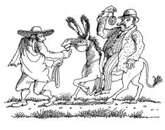
Дьюдени
славился богатством воображения, артистизмом и изяществом изложения,
а также глубокими математическими знаниями, хотя и был самоучкой в
плане математики. Эти качества нашли отражение в его головоломках.
Они тяготеют к математике, но для решения большинства из них
достаточно иметь элементарные математические познания. Их надо
читать, как литературные произведения, но от этого не теряется их
смысл, скрытый за легкостью изложения. Чем
пробка в полной бочке вина похожа на такую же, но выпавшую из бочки?
Это одна из его "кентерберийских" головоломок, решение
которой вообще не требует вычислений, но не обходится без серьёзного
умственного напряжения.
В этот момент
встрепенулась задремавшая было Агая и беспардонно вмешалась в
разговор.
- Что вы тут всё про басурманов
говорите? С вами не соскучишься! Неужто русского духа в головоломках
нет? Чую, чую, меня не проведешь, недаром издавна с народом русским
дружусь.
Окончательно разлепив глаза, Агая стала
говорить более внятно.
- Триста лет назад в
Москве жил Леонтий Магницкий, автор бессмертной "Арифметики",
которую позже Ломоносов назвал "вратами учености". Не зря
он применил такое сравнение, сама по Магницкому училась. Эта книга
являлась учебником, по сути, первым систематическим изложением основ
математики. Стремясь к живости и доступности, Магницкий использовал в
тексте привлекательные задачи-головоломки, требовавшие для решения не
столько заучивания правил, сколько сообразительности и смекалки.
Припоминаю его задачу с орехами, которые дед
купил внукам. Всего их было приобретено сто тридцать штук, но, прежде
чем разрешить полакомиться, дед попросил внуков поделить их на две
части, чтобы меньшая часть, увеличенная в четыре раза, была бы равна
большей части, уменьшенной в три раза. Что за
части?
Присутствующие с
иронией переглянулись но, не мешали высказаться Агае, которая вовсе
не рассчитывала услышать ответ. Все сделали вид, что отдают должное
угощению. Между тем, Агая расходилась пуще и пуще.
-
Следующая задача от Магницкого. Отец решил
отдать сына в учёбу и спросил учителя: "Скажи, сколько учеников
у тебя в классе?" Учитель ответил: "Если придёт ещё
учеников столько же, сколько имею, и полстолько, и четвёртая часть, и
твой сын, тогда будет у меня сто учеников". Сколько же учеников
имел учитель?
- Что,
забористая задачка? То-то! Именно Магницкого надо считать
родоначальником русских головоломок, после него они обрели право на
жизнь и стали появлялись на русском языке достаточно регулярно. Были
"Гадательная арифметика для забавы и удовольствия",
неизданная книга головоломок поэта Бенедиктова, рукопись которой
исчезла во время войны, книги Игнатьева "В царстве смекалки",
потрясающее издание "Забавная арифметика" Аменицкого и
Сахарова.
Тон Агаи неожиданно изменился и стал
почти умиротворенным, когда она заговорила о недавнем прошлом.
-
Особое место среди российских знаменитостей занимает Яков Перельман,
оставивший после себя богатейшее собрание головоломок. С его легкой
руки получило широкое распространение само слово "головоломка",
что позволило, хотя бы условно, отделить задачи чисто математические
от задач-головоломок. Он придал этому слову современный смысл. До
Перельмана головоломки именовались по-разному, но, преимущественно,
отдавались на откуп математике и рассматривались как обычные задачи,
может быть, более хитрые, чем остальные. Перельман был настоящим
энциклопедистом: его интересовали физика, астрономия, проблемы
космических полетов, педагогика, техника и, конечно, математика. Его
жизнь трагически оборвалась в блокадном Ленинграде, но наследие
Перельмана до сих пор многим открывает дверь в удивительный мир
головоломок.
Теперь Агая обращалась
исключительно ко мне, видя во мне самую подходящую жертву.
-
Возьми его книгу "Живая математика" и сразу наткнешься на
главу "Завтрак с головоломками". Чёрт с ним, что у нас
ужин, послушай. Эта головоломка имеет отношение к дачному сезону.
Летом три разных жильца сняли дачу. Однажды,
чтобы приготовить обед, они разожгли огонь в печи, которой
пользовались сообща, но каждый готовил для себя. Первый жилец сжег
три полена, второй - пять, а третий, ввиду отсутствия у него дров, в
качестве компенсации уплатил первым двум восемь копеек. Как тем
следовало поделить между собой деньги, если для приготовления обеда
все пользовались печью одинаково?
Под
вопросительными взглядами Агаи вкупе с остальной братией, заранее
знавшими ответ, мне следовало бы наморщить лоб и наподобие Лешки
шевелить губами, но ответ был известен и мне, что вовсе не
обескуражило Агаю. Она сказала:
- А вот
посложнее, оттуда же. Дед и внук имели нечто общее: в 1932 году
возраст каждого совпадал с двумя последними цифрами года рождения.
Что теперь?
Я не успел открыть рот, как Косма,
перед этим всматривавшийся распахнутое окно и обнаруживший нависшее
над головой расцвеченное звездами небо, категорично предложил:
-
Поздно, пора по домам. Жаль, что не успел рассказать вам о своих
встречах с американцем Мартином Гарднером, известным в России
современным сочинителем головоломок. Его книги переведены огромными
тиражами. Да что говорить, все их читали. Но есть и другое, о чём
известно одному мне. Чтобы не скучно было расходиться, вот вам
домашнее задание - новая головоломка Гарднера.
-
Итак, есть выверенные рычажные весы и три пары
бильярдных шаров равных размеров: пара белых шаров, пара синих и пара
красных. В каждой паре один шар немного легче, причем все легкие шары
имеют одинаковый вес, все тяжелые шары также одного веса. Двумя
взвешиваниями требуется определить какие шары лёгкие, а какие -
тяжёлые.
Компания,
получив очередную игрушку, которую Косма, словно тонкий психолог,
приберёг под занавес посиделок, стала расходиться. На лицах читались
усталость и пресыщенность, вызванные угощеньем и головоломками.
Глава
6
RICORDANZA
или
РОЖКИ ДА
НОЖКИ
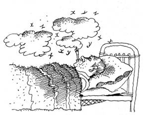
Несколько
ночей подряд мне надоедали голодные комары, зудящим облаком хлынувшие
из-под лесных тенет. Уснуть получалось лишь после того, как я
заполнял комнату дымом, выкурив подряд несколько папирос. Комары
позорно бежали, но глотать дым ночь напролет было не лучшим
удовольствием, да и по утрам в голове звучал барабанный бой. Я искал
спасения у Агаи, рассчитывая на ее магические возможности и
приписываемое ей умение повелевать лесными тварями. Выслушав слезные
жалобы, она поступила вопреки моим ожиданиям, а именно, сняла со
стенки ароматный пучок сушеных трав и велела положить рядом с
кроватью. Неизмеримой оказалась мудрость ее совета - комары исчезли,
а под действием сладких травяных запахов сон стал крепким, без
сновидений. Так бывает после тяжелой физической работы. Короче, быт
налаживался.
Я регулярно помогал Агае, выполняя
её поручения по хозяйству. Частенько, чтобы разнообразить наш стол,
выбирался за грибами, которые долго не переводились в окружающем
лесу. Приносил также ягоды малины, заросли которой располагались в
двух шагах от дубовой рощи. Иван героически продолжал строительство и
ожидал бригадира. Время от времени он отправлялся на незатейливый
отдых в деревеньку, несколько раз в моей компании. Как правило,
развлечения сводились к разговорам, неумеренному потреблению
спиртного, пляскам под гармошку, хотя однажды рутину скрасила забава
"стенка на стенку", в которой более всех отличился Иван, от
природы наделенный пудовыми кулаками.
Так
проходили день за днем. Скучать, во всяком случае, не приходилось:
разных историй, впечатлений и новых головоломок хватало надолго
вперед. Здешние обитатели превратились в хороших друзей, с которыми я
близко сошелся на почве тех же головоломок. Взаимная симпатия
согревала наши отношения, даже Лешка перестал дуться на меня после
розыгрыша с обдуриловкой, о чем я еще расскажу. Мы обменивались
головоломками, как дети меняются вкладышами от жевательных
резинок.
Не хочу хвастаться, но ориентироваться
в этих местах я научился не хуже сказочного колобка и совсем не
нуждался в его помощи. Странствования по лесу вошли в привычный уклад
новой жизни, они доставляли удовольствие еще и из-за погоды, которая
была на удивление теплой - затянувшееся бабье лето. Ощущая себя
свободным эпикурейцем, я предавался умеренной алкоголизации и
составлению разнообразных головоломок. Кроме того, готовил проход в
свой мир.
Когда, уже в который раз, я наведался
к Косме, чтобы испросить у него очередную бочку уксуса, то не сумел
обнаружить его античное жилище - на месте роскошного портика
возвышался обычный склон холма. Поразительно, но исчезла сама
терраса, которую не сумел найти даже вездесущий колобок: он слепо
тыкался в то место, где, по его разумению, должен был находиться
вход.
Ситуацию разъяснил Гордей, в это время
обретавшийся по соседству. Оказалось, что Косма, руководствуясь своей
неугомонной натурой, отправился на недельку в большой мир, чтобы, как
прежде, встряхнуться и побуянить. Это был тот редкий случай, когда я
пожалел милицию. Косму просто не возьмешь! - это не пьяный в
подворотне.
Гордей был необыкновенно рад моему
появлению и за неимением уксуса вытащил из своего логова приличный
жбан медовухи. Рассевшись у входа, мы принялись коротать время. По
рукам ходил объемистый деревянный ковш, а содержимое жбана неумолимо
сокращалось.
Тема для разговора нашлась сразу.
По всему, второе имя Гордея было Горыня, но его корень мог быть
двояким - и от "гореть" и от "горы". Отринув
ненужную скромность, - к тому моменту жбан ополовинился - я попросил
Гордея внести ясность. Он склонялся к слову "гореть". Это
было логично, так как суждение основывалось на способе отвода глаз,
принятом в его роду. Еще бы, в мифическом обличье Горыня выступал со
множеством огнедышащих голов. В противоположность Косме, он не хранил
сокровищ, которые приписывались ему народной молвой. Родовой облик
вынуждал его громом греметь во время появления на людях, изрыгать
огонь, бить могучих и не очень богатырей, а также похищать
подвернувшихся под руку бояр, князей и прекрасных барышень. Только в
виде морока, конечно.
- Получается, что
неспроста твое имя связывают с женщинами, - заметил я не без
издёвки.
Опорожнив новый ковш, Гордей вытер
рукавом рот и с укоризной посмотрел на меня, лишь затем снизойдя до
объяснений.
- Откуда такие мысли? Облик, или
личина, в нашей среде является врожденным, как цвет глаз или форма
носа у человека. Ведь знаешь, с кем имеешь дело. Он похож на грим,
которым пользуется актер перед выходом на сцену. Однако играя роль и
выступая в другом обличье, что бы ни говорили о перевоплощении в
образ, актер остается самим собой. Точно так же никто из нашего
роду-племени не походит на жутких порождений тьмы, изображенных в
преданиях и сказках. Стремиться властвовать над миром или приносить
зло и погибель, насильничать, обижать слабых - полнейшая чушь,
которая не имеет к нам никакого отношения.
Гордей
снова приложился к ковшу и, подумав, добавил:
-
Что там народные сказания, это цветочки! Особенно расстарались
нынешние литераторы, пишущие фэнтэзи. Метод сводится к одному: чем
страшнее - тем лучше. Незатейливые умы сочиняют сюжет покруче, где
творят кровавые заклинания, а в перерывах сносят друг другу головы и
вырывают руки-ноги. Чтобы достоинства и добродетели главного героя
могли в полной мере проявиться, он крушит нечисть направо и налево.
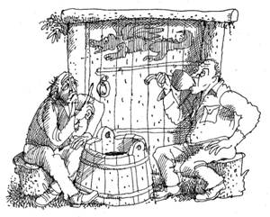
-
Неужто тебя это волнует? И без твоих литераторов в жизни недоумков
хватает, - успокоил я примолкнувшего Гордея.
Он
состроил умное лицо и дикторским голосом отчеканил:
-
Вот, вот! Добро должно быть с кулаками и утверждать себя мордобоем,
ведь в жизни всегда есть место подвигу. Тьфу на них, - подытожил он и
с чувством сплюнул на землю.
Оценив степень
искреннего огорчения собеседника, я не стал искушать его
долготерпение и перевел беседу на головоломки. Почему бы не обсудить
смысловые парадоксы, вызванные самим словом "головоломка"?
Тем более, компетентность собеседника сомнений не вызывала. Мои
соображения были таковы.
- Существуют различные
типы головоломок, а основные связаны с содержанием понятия
"головоломка", которое имеет два значения. Во-первых,
обозначение сложной трудноразрешимой задачи или загадки - именно
такие головоломки предпочитают все живущие здесь. Во-вторых, слово
"головоломка" относится к игрушке или некоторой
механической конструкции, требующей решения подобной задачи. В
отличие от игры, для участия в которой необходимо не менее двух
игроков или команд, соперничающих друг с другом, головоломка лишена
внешней конфликтности и решается единственным игроком, хотя также
возможно коллективное решение, когда все "играют в одни ворота",
как, например, происходит на посиделках у Агаи.
-
Что ты лекцию читаешь, знаю я это. Скажи что-нибудь поинтереснее, - с
надутым видом отреагировал Гордей.
- Не спеши.
Еще не дослушал, а уже выводы делаешь, - парировал я. - Обрати
внимание, что наиболее распространены языковые, или лингвистические,
головоломки, связанные с составлением и преобразованием слов,
например, кроссворды, сканворды, филворды, шарады, анаграммы,
каламбуры, метаграммы, ребусы, палиндромы. Язык сломаешь, пока
выговоришь! Слова нерусские и заимствованы из французского,
английского, латинского, греческого языков. Похоже, что, кроме
загадок, только два названия: палиндром и кроссворд имеют нормальные
русские эквиваленты: перевертень и крестословица, используемые,
кстати, очень редко. Это свидетельствует о том, что русский язык не
является родным для большинства головоломок со словами.
Действительно, они сравнительно недавно появились в нем. И странно
даже не это, а то, что русский язык также находится в оппозиции к
головоломкам-конструкциям. Лично мне известны всего два исконно
русских названия таких головоломок: шаркунок и меледа. Да ты,
наверное, о них и не слышал...
- Слышать то
слышал, но пойми, наконец, что менталитет русских людей не тяготеет к
классификациям, эту особенность и отражает язык. Куда ему до
эскимосского, где снег имеет более тридцати названий, передающих
различные смысловые оттенки. Они характеризуют свойства снега, его
местоположение, описывают условия появления.
Русскому
человеку присущи и не такие содержательные штучки, особенно, когда
его что-то разозлит: никто другой более подходящих к случаю эпитетов
не найдет, - мысленно возразил я Гордею, но не стал отвлекаться на
явную провокацию.
- Согласен. А не странно ли,
что в других языках прижилось огромное количество названий
головоломок, вместе с тем, ни один, даже самый продвинутый в этом
отношении, не смог преодолеть двойственности слова "головоломка"?
Неспроста это! К примеру, мистический дуализм сохраняется в
английском: слово "puzzle" используется для обоих типов
головоломок, хотя англоговорящие всегда могут обозначить
занимательные задачи как "teaser" и "poser".
Русский язык не исключение, нечего его хаять!
Гордеем
овладел дух здоровой дискуссии, он аппелировал к другому аспекту
феномена головоломок.
- А тебе известно, что
головоломки часто причисляют к той или иной конкретной дисциплине? Но
можешь ли ты объяснить, почему головоломки отсутствуют в школьных или
институтских задачниках?
Вопрос был
нетривиальный. Разговор становился все интереснее, про ковш с
медовухой я уже не вспоминал.
- Дело в том, что
головоломки не предназначены для контроля конкретных знаний! - сам
себе ответил Гордей. - Это был бы нонсенс. Они развивают ум,
прививают умение нестандартно и творчески мыслить, доставляют
удовольствие, но не являются учебной дисциплиной. Случается, что к
так называемой занимательной математике относят и задачи-головоломки.
Это глубокое заблуждение: головоломки - головоломками, а математика -
математикой. Тем более, занимательность в математике вещь весьма
специфическая. Посуди сам. Привлекательность головоломки значительно
теряется по мере её усложнения. Это факт. Самые захватывающие
головоломки органичны по содержанию и исключительно просты в
формулировке. Как правило, их решение не требует серьезных познаний в
математике, хотя без элементарных знаний, конечно, не обойтись.
- Но это не означает, что нет привлекательных математических задач! -
возразил я. - Правда, их привлекательность совсем другого сорта и
возникает как порождение явной или завуалированной сложности. Для
профессиональных математиков вопрос решается тривиально: чем труднее
задача - тем она привлекательнее. Каверзные математические задачи
роднит с головоломками только изящество формулировки, и это всё!
Привлекательность конкретной головоломки, скорее всего, определяется
тем, сможет ли ее решить и школьник, и академик, и пенсионер, и любой
другой, независимо от профессии и образования. Как правило, отличие
хорошей головоломки от схожей математической задачи состоит в
сюжетной наполненности, которая, собственно, и делает ее
головоломкой. А всякая задача, грубо говоря, посвящена вычислениям
ради вычислений, когда "магия числа" выходит на передний
план и является самодостаточной. Понятно, что в таком случае любая
содержательность, помимо математической, за ненадобностью отпадает.
Действительно, многие головоломки перекликаются с различными научными
дисциплинами, но правильнее воспринимать их не как учебный предмет
или хитрый дидактический прием, а как прекрасный способ получить
интеллектуальное удовольствие. Возьми, к примеру, те же
лингвистические головоломки. Они не являются разделом русского языка
или литературы, смешно было бы предъявлять к ним такие же требования,
как к упражнениям по чистописанию.
Гордей подвел
итог:
- Если понимаешь и ценишь головоломки, в
конце концов обязательно придешь к выводу, что есть неосязаемая
грань, после которой головоломка рассыпается и попадает в разряд
заурядных задач, порой весьма нудных. Особенно ощущаешь это, когда
присмотришься к сочинениям авторов, претендующих на оригинальность.
Далеко не каждый способен создать изящную форму и вдохнуть в нее
истинную гармонию. А математические задачи - скорее дело техники, чем
вдохновения.
Слова Гордея навели на мысль о том,
что во многих странах мира с уважением относятся к создателям новых
головоломок, а их изобретение дает вполне приличный доход. Корни
такого отношения появились еще в прошлом веке, когда прогресс науки и
техники отвел интеллекту почетное место в ряду человеческих
достоинств. Даже тесты по определению умственного развития, так
называемые IQ-тесты, используют головоломки, как объективный критерий
способностей человека.
Меня нисколько не
удивляло, что здешние обитатели любили головоломки. В моем лице они
обрели родственную душу. Некоторое недоумение вызывала ограниченность
их пристрастия. А именно, основным увлечением, предметом страсти,
споров и раздумий являлись только задачи-головоломки. Отчего
оказались в стороне головоломки-конструкции, называемые еще
механическими головоломками? Я спросил об этом Гордея.
-
Не удивляйся. Здесь, действительно, не в ходу механические
головоломки. А есть другое место, где от них без ума. Такие
головоломки владеют помыслами большого клана наших родственников,
проживающих в похожей ортогональности где-то на Британских островах.
Не зря говорят, привычка - вторая натура.
Эх,
стоило бы побывать и там, в заморском чудо-заповеднике, - размечтался
я, прекрасно понимая, что вход в него скрыт от меня за семью
печатями. Мне бы с теперешними проблемами разобраться. Близкая, но
даль, откуда просто так не выберешься. Капризы ортогональности суть
непредсказуемы, на них полагаться не стоит. Да что это я? - остановил
я себя. Лучше о приятном! Оживившийся Гордей вскоре
принялся засыпать меня головоломками.
- В
запутанном подземном лабиринте, куда я однажды забрался, скрываясь от
преследователей, бродили поодиночке страшненькие, но вполне
миролюбивые, кикиморы а также кровожадные зубастые упыри. Когда я
переждал угрозу и решил выбираться из лабиринта, захотелось оценить
свои шансы. Было известно, что при случайной встрече упыря и кикиморы
упырь съедал кикимору, а при встрече двух кикимор они мирно
расходились. Два встретившихся упыря пожирали друг друга.
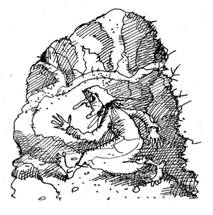
Встреча
с кикиморой мне ничем не грозила, но упырь мог бы сладко закусить
мной. Каковы шансы на выживание, если бы я надолго застрял в
лабиринте и совершенно случайно блуждал по его ходам и галереям?
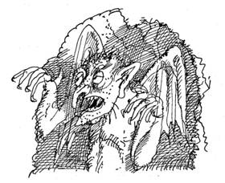
Другая
головоломка выглядела более оптимистической.
-
Было это или нет - не помнит уже никто. Во
времена короля Артура я оказался в гостях у далекой аглицкой
родственницы, фрейлины при дворе. Короче, устроили рыцарский турнир
во имя прекрасной дамы. Бились тридцать один рыцарь, один на один. В
каждой паре, назначаемой жребием, победитель продолжал турнир, пока
не остался только один, - догадываешься кто? - которого королева
жаловала серебряными доспехами. Итак, турнир с выбиванием из седла
закончился, сколько всего состоялось поединков?
В
ответ я извлёк коробок спичек:
- Как
из пяти спичек, не ломая, не сгибая и не расщепляя их, сложить куб?
Существует несколько вариантов ответа.
Время
с Гордеем пролетело незаметно. Жаль, что уксуса не добыл.
*
* *
При очередном путешествии
по лесу на моем пути, опять из ниоткуда, возник Лёшка, своим
нежданным появлением напомнив нашу первую встречу, когда он столь же
неожиданно исчез. Любит он эффекты!
- Не
забывай, друг мой, - вместо приветствия произнес он, - если в лесу
заплутаешь, сними обувь с правой ноги, а одежду надень наизнанку.
Я начал улыбаться, на что Лёшка заметил:
-
Расхохотаться - не к добру: быть биту. Примета такая. Угадай! Кто
сделал - отказался, кто взял - не догадался, а кто имеет - очень
сожалеет. Есть и другая загадка. Загробный
мир как лекарь выступает, картину жизни напрочь исправляет: всю жизнь
смердит и мерзостно воняет, но отойдя, благоухает.
Благодушие
пронизывало Лёшку насквозь. Он знал, что его ожидает порция
головоломок, загодя приготовленная мной для подобной встречи. Однако
был ещё сюрприз, которым я решил отплатить ему за театральность и
привычку цепляться к одинокому путнику. Его я заготовил напоследок. А
вначале были головоломки о моих знакомых.
Как-то
пригласили меня на торжество по случаю дня рождения. Возраст юбиляра
оставался загадкой до тех пор, пока, не пропустив ни одного тоста в
свою честь, он не сказал, что если его возраст поделить на два,
перевернуть цифры получившегося числа и вычесть два, то опять
получится его возраст. Что праздновали?
В
привычку другого моего знакомого входило начинать день с яйца,
сваренного всмятку, кофе и бутерброда. Однако он не покупал яиц, не
заимствовал их у кого-то, тем более, не крал, а также не держал кур.
Откуда яйца?
А еще как-то я присутствовал при
интереснейшей беседе Крылова и Гуревича.
- Не
забудь, что ты должен мне десять рублей, - сказал Крылов.
-
Что? - ответил Гуревич, - Эти деньги не стоят того, чтобы о них даже
вспоминать.
- Хорошо, можешь дать мне двадцать
рублей, - парировал Крылов.
Существовала ли
какая-то логика в словах Крылова?
Головоломки
были рассказаны, настало время сюрприза. Тщательно подбирая слова, я
предложил Лёшке заключить пари. На корзину грибов для разнообразия.
Предложение было немедленно и с воодушевлением принято. Однако, узнав
о содержании пари, Лёшка несколько приуныл. Я заявил, что смогу
одурачить его к нашей следующей встрече, даже не пускаясь во все
тяжкие. Когда он поймет, что одурачен, станет ясно, что никто никогда
прежде не мог провести его так, как это сделаю я. Подобный поворот
был Лёшке вновинку. Поначалу он возмутился, затем, подумав, ударил по
рукам и исчез не попрощавшись. В момент его исчезновения мне
послышалось: "Только попробуй..." Но теперь это были его
проблемы.
На следующий день поутру Лешка
отирался у входа в коттедж, не предпринимая каких-либо попыток
проникнуть внутрь. Видимо, он опасался оказаться одураченным, а
может, боялся праведного гнева рано разбуженного Ивана. Вид у Лешки
был невыспавшийся, угрюмое лицо украшали мешки под глазами. Закурив
папиросу, я начал с определения взаимных позиций.
-
Ожидал всю ночь, что я тебя одурачу каким-то хитрым образом?
Размышлял, как мне это удастся сделать?
- Точно,
поспорили же вчера.
- Однако я не сумел тебя
одурачить, да ещё ночью, когда сам крепко спал?
-
Полагаю, нет.
- А ведь считал, что я обязательно
это сделаю, раз взялся спорить?
- Ну,
считал.
- Теперь прикинь, вот я тебя и одурачил.
Ждал одного, а получилось другое. Проспорил - тащи грибы, корзина в
прихожей. Не имея возможности привести хоть какие-то аргументы в свою
пользу, Лёшка уныло поплелся выполнять взятые обязательства. Не
обижай беззащитных путников, нечисть лесная! - оправдывался я перед
собой, понимая, что Лёшка совсем не привык проигрывать. Грибы,
конечно, он принес, но, вместо ожидаемых боровиков, жесткие и
червивые опята. Таким замысловатым образом - испортив мне аппетит -
он компенсировал свой проигрыш.
* * *
Пребывание на Гремучем холме стало
более комфортным после восстановления шалаша, когда-то возведенного
Юршей. Подкинув туда несколько охапок мягкой травы, я почти
цивилизованно прятался от дождя и палящего солнца. Тут же хранилось
моё великое богатство - собранный из ничего инструментарий. Замечу,
что добровольное затворничество оставляло много времени на
размышления. Где начало того конца, которым кончается начало? -
как-то задумался я над извечным прутковским вопросом. Глупость,
конечно, если полагать, что жизнь устроена по спирали. Вместе с тем,
спираль бытия обладает ничтожным шагом, а монотонная смена лиц,
событий, поступков сводит жизнь к заурядному мотанию по кругу,
который повторяется изо дня в день. Как ни прискорбно, это и есть
библейское возвращение на круги своя. Меня не покидало ощущение, что
вскоре может замкнуться мой очередной круг. Такой поворот совсем не
входил в мои намерения. Тем более потому, что было предельно понятно:
круг бытия не разрывается сам по себе, так сколько же можно ликер
пьянствовать? Делом надо заниматься.
Все
происшедшее до сих пор воспринималось как сказка, в которой герой на
удивление легко и буднично оказывается в невероятном мире. В
обыденной жизни, скованной путами условностей и невероятным
прагматизмом, далеко не каждому дано изведать приключение, даже в том
случае, если сознательно стремишься к нему. Что говорить о моем
отношении к происшедшему, если я оказался неведомо где после
оздоровительной вылазки в пригородный лес за грибами.
Материалистическое мировоззрение вступало в конфликт с тем, что
происходило в этом мире. Однако сам факт существования
ортогональности, населенной приятными и незаурядными обитателями, не
требовал доказательств. Я вовсе не собирался утешать себя цитатой из
Шекспира: "... есть многое на свете, друг Горацио, что и не
снилось нашим мудрецам". Пусть от нее за версту несло здоровым
оптимизмом, она нисколько не способствовала выходу из сложившейся
ситуации, насколько бы невероятной она ни представлялась.
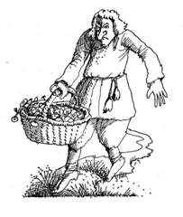
Я
руководствовался другим, более простым соображением: если
ортогональность может впустить внутрь, то с таким же успехом она
может выпустить обратно. Обычная инверсия времени. Были в
подтверждение тому и термодинамические выкладки, но о них я умолчу,
чтобы не запутывать читателей. Всё сводилось к очевидному - нужно
было спровоцировать ортогональность на необходимое мне
действие.
Но прежде требовалось разобраться в
свойствах границы. Конечно, теперь с помощью измерительных приборов.
Это намерение пришло ко мне сразу после первого визита к Воднику.
Поскольку в ортогональности работала его многочисленная
электробытовая техника, следовало ожидать, что должны функционировать
и любые другие электроприборы. Идеальным выходом было бы использовать
стандартный набор измерительного оборудования. Но где его взять? Даже
Робинзон на своём острове, по сравнению со мной, был в
преимущественном положении - кораблекрушение снабдило его всем
необходимым для выживания. Пусть я жил лучше, мне пришло в голову
заняться экспериментальной физикой.
Я обратился
за помощью к Воднику, считая его наиболее подготовленным для
понимания моих проблем. Он наотрез отказался снабдить меня
измерительными приборами и оборудованием, мотивируя отказ каламбуром:
"Подключишь свои приборы к границе - и неоднородность станет
нестабильностью со всеми вытекающими последствиями. Пиши - пропало!
Забудь о своих экспериментах". Воднику нельзя было отказать в
здравомыслии, поэтому не имело смысла переубеждать или давить на
него. Однако я оставался при своем мнении и все-таки выпросил у него
электролампочку. Она и заимствованный у Ивана кусок провода составили
индикаторный контур, который позволил обнаружить переменное магнитное
поле, возникавшее в те моменты, когда граница начинала
светиться.
Следующим шагом стало изготовление
вольтметра. Я соорудил его из деталей холодильника и строительного
мусора, разбросанного вокруг коттеджа. Прибор оказался исключительно
полезным, так как дал возможность снять распределение потенциалов
вдоль границы. Обычно напряжение отсутствовало, но возникало
одновременно с появлением свечения. Оно было тем больше, чем больший
размер имело светящееся пятно. Ортогональность стала представляться
чем-то вроде пузыря, вывернутого наизнанку. Его стенки, роль которых
играла граница, имели разную толщину, а у Гремучего холма граница
утончалась более всего. Приложив к ней внешнее усилие, можно было бы
сделать её почти прозрачной, не протыкая сам пузырь. При этом пузырь
останется в первозданном виде, а стенка приобретет достаточную
проницаемость, чтобы выпустить меня наружу. Главное - не повредить её
при выходе, иначе существует шанс, что пузырь-ортогональность
разорвёт в клочья. А это будут сотни Хиросим! Масштаб проблемы в
состоянии оценить только специалист, да и то прогноз её разрешения
вряд ли окажется благоприятным. Я был здоровым пессимистом,
поэтому началась обычная работа.
Удобно, когда у
тебя в квартире электричество. Воткнул вилку в розетку - и никаких
проблем. В девственном лесу нет ничего похожего. Как провести
эксперимент? Я остановился на изготовлении простейшего
электростатического генератора - всего то были нужны четыре жестянки
и капельница с водой. Другое дело, что, создавая напряжение в
несколько тысяч вольт, генератор не мог долго его поддерживать. Но
для начала годился и он. Называется такой генератор капельницей
Кельвина, так как вода в нём, действительно, капает сквозь две пары
металлических банок, накрест соединенных проводами. Со временем одна
пара заряжается положительно, другая - отрицательно. Принцип работы
прост: случайно возникшее электрическое поле затем усиливает само
себя посредством происходящего в нем разделения свободных зарядов.
Основная роль отводится наличию у воды электропроводности, так как
именно по воде заряды разгоняются электрическим полем между банками.
Собрать подобный генератор могли бы еще древние египтяне, имей они
представление о природе электричества. Я знал немного больше
древних.
Естественно, вся работа выполнялась
мной при соблюдении полной секретности. Возможно, это был секрет
полишинеля, но никто не требовал разъяснений и не вмешивался в мою
деятельность. Когда генератор был собран и проверен, я приступил к
эксперименту.
В банки, установленные на толстой
сухой доске, мерно капала вода. Заряд генератора постепенно рос,
между проводами начали проскакивать мелкие искорки. В этот момент я
наложил электроды на мрак границы, и электрошок подействовал!
Результат превзошел ожидания: огненный всплеск, сопровождаемый
радужной рябью, облако тумана между электродами, оплавившимися на
концах. Зачистив электроды, я повторил эксперимент. Следовало
проверить, как меняются механические свойства границы в момент
разряда. В качестве исследовательского прибора сгодилась обычная
суковатая палка. Мрак размяк и на какое-то время пропустил её внутрь,
а затем с силой вытолкнул наружу.
Это был успех.
Я имел достаточно оснований, чтобы нагрузить высоким напряжением
больший кусок границы. Слаботочный генератор уже не годился, надо
было придумывать что-то другое. Конечно, не стоило и мечтать о сборке
роторного электрогенератора, да и не предназначен он для получения
высоких напряжений. Решение созрело случайно - под рукой имелось все,
чтобы смастерить гальванический элемент типа столба Вольта с уксусом
в качестве электролита. Для банок с электродами идеально подходила
пустая стеклянная тара, которой у Ивана скопилось немеряно.
Работа растянулась на недели. Как-то несколько дней подряд я плел
толстый электропровод, предназначенный для подачи расчетного
напряжения. Пришлось заняться даже землеройными и плотницкими
работами. А именно, я спланировал склон Гремучего холма, сделав
насыпь высотой несколько метров, которая подходила к самой границе.
Наверху на вкопанных сваях был установлен помост, предназначенный для
подключения к границе: туда шел один выход батареи. Второй был
заземлён на помещенную в грунт металлическую болванку. Под навесом
расположилась гигантская гальваническая батарея из разнообразных
банок и бутылок, облепленных проводами.
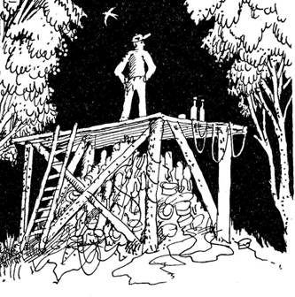
И
вот настал день, когда подготовительные работы были завершены. На
всякий случай я перекрестился и врубил напряжение. Взору предстала
фантастическая картина. Между электродом и поверхностью земли
угольный мрак разрывало ослепительное сияние, перед ним,
перемешиваемый невидимым гигантским вентилятором, водоворотом
клубился жёлтый туман. Он неудержимо расползался, поглощая породившее
его инженерное сооружение. Его взвихренные языки толчками пронзали
потоки ярчайшего света, который ослеплял и мог соперничать с прямыми
лучами полуденного солнца. Давно сделанный выбор неотвратимо вел меня
в центр туманной воронки, где только и стоило искать ключ к
возвращению. Конечно, оставался шанс вынырнуть в другое время и в
другом месте, если вообще случится вырваться живым из недр
пространственно-временной неоднородности.
Генератор
действовал безотказно, однако громадные токи, порожденные им,
нагревали уксус, еще немного - и он закипит. Впрочем, это было и к
лучшему - через какое-то время устройство самоотключится, перестав
провоцировать ортогональность. Я отринул сомнения, на которые уже не
оставалось времени, и, словно спринтер у заветного финиша, рванул в
туман. Последовал весьма ощутимый удар электрическим током, но что
там несколько сот вольт, когда на меня разряжались киловольты!
Кисель границы забивал глаза и нос, пахло озоном, как после дождя с
грозой. Бежать становилось всё труднее. Сбиться с выбранного
направления не давала обострившаяся интуиция. Вопрос о конечной цели
движения исчез сам собой, когда впереди на фоне ослепительного сияния
невыносимо ярким пятном проступил источник света. Уже почти слившись
с ним в экстазе самоуничтожения, я внезапно ощутил, как меня
подхватило и куда-то понесло, выбив из головы остатки мыслей. Далее
последовало падение. Сердце на миг замерло, но ожидаемого удара не
произошло. Внезапно и сразу появилась дорога, на обочине которой
высился указатель с надписью "Песочная 2 км".
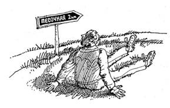
Я тяжело дышал, не веря тому, что оказался в местах, где начиналась
невероятная эпопея. Поражала погода - так же тепло, как там, откуда я
только что прибыл. Куда подевалась зима, время которой, по моим
подсчетам, давно наступило? Удивляться я уже не мог - вот доберусь до
дачи, а там попытаюсь хоть в чем-то разобраться. Это соображение
вдохнуло энергию и вскоре я был на даче, где несколько месяцев назад
провёл вечер, соблазняемый ожиданием грибного удовольствия и лёгкой
прогулки по лесу. На первый взгляд, ничего не изменилось. Даже вещи,
перед недолгим отсутствием брошенные где попало, находились в том же
беспорядке. Телевизор, включенный как средство сообщения с окружающим
миром, бесстрастно информировал, что ещё не закончился день, в
который я отправился по грибы. Почему бы и нет?
Судьбы людские высечены на небесных скрижалях, их не перепишешь как
неудачное сочинение. Видимо, и моя скрижаль имела вполне определенное
содержание. Забуду ли ортогональность? Скорее всего, воспоминания
станут влечь назад, в необычные места с их удивительными обитателями,
а ночами будут сниться головоломки, которые имели право появиться на
свет только в этом месте, лишенном бремени скоротечного бытия.
Затем напомнил о себе день завтрашний. С ним было связано множество
неотложных дел, мысли о которых отчетливо проступили в памяти. Пока
же я предпочёл свежее пиво с воблой. Не сразу, но кое-что становилось
понятным. Таинственное предпочитает не делиться своими секретами. Как
в гомеопатии, где подобное отвергается подобным, ортогональность при
первой же возможности выкинула меня туда, откуда извлекла.
Уже
собравшись на электричку, я обнаружил у дверей корзину, которая
казалась безвозвратно оставленной в ортогональности. Её доверху
наполняли крепкие грибы, мечта любого грибника. Это был добрый знак,
а может, он означал, что приключения продолжаются? Стоило ли
загадывать? - впереди вечность. (конец первой книги,
решения и вторую книгу смотри ниже).
|
|
- Персоналии
- История знаковых игр
- Наша игротека
- Головоломки, лингвистические игры
- Теория
- Прикладные аспекты
- Наши рецензии
- Журнал в журнале
- Другие статьи
|